Как улучшать
диаграммы C4 на основе обратной связи
Подход
documentation as code с помощью PlantUML и MKDocs
Работа с PlantUML
Создание диаграмм в PlantUML
Интеграция PlantUML с MkDocs
As-Is и To-be
As-Is
To-be
Спринт 2
Паттерн Strangler Fig
Антипаттерн “Большой взрыв”
Как реализовать Strangler
Fig
Шаг 1. Определение доменной
области
Шаг 2.
Проектирование и разработка новых микросервисов
Шаг 3. Перенаправление
трафика
Фича-тоглы
Шаг 4. Мониторинг
и верификация микросервисов
Средства мониторинга
Методы верификации
Шаг 5. Настройка
итерационного процесса
подводные камни
реализации Strangler Fig
Определение доменной области
Определение списка функций
продукта
Методы расстановки
приоритетов
MoSCoW
Матрица Эйзенхауэра
Дополнительные методы
приоритизации
Anti-Corruption Layer и
маршрутизация
Задачи ACL при миграции
на микросервисы
Как работает ACL
Когда внедрять и отключать
ACL
Когда стоит отказаться от
ACL
Как внедрить ACL
Технологии и
инструменты для создания ACL
Маршрутизация в
микросервисах
Техники
маршрутизации между монолитом и новыми сервисами
Стратегии
проектирования микрофронтендов
Вертикальная нарезка
Автономность команд
Изоляция
Паттерн Backend for Frontend
Проблемы
традиционного API в сложной архитектуре
Что такое Backend for
Frontend
Когда использовать BFF
BFF для микрофронтендов
Преимущества BFF
Что важно учесть при дизайне
BFF
Паттерны управления
микросервисами
Паттерн CQRS
Разделение чтения и
записи данных с CQRS
Документирование применения
CQRS
Паттерн Saga
Подходы к реализации Saga
Оркестрация
Хореография
Обеспечение
согласованности данных с помощью Saga
Документирование применения
Saga
API Gateway
Управление
API микросервисов с помощью API Gateway
Оценка
различных подходов к использованию API Gateway
Взаимодействие
микросервисов с использованием Kong
Настройка и
использование API Gateway — Kong
Безопасность,
мониторинг и отладка API Gateway
Управление
аутентификацией и авторизацией
Настройка защиты от
DDoS-атак
Мониторинг метрик на API
Gateway
Пример,
Использование API Gateway в WeatherNow
Взаимодействие
микросервисов с использованием Kafka
Взаимодействие между
микросервисами
Основные
концепции синхронного взаимодействия
Основные
концепции асинхронного взаимодействия
Пуш (Push) и Пул (Pull)
подходы
Паттерны асинхронного
взаимодействия
OpenAPI vs AsyncAPI
Kafka для асинхронного
обмена
Альтернативы Kafka
Настройка кластера Kafka
Интеграция Kafka с
микросервисами Java
Мониторинг и
отладка работы Kafka в продакшене
Отладка работы Kafka
Создание и
использование Helm-чартов в Kubernetes
Оркестрация контейнеров
Helm
Основные компоненты Helm
Создание Helm-чарта для
QuickDelivery
Развёртывание
Helm-чарта для QuickDelivery
Обновление Helm-чарта
Cloud Native Computing
Foundation (CNCF)
CNCF Landscape
Интеграция
CNCF-инструментов в проекты
Service Mesh
Основные концепты Service
Mesh
Основные элементы
конфигурации Istio
Создание и настройка
Service Mesh с Istio
Service Discovery
Настройка Service Discovery
с Istio
Feature Toggling
Настройка Feature Toggling с
Istio
СI/CD-процессы
Continuous Integration (CI)
Continuous Delivery (CD)
Continuous Deployment
Pipeline as Code
CI/CD, PaC и DevOps
Как настроить базовый
CI/CD-конвейер
Что ещё можно
автоматизировать?
Как
автоматизировать CI/CD-конвейеры с помощью скриптов
Как настроить
мониторинг CI/CD-конвейера
Микросервисы и процесс
взаимодействия
Распределённые транзакции
Стратегии развёртывания
Cовременные стратегии
развёртывания
Helm
Настройка Github Kubernetes
Circuit Breaker
Спринт 3
Цифровая трансформация
Формирование
стратегии цифровой трансформации
Текущее и целевое состояние
бизнеса
Бизнес-архитектура компании
Бизнес-возможности компании
Текущая и целевая
архитектура
Обзор основных
классов IT-систем компаний
Описание текущей и
целевой архитектуры
Карта IT-ландшафта
Целевая карта ландшафта
Платформы в
разработке и архитектуре компаний
Диаграмма интеграции
приложений
Планирование
стратегических изменений
Дорожная карта цифровой
трансформации
Различные подходы
Проектный подход
Продуктовый подход
Метрики бизнеса и продуктов
Инвестиционные метрики
Метрики продукта
Управление
требованиями и определение бизнес-процессов
Как описывать требования
Архитектурно значимые
требования
Пример описания требований
по FURPS+
Пользовательские сценарии
Потоки вариантов
использования
Описание бизнес-процессов
Проектирование
архитектуры и управление изменениями
Architecture
Design Record и Architecture Decision Log
Формат и шаблоны ADR
Создание ADR на примере
Дизайн-мышление
Планирование реализации
Спринт 4
Введение в масштабирование
Репликация
Репликация master-slave
Паттерн read-replica
Репликация multi-master
Преимущества и недостатки
репликации
Целесообразность репликации
Репликация на MongoDb
Настройка репликации
MongoDB в Docker
Кеширование
Redis Cluster для
кеширования данных
Настройка Redis Cluster
Механизм работы Redis
Реализация репликации в
различных БД
Шардирование и
партиционирование
Методы шардирования
Реализация шардирования
Шардирование в Redis
Шардирование в PostgreSQL:
практика
Шардирование в MongoDB
Горизонтальное
масштабирование приложения
Способы сохранения
состояний приложения
Балансировщик нагрузки
Виды балансировщиков
нагрузки
Как настроить
балансировщик нагрузки Nginx
APISIX Gateway
Практика: настройка APISIX
Gateway
Архитектура без ведущего
узла
Архитектура
Master-Slave vs Leaderless-архитектура
Репликация без
ведущего узла в Apache Cassandra
Условия
согласованности на примере Cassandra
Механизмы
восстановления согласованности в Cassandra
Consistent Hashing и
виртуальные ноды
Принцип работы consistent
hashing
Особенности работы с
Cassandra
Шарды и реплики в
геораспределённой среде
Облако и гибридная
архитектура
Создание
шардированного кластера MongoDB
Распределённое кеширование
Как
настроить распределённое кеширование в Yandex Cloud
Content Delivery Network
(CDN)
Методы разделения данных
на основе DNS
Механизм работы CDN
Как настроить CDN в
облаке Yandex Cloud
Спринт 5
Оценка угроз системам
компании
Виды угроз
Векторы угроз
Примеры реализации угроз
данным
Оценка угроз
Как управлять рисками
Типы рисков
Как разработать
проект архитектуры безопасности
Законодательный
уровень информационной безопасности
Работа с персональными
данными
Классификация данных
классификация
данных при проектировании систем
Вызовы и
решения в управлении разными классами данных
Составление проверочного
листа
Ключевые разделы
IT-инфраструктуры чек-листа
Проектирование слоя
безопасности
Идентификация и
аутентификация, управление доступом
Идентификация
Аутентификация
Авторизация и управление
доступом
Типичные проблемы
управления доступом
Протоколирование, аудит
Принципы построения
подсистемы аудита
Основные принципы аудита
Определение
состава процессов, подлежащих аудиту
Проектирование
структуры данных для аудита
Записи в логах
Как контролировать
целостность данных
Двухфазный коммит
Eventual Consistency
Компенсационные
транзакции в микросервисах
Приёмы,
которые компенсируют отсутствие транзакций в распределённых
системах
Угрозы целостности
данных и меры защиты
Средства защиты доступа к
данным
Проектирование
защиты от несанкционированного доступа
Методы защиты данных
Как настроить RBAC в
Kubernetes
Настройка RBAC: практика
Спринт 6
Как работает
HTTP-кеширование
Паттерны
кеширования и способы инвалидации кеша
Способы инвалидации кеша
Практика: настройка
кеширования
Реализация Cache-Aside
Паттерн Refresh-Ahead
Паттерны Backpressure и
Circuit Breaker
Метрики нагрузки
Паттерны снижения нагрузки
Паттерн Backpressure
Паттерн Circuit Breaker
Мониторинг и логирование
Observability
Мониторинг
Этапы мониторинга
Основные подходы к
мониторингу
Логирование
Сбор
и визуализация метрик с помощью Prometheus и Grafana
Prometheus
Развёртывание Prometheus
Grafana
Установка Grafana
ELK.
Создание и настройка индексов c помощью Elasticsearch
Как работает Elasticsearch
Рекомендации по работе с
индексами
Практика:
настройте Elasticsearch, Logstash и Kibana
Трейсинг
OpenTelemetry
Применение мониторинга,
логов, кеша
Спринт 7
Введение в искусственный
интеллект (AI)
Искусственный интеллект
NLP
Работа с
данными как основа машинного обучения (ML)
CRISP-DM
ML-модели и их виды
Спринт 1c
Микросервисы и
документирование решение
микросервисы как способ разработки программного обеспечения, при
котором приложения строят из множества небольших, независимых
сервисов
Каждый сервис с одной бизнес-функцией.
Микросервисы общаются между собой через легковесные механизмы, такие
как HTTP API и сообщения.
Каждый микросервис ориентирован на конкретную бизнес-функцию и
разрабатывается вокруг неё.
Проблемы
нужно продумывать, как микросервисы будут взаимодействовать друг с
другом.
в распределённой среде, что усложняет отладку и тестирование
Сетевые задержки и надёжность
Более сложное управление конфигурацией
Любая организация, которая проектирует систему, неизбежно создаёт
дизайн, который копирует структуру коммуникаций этой организации.
Разделение ответственности.
В микросервисной архитектуре каждая команда отвечает за свой
сервис
Минимизация зависимостей.
Команды могут работать независимо друг от друга, что минимизирует
количество зависимостей между сервисами
Оптимизация коммуникаций.
Микросервисная архитектура отражает коммуникационные пути внутри
организации.
Преимущества от разделения по закону Конвея
Повышенная автономность команд.
Улучшенная гибкость и адаптивность.
Каждая команда может быстро реагировать на изменения требований и
вносить необходимые улучшения в свой микросервис без необходимости
координироваться с другими командами.
Оптимизированная архитектур
Архитектура системы становится отражением эффективных
коммуникационных путей внутри организации.
Жизненный цикл микросервиса
Этап 1. Проектирование
определение его цели и функциональности
команда анализирует бизнес-требования и принимает решения о границах
микросервиса.
Выбрать технологии и инструменты для реализации микросервиса
Этап 2. Разработка
команда разработчиков пишет, тестирует и документирует код, следуя
принципам разработки микросервисов.
Этап 3. Тестирование
включает в себя проверку его функциональности, производительности и
безопасности
модульные тесты, интеграционные тесты, нагрузочное тестирование,
чтобы оценить производительность микросервиса.
Этап 4. Развёртывание
установка и настройка в производственной среде
среда для развёртывания — настроить серверы и контейнеры.
Автоматизировать процесс развёртывания с помощью
CI/CD-инструментов.
Развернуть микросервис в производственной среде.
Этап 5. Мониторинг и поддержка
Настроить мониторинг, чтобы отслеживать состояние и
производительность микросервиса
Реагировать на инциденты и устранять неполадки.
Обновлять микросервис и внедрять улучшения на основе собранных
данных.
Этап 6. Масштабирование
Проанализировать метрики и логи, чтобы выявить потребность в
масштабировании.
Увеличить ресурсы (CPU, память) или количество экземпляров
микросервиса.
Обеспечить балансировку нагрузки между экземплярами.
Этап 7. Обновление и улучшение
Собрать обратную связь от пользователей и проанализировать метрики,
чтобы выявить области для улучшения.
Разработать и протестировать новые функции.
Обновить микросервис в производственной среде.
Этап 8. Вывод из эксплуатации
Оповестить пользователей и другие команды о том, что вы планируете
вывести микросервис из эксплуатации.
Если нужно, перенести данные и функции на другие сервисы.
Отключить микросервис и удалить его из производственной среды.
Если приложение уже не маленькое, но пока и не огромное, не стоит
сразу внедрять микросервисы. Лучше сначала перейти к модульному
монолиту.
Микрофронтенды
онбординг - процесс, направленный на адаптацию персонала в
компании
Микрофронтенд — это концепция, которая распространяет принципы
архитектуры микросервисов на мир фронтенда.
Модули микрофронтенда
Каждый модуль — это определённая бизнес-область или
функциональность.
Модули разрабатывают, тестируют и развёртывают независимо друг от
друга.
Слой композиции.
Он отвечает за сборку различных модулей микрофронтенда в целостное
приложение,
а также управляет потоком данных и взаимодействием между клиентом и
сервером
Компоновка модулей может происходить
на стороне сервера, на стороне клиента или с помощью гибридного
подхода
Маршрутизация
При работе с микрофронтендами важно выбрать эффективные механизмы
маршрутизации.
Надо гарантировать, что запросы будут направляться к нужному
микрофронтенду
Коммуникационный слой
управляет взаимодействием между микрофронтендами и остальной
инфраструктурой приложения.
можно через API, шины сообщений или собственные системы
событий.
Методы интеграции
микрофронтендов
Build time — объединять во время сборки
Вы помещаете все компоненты в контейнер так же, как библиотеки,
которые вы устанавливаете из npm.
Нужно синхронизировать разные версии библиотек
Между контейнером и микрофронтендами будет тесная связь.
Если появятся изменения в зависимостях, вам придётся развёртывать
пакет заново.
Run time — объединять во время выполнения
Развёртывать модули независимо
Вы объединяете микрофронтенды в единый интерфейс во время исполнения
кода на стороне пользователя.
нужно продумать управление маршрутизацией, разделением состояний и
интеграцией компонентов.
Динамически обновлять отдельные модули.
обновлять отдельные микрофронтенды без переразвёртывания всего
приложения.
Build time лучше подходит простым проектам и проектам, где функции
тесно связаны между собой.
И наоборот, интеграция run time подходит приложениям, которые
требуют высокой гибкости, независимого развёртывания и частых
обновлений.
Методы композиции
микрофронтендов
Композиция микрофронтендов — это процесс сборки нескольких
микрофронтендов в единое целое.
Серверная
все микрофронтенды собирают на сервере
Вся функциональность находится в бекхенде
сервер решает какой микрофонен собрать и загрузить.
обратный прокси-сервер Nginx
либо Backend for Frontend
выбирать если важен SEO, отклик
Клиентская
браузер отвечает за динамическую загрузку каждого микрофронтенда во
время выполнения.
выбирать если много интерактивного контента
Гибридная
возможно благодаря паттерну Backend for Frontend (BFF)
каждый микрофронтенд имеет свой выделенный бэкенд
BFF обрабатывает все данные, взаимодействует с API и при
необходимости предоставляет клиенту предварительно отрендеренный
HTML
После первоначальной загрузки за дело берётся клиентская часть
берёт на себя динамические взаимодействия, которые необязательно
требуют обращения к серверу.
!! лучший выбор, но самый сложный
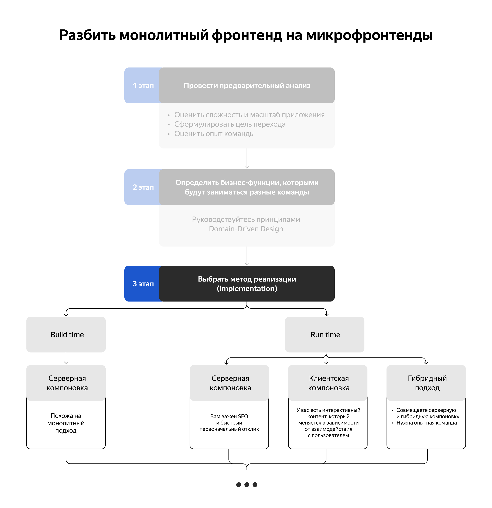
img.png
Маршрутизация
Гибридный подход к маршрутизации.
Он сочетает механизмы маршрутизации и на стороне сервера, и на
стороне клиента:
Маршрутизацию на стороне сервера используют для начальной загрузки
страниц, для SEO и ускорить время рендеринга.
Клиентскую маршрутизацию используют во время взаимодействия с
пользователем.
Это обеспечивает плавные переходы и динамическое обновление контента
без полной перезагрузки страницы.
Динамическая обработка маршрутов:
У каждого микрофронтенда свой маршрутизатор.
Команды могут управлять логикой маршрутизации для своих
разделов.
Центральный оркестратор динамически загружает нужный микрофронтенд в
зависимости от навигации пользователя.
Оркестратор использует маршрутизатор на основе JavaScript для
интерпретации URL-адреса и получения нужного микрофронтенда.
Взаимодействие на основе
API
Микрофронтенды должны взаимодействовать с бэкендом, а не напрямую
друг с другом
!!! между ними нет прямой коммуникации.
но эта стратегия не подойдёт, если вам нужно реактивно обновлять
компоненты одного микрофронтенда в ответ на изменение данных в
другом.
Простой обмен данными.
если у приложения простые коммуникационные потребности, лучше
реализовать API
Паттерн Pub/Sub
это паттерн проектирования, при котором компоненты системы
выступают в роли издателей (publisher) или подписчиков
(subscriber).
Event Bus (шина событий) — это система обмена сообщениями,
которая основана на паттерне Pub/Sub.
События публикуют в шине событий.
Компоненты-подписчики регистрируются в шине и указывают список
событий, которые они хотят получать
подойдет если:
Предпочтительно несвязанное соединение, несвязанное взаимодействие
между микрофронтендами.
действия или обновления в одной части приложения вызывают реакции в
других частях
Независимое развёртывание.
микрофронтенды должны разворачиваться независимо друг от друга.
Библиотека глобального
состояния
Redux, MobX и Context API в React.
все части приложения синхронизируются и последовательно
взаимодействуют с пользователем.
Например, с помощью Redux можно реализовать паттерн Observable state
(наблюдаемое состояние)
Когда использовать библиотеку глобального состояния
Тесная связь между разными частями приложения
несколько микрофронтендов читают из одного состояния и записывают в
него обновления.
Важно поддерживать последовательный пользовательский опыт
несколько компонентов вашего интерфейса отражают состояние
аутентификации пользователя
Сложные требования к управлению состояниями
пример, Онлайн-магазин.
Состояние корзины разделено между тремя микрофронтендами:
собственно, корзиной, списком товаров и оформлением заказа.
Любое обновление должно немедленно отобразиться в нужной части
приложения.
Каждый микрофронтенд может подключаться к этому хранилищу —
обновлять общее состояние или реагировать на изменения.
независимо от React, Vue, Angular
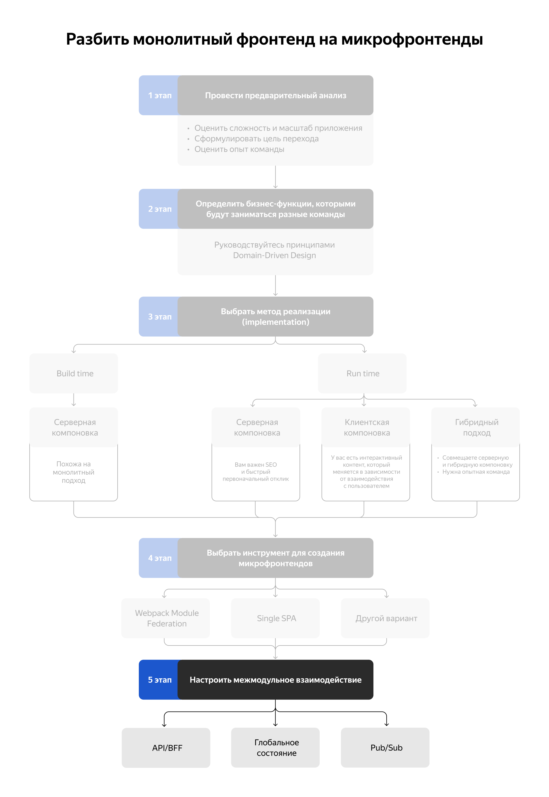 - > когда
приложение простое, используют коммуникацию через API. Каждый компонент
ходит в бэкенд за данными, которые нужны ему для работы. > Если
достаточно обновлять в компонентах только одно конкретное значение,
команды подключают общую шину событий. Она реализует паттерн Pub/Sub.
> нужны состояния более сложные, подключают библиотеку глобального
состояния типа Redux, MobX или NGRX. - микрофронтенды — не лучшее
решение - Приложение маленькое или простое - Ресурсы разработки
ограничены - Компоненты тесно связаны - краткосрочный проект или
прототип - жёсткие требования к производительности - Инфраструктура и
инструментарий ограничены
Domain-Driven Design
предметно-ориентированное проектирование
это подход к проектированию, который предполагает, что приложение
делят на домены (domain).
Они, в свою очередь, описывают разные цели бизнеса.
по факту разделение по бизнес-функциям
каждый домен есть модуль со своей функцией
так же делим команды по бизнес-функциям
разработка программного обеспечения фокусируется на глубоком
понимании бизнес-домена и его модели
Цель микросервисной архитектуры — разбить приложение на множество
автономных сервисов, каждый из которых выполняет свою функцию
DDD предлагает методологию, чтобы определить, какие именно
микросервисы нужны и как они должны взаимодействовать.
Домен — это область знаний или деятельности, которая представляет
собой основную часть работы компании.
В контексте DDD домен охватывает все понятия, связанные с данной
областью, и описывает её поведение и правила.
содержит несколько поддоменов
Поддомен — это логически выделенная часть домена, которая
выполняет определённую функцию или решает конкретную задачу.
Контекст — это область, внутри которой определённые термины и
правила имеют чёткое значение.
В DDD контексты помогают избежать путаницы, определяя границы
использования понятий.
Стратегическое
проектирование
На этом уровне определяется общая структура системы и
взаимодействие между различными частями домена.
Основная задача — разделить систему на поддомены и очертить границы
контекстов.
Bounded Context: определяет границы, в пределах которых
терминология и правила имеют чёткое значение.
Context Map: диаграмма, показывающая взаимодействие между
различными контекстами.
пример
Домен: управление транспортом
поддомен управления расписанием
контекст: планирование расписания
контекст: публикация расписания
поддомен управления платежами
контекст: обработка транзакций
контекст: ведение журнала транзакций
Домен: продажа билетов
поддомен обработки платежей
поддомен управления пользователями
Домен: мониторинг транспорта
поддомен отслеживания транспорта
поддомен отчётности и аналитики
img_3.png
Тактическое проектирование
На этом уровне определяются детали реализации внутри каждого
контекста.
Основная задача — создать модель, которая точно отражает
бизнес-логику и поведение домена.
Основные элементы:
Entities: объекты, которые имеют уникальный идентификатор и
состояние, изменяющееся со временем.
Value Objects: объекты, которые не имеют уникального идентификатора
и полностью определяются своими атрибутами.
Aggregates: группы связанных сущностей и объектов-значений, которые
обрабатываются как единое целое.
Repositories: интерфейсы для доступа к агрегатам из хранилища
данных.
Services: операции, которые не относятся к какой-либо сущности, но
важны для домена.
пример
Микросервис управления расписанием
Контекст планирования расписания:
сущности: расписание, маршрут;
объекты-значения: время отправления, время прибытия;
агрегаты: расписание;
репозитории: репозиторий расписания;
сервисы: сервис планирования расписания.
Микросервис обработки платежей
Контекст обработки транзакций:
сущности: транзакция, платёж;
объекты-значения: сумма, валюта;
агрегаты: транзакция;
репозитории: репозиторий транзакций;
сервисы: сервис обработки транзакций.
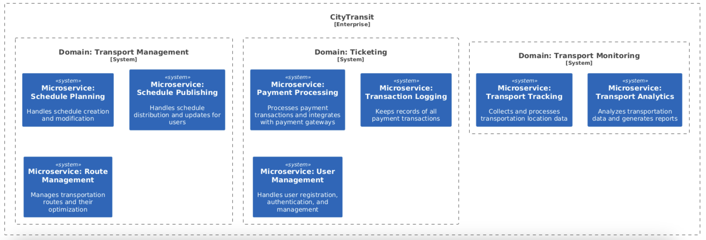 - > Стратегическое
проектирование позволяет определить высокоуровневую структуру системы,
> а тактическое проектирование — детализировать каждый контекст,
обеспечивая реализацию бизнес-логики.
Процесс выделения
доменов и контекстов
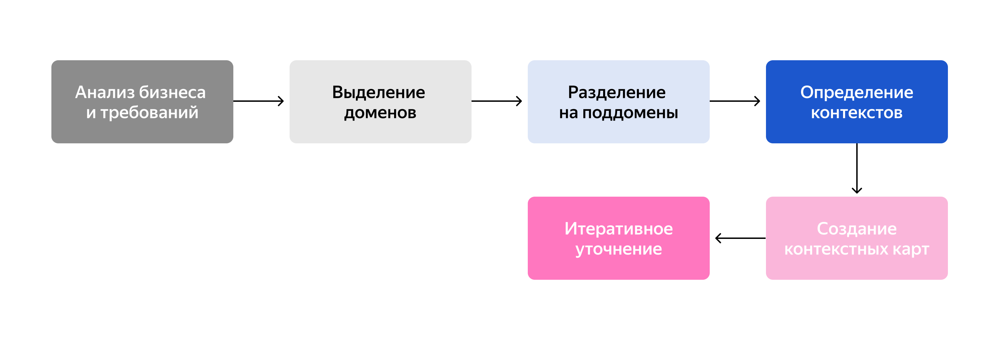 - Шаг 1. Анализ
бизнеса и требований - информация о том, как работает компания, какие
задачи решает и какие проблемы у неё возникаю - Сбор и анализ
бизнес-требований и сценариев использования. - Определение основных
бизнес-целей и приоритетов.
Шаг 2. Выделение доменов
Определение границ домена.
Идентификация основных функций и процессов внутри домена.
Документирование ключевых понятий и терминов, используемых в
домене.
Шаг 3. Разделение на поддомены
Каждый домен может быть разбит на более мелкие логические части,
называемые поддоменами.
Поддомены фокусируются на конкретных функциях или задачах внутри
основного домена.
Идентификация поддоменов на основе функциональных требований.
Определение взаимодействий между поддоменами.
Документирование поддоменов и их границ.
Шаг 4. Определение контекстов
Каждый поддомен может содержать один или несколько контекстов.
Определение границ контекстов внутри поддоменов.
Создание контекстных карт (Context Maps) для визуализации
взаимодействий.
Документирование терминов и правил внутри каждого контекста.
Пример
В поддомене управления расписанием в CityTransit контекстами могут быть контекст планирования расписания (с терминами «время отправления», «время прибытия»).
Контекст публикации расписания (с терминами «публикация», «обновление расписания»).
Шаг 5. Создание контекстных карт (Context Maps)
Контекстные карты визуализируют взаимодействие между различными
контекстами
Создание диаграмм, отображающих контексты и их взаимодействия.
Определение типов взаимодействий (например, интеграция,
антипаттерны).
Документирование зависимостей и договорённостей между контекстами.
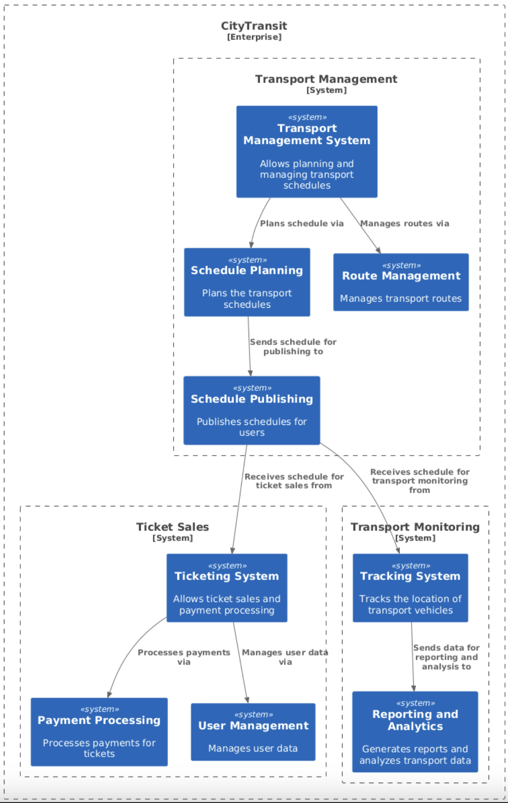
Шаг 6. Итеративное уточнение
Регулярный пересмотр и обновление доменов и контекстов.
Внедрение изменений на основе обратной связи от пользователей и
команды.
Обеспечение согласованности между всеми частями системы.
Применение DDD в
работе с микросервисами
ПРИМЕР
На основе выделенных доменов, поддоменов и контекстов мы можем спроектировать соответствующие микросервисы.
Рассмотрим, как это выглядит на примере CityTransit.
Управление транспортом: всё, что связано с планированием и управлением движением транспорта.
Микросервис управления расписанием:
Планирование расписания: микросервис, который отвечает за создание и изменение расписания.
Публикация расписания: микросервис, который отвечает за распространение и обновление расписания для пользователей.
Микросервис управления маршрутами:
Управление маршрутами: микросервис, который управляет маршрутами транспортных средств и их оптимизацией.
Продажа билетов: всё, что связано с продажей и обработкой билетов.
Микросервис обработки платежей:
Обработка транзакций: микросервис, который отвечает за обработку платежей и интеграцию с платёжными системами.
Ведение журнала транзакций: микросервис, который ведёт учёт всех транзакций и их состояния.
Микросервис управления пользователями:
Управление аккаунтами пользователей: микросервис, который отвечает за регистрацию, аутентификацию и управление данными пользователей.
Мониторинг транспорта: отслеживание местоположения и состояния транспортных средств.
Микросервис отслеживания транспорта:
Отслеживание местоположения: микросервис, который собирает и обрабатывает данные о местоположении транспортных средств.
Аналитика состояния транспорта: микросервис, который анализирует данные о состоянии транспорта и генерирует отчёты.
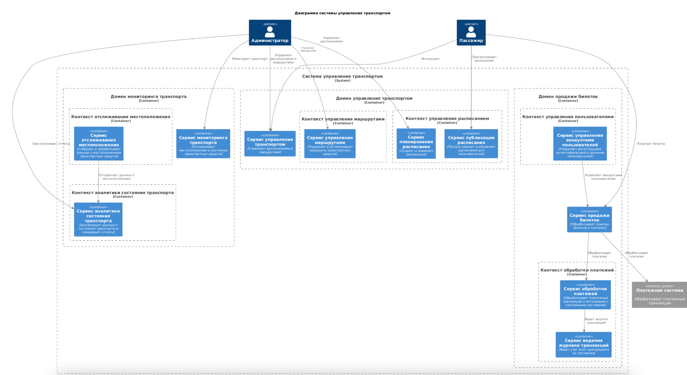 - пример
микросервиса
Микросервис обработки платежей
Определение бизнес-требований:
Обработка платежей за билеты.
Поддержание различных способов оплаты (кредитные карты, электронные кошельки и так далее).
Ведение журнала транзакций для отслеживания состояния платежей.
Проектирование микросервиса:
Контекст обработки транзакций:
API для приёма платёжных данных.
Логика интеграции с платёжными шлюзами.
Обработка статусов платежей (успех, отказ, возврат).
Контекст ведения журнала транзакций:
Хранение информации обо всех транзакциях.
API для получения данных о транзакциях для отчётности и аналитики.
Реализация микросервиса:
Разработка API для обработки транзакций.
Интеграция с платёжными шлюзами.
Реализация ведения журнала транзакций и предоставление данных для других сервисов (например, для микросервиса отчётности).
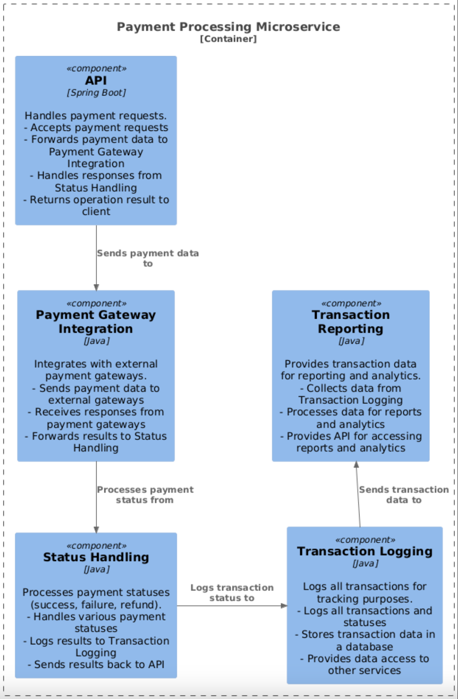 - Подход DDD
подразумевает, что для проектирования микросервисной архитектуры
совместно с бизнес-экспертами определяются области: - домены, которые
представляют собой основную часть работы компании. - поддомены —
выделенные части домена с определённой функцией или конкретной задачей.
- контексты — границы, очерчивающие правила и значения использования
терминов.
Основы контейнеризации
микросервисов
Виртуальные машины (ВМ) — это виртуальные компьютеры, которые
используют ресурсы реального компьютера.
Высокое потребление ресурсов.
Длительное время загрузки.
Трудоёмкое обновление. 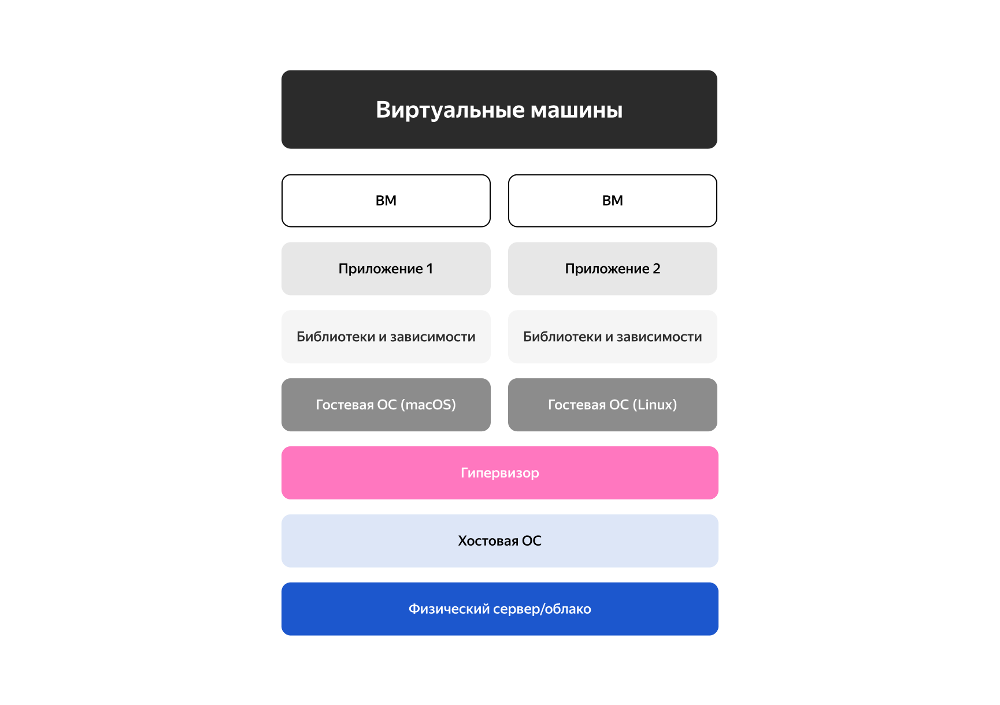
Контейнеризация — это технология, которая позволяет упаковать
приложение и все его зависимости в единый изолированный контейнер.
В отличие от виртуальных машин, контейнеры разделяют ядро
операционной системы и используют общие ресурсы — память и процессорное
время.
Благодаря этому они запускаются быстрее и потребляют меньше
ресурсов, чем виртуальные машины. 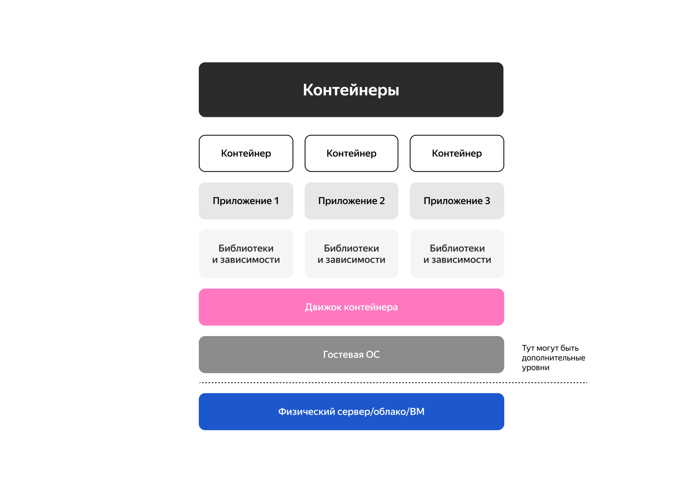
преимущества контейнеров:
Эффективное использование ресурсов.
ВМ ест много ресурсов, потому что содержит полную операционную
систему. Контейнеры гораздо компактнее.
Портативность
можно запускать на любой системе, где установлена контейнерная
платформа — например, Docker.
консистентность. Каждый контейнер включает в себя всё, что нужно для
выполнения приложения:
код приложения, библиотеки и зависимости, системные инструменты,
которые нужны для выполнения задач внутри контейнера.
минусы.
Степень изоляции в контейнерах ниже, чем в виртуальных машинах,
потому что они делят между собой часть ресурсов.
ВМ стоит использовать, если
Вы запускаете корпоративные приложения, у которых высокие
требования к изоляции и безопасности.
Вы разрабатываете и тестируете приложения на разных операционных
системах и в разных конфигурациях.
Контейнеры стоит использовать, если
Вы работаете с микросервисной архитектурой. Контейнеры обеспечат
достаточный уровень изоляции и портативность каждого микросервиса.
Вы строите конвейеры непрерывной интеграции и доставки (CI/CD),
чтобы обеспечить консистентность и высокую скорость развёртывания
приложений.
Вы развёртываете масштабируемые приложения и управляете ими. Если у
вас много микросервисов в продукте, контейнеры позволят легко
масштабировать их, обеспечивая гибкое и эффективное управление
нагрузкой.
Docker
- Dockerfile — это
текстовый файл, который содержит набор инструкций для создания
Docker-образа. - Он определяет, какие базовые образы использовать, какие
установить зависимости и какие файлы скопировать. - А ещё — какие
команды нужно выполнить при запуске контейнера.
Docker Image (образ) — это неизменяемый файл, который содержит
всё,
что нужно для запуска приложения: код, зависимости, библиотеки,
окружение и настройки.
Образ создаётся на основе инструкций из Dockerfile.
Docker Registry (реестр) — это централизованное хранилище
образов.
Сам Docker предоставляет публичный реестр Docker Hub.
Docker Container (контейнер) — это запущенный экземпляр
Docker-образа
Docker Volume (том) — это механизм для хранения данных. Тома
используют,
чтобы хранить данные между перезапусками контейнеров и обеспечить
совместный доступ к данным для нескольких контейнеров.
Docker Network (сеть) — это виртуальная сеть, которая позволяет
контейнерам взаимодействовать друг с другом
Dockerfile
FROM всегда идёт первой в файле, какой образ мы берём за основу.
FROM python:3.8-slim - официальный образ Python
WORKDIR /app - рабочая директория
COPY . /app - копируем файлы
Установите зависимости - RUN pip install –no-cache-dir -r
requirements.txt
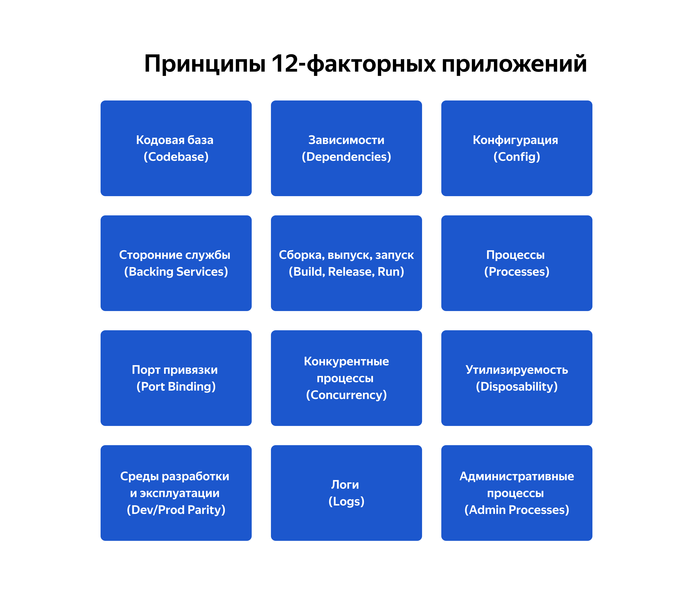 - разница между
платформ-ориентированными, контейнеризацией и оркестрации 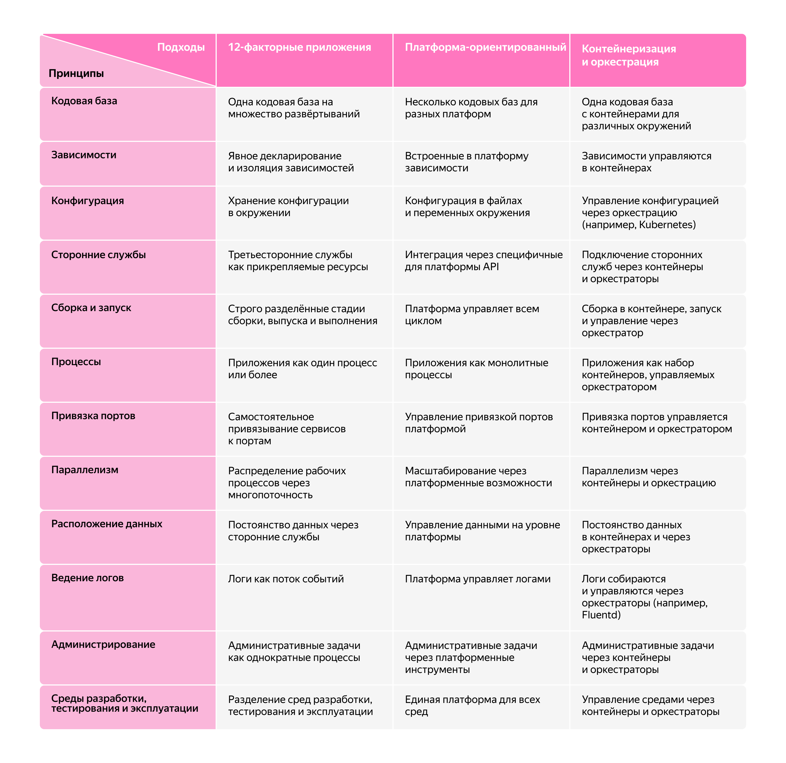 - когда и что применять 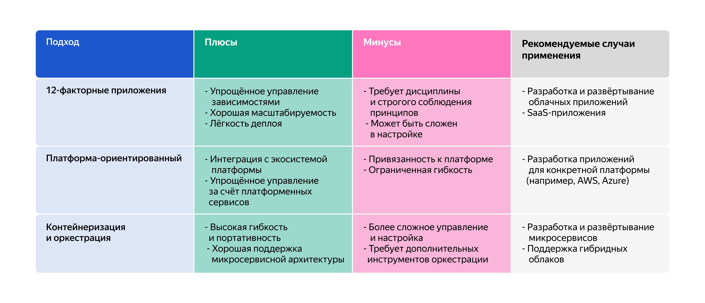
Реализация 12-факторных
приложений
Кодовая база (Codebase)
Проблема:
Кодовая база разбита на несколько репозиториев для различных
компонентов системы,
что усложняет развёртывание и управление версиями.
Решение:
Объединить кодовую базу в едином репозитории и обеспечить
использование одной и той же кодовой базы
для всех окружений (разработка, тестирование, продакшн).
Каждое приложение должно иметь одну кодовую базу, отслеживаемую в
системе контроля версий, и множество развёртываний.
Зависимости (Dependencies)
Проблема:
Зависимости неявно указаны в конфигурационных файлах, что затрудняет
установку и обновление.
Решение:
Явно указать все зависимости в манифестах, таких как
requirements.txt или pom.xml,
и автоматизировать их установку при развёртывании.
Конфигурация (Config)
Проблема:
Конфигурация хранится в коде и требует изменений в коде для
настройки, что усложняет процесс развёртывания.
Решение:
Перенести конфигурационные параметры в переменные окружения, чтобы
настройки можно было изменять без изменения кода.
Конфигурация приложения должна храниться в переменных окружения, а не
в коде.
Сторонние службы (Backing Services)
Проблема:
Приложение жёстко связано с конкретными реализациями бэкенд-сервисов
(например, база данных, кэш), что затрудняет замену или обновление
сервисов.
Решение:
Рассматривать все бэкенд-сервисы как прикреплённые ресурсы, которые
можно легко заменить или обновить без изменения кода приложения.
Все сторонние службы должны рассматриваться как внешние сервисы,
которые могут быть легко заменены.
Все бэкенд-сервисы (базы данных, кэши, очереди сообщений) могут быть
легко заменены.
Приложение не зависит жёстко от конкретных реализаций сервисов
Сборка, выпуск, запуск (Build, Release, Run)
Проблема:
Процессы сборки, выпуска и запуска не разделены, что приводит к
путанице и ошибкам при развёртывании.
Решение:
Ясно разделить процессы сборки, выпуска и запуска, гарантируя, что
каждый выпуск неизменяем и содержит все необходимые зависимости и
конфигурации.
Процессы (Processes)
Проблема:
Процессы состояния приложения сохраняют данные внутри процесса, что
затрудняет масштабирование и перезапуск.
Решение:
Сделать процессы stateless и хранить данные вне процессов в
постоянных хранилищах.
Например:
В QuickDelivery все данные сохраняются в базах данных и других
постоянных хранилищах.
Сами процессы приложения не зависят от локального состояния и могут
быть перезапущены в любое время без потери данных.
Порт привязки (Port Binding)
Проблема:
Приложение требует внешнего веб-сервера для обработки запросов, что
усложняет развёртывание и управление.
Решение:
Экспортировать HTTP-сервис через привязку к порту, чтобы приложение
было самодостаточным.
Приложение должно быть самодостаточным и не зависеть от внешнего
веб-сервера.
Конкурентные процессы (Concurrency)
Проблема:
Приложение не поддерживает масштабирование путём запуска нескольких
процессов или потоков, что ограничивает его производительность.
Решение:
Поддерживать запуск множества процессов или потоков для
масштабирования и эффективного использования ресурсов.
Приложение должно уметь масштабироваться путём запуска множества
процессов или потоков.
Утилизируемость (Disposability)
Проблема:
Процессы не могут быть быстро перезапущены или остановлены, что
затрудняет масштабирование и обновление.
Решение:
Обеспечить возможность быстрого запуска и остановки процессов, а
также лёгкость масштабирования в зависимости от нагрузки.
Процессы должны быть лёгкими для запуска и остановки.
Среды разработки и эксплуатации (Dev/Prod Parity)
Проблема:
Среда разработки существенно отличается от среды эксплуатации, что
приводит к неожиданным проблемам при развёртывании.
Решение:
Сделать среду разработки максимально приближенной к среде
эксплуатации, используя одинаковые инструменты и процессы.
Среда разработки должна максимально приближаться к среде
эксплуатации.
Логи (Logs)
Проблема:
Логи приложения хранятся в файлах, что затрудняет их сбор и
анализ.
Решение:
Писать логи в стандартный вывод (stdout) и использовать инструменты
для их сбора и анализа.
Приложение должно писать свои логи в stdout.
Административные процессы (Admin Processes)
Проблема:
Административные задачи выполняются вручную и не являются
одноразовыми процессами.
Решение:
Выполнять административные задачи как одноразовые процессы,
запускаемые в той же среде, что и основное приложение.
Например:
Миграции баз данных и другие административные задачи в QuickDelivery
запускаются как одноразовые процессы в той же среде, что и основное
приложение.
Это обеспечивает консистентность и упрощает управление
системой.
Документирование
решений с помощью диаграмм C4
нотации и подходы 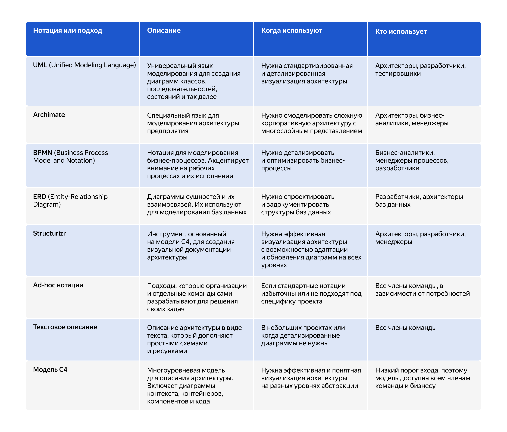
Модель C4
4 уровня абстракции
контекст, контейнер, компонент, код
не всегда нужно использовать эту модель
можно только часть 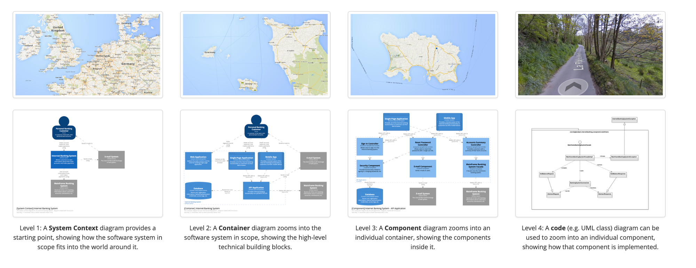
Context diagrams —
диаграммы контекста
как система выглядит целиком
Диаграмма предоставляет общий обзор системы и её границ.
показывает систему в окружении, выделяя основные внешние системы и
пользователей, которые взаимодействуют с ней.
применяют
бизнес-аналитики
проект-менеджеры
архитекторы 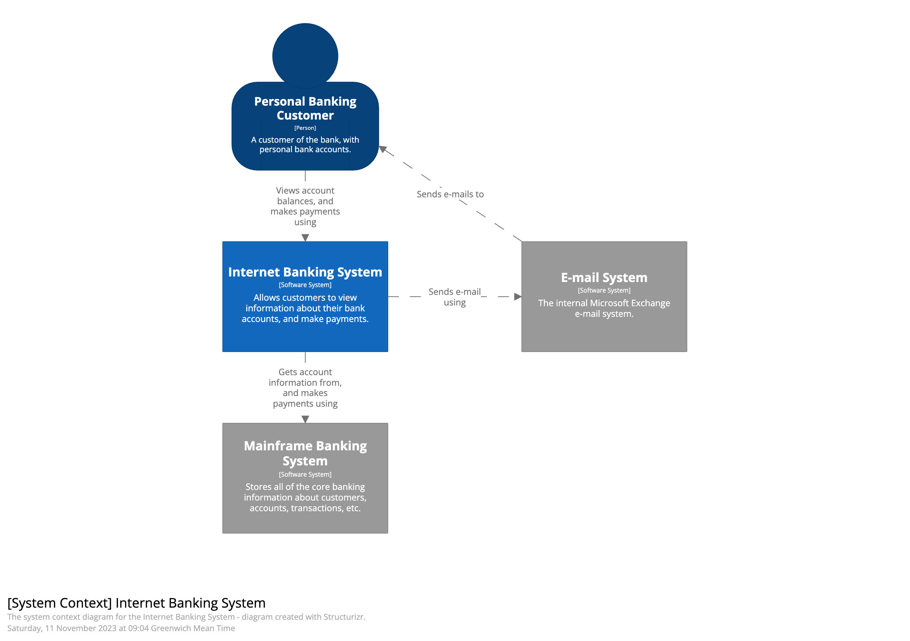
диаграмма контекста
Диаграмма контейнеров
— Container diagram
Так в C4 называют приложения и хранилища данных.
Диаграммы контейнеров показывают высокоуровневые технические
строительные блоки и взаимодействия между ними 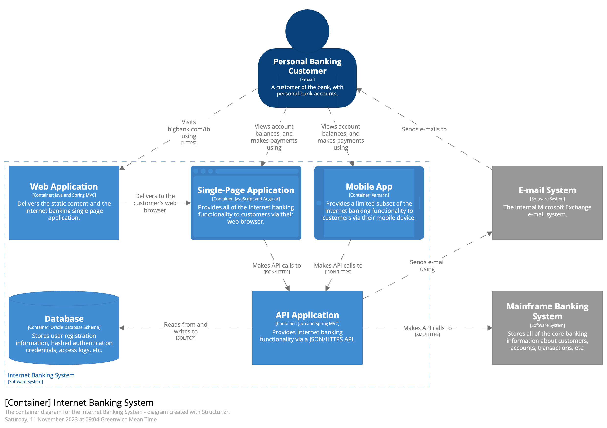
применяют
разработчики
devops
архитекторы
диаграмма контейнера 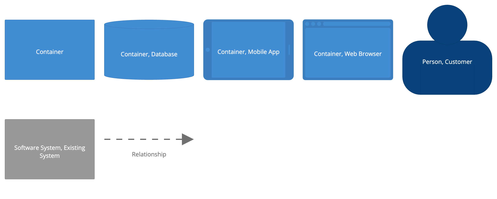
Диаграмма компонентов
— Component diagram
уровень отдельного контейнера и показывают компоненты внутри него.
как эти компоненты взаимодействуют друг с другом.
применяют
разработчики
тестировщики
архитекторы 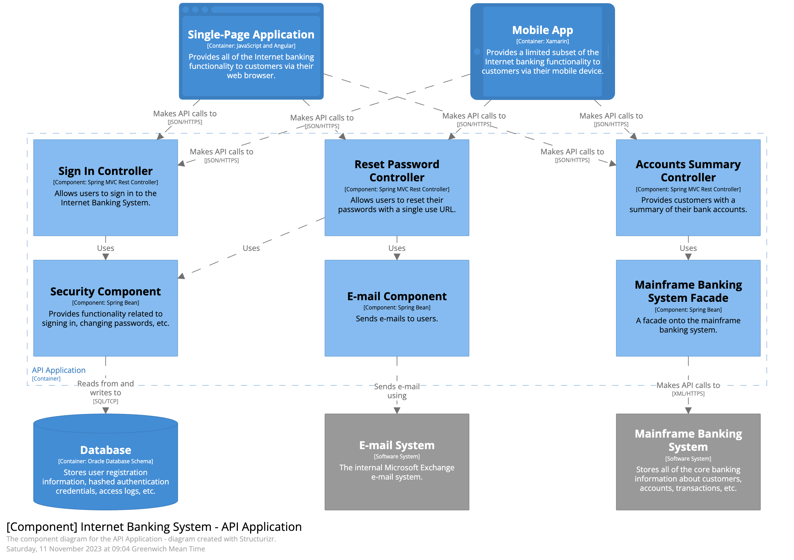
легенда диаграммы контейнера 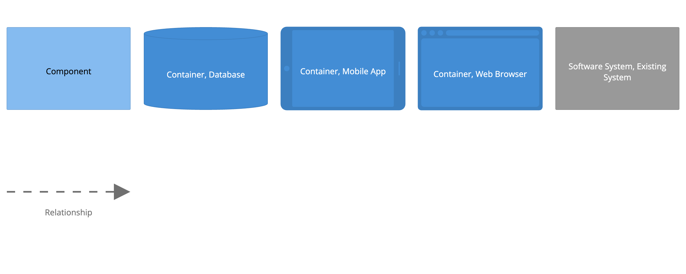
Диаграмма кода —
Code/classes diagram
как реализован отдельный компонент.
отображает структуру кода в рамках одного из компонентов
применяют
разработчики
тестировщики
архитекторы 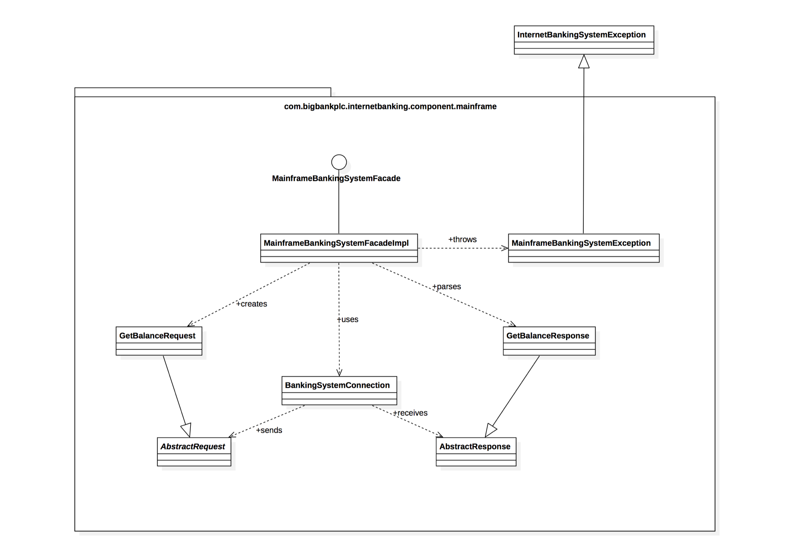
Диаграммы
последовательностей — Dynamic diagrams
дополнительная
у меня так используется
показывает взаимодействие объектов в определённом временном порядке,
акцентируя внимание на порядке сообщений между объектами.
применяют - архитекторам НЕ НУЖНО
разработчики
тестировщики
Бизнес-аналитики 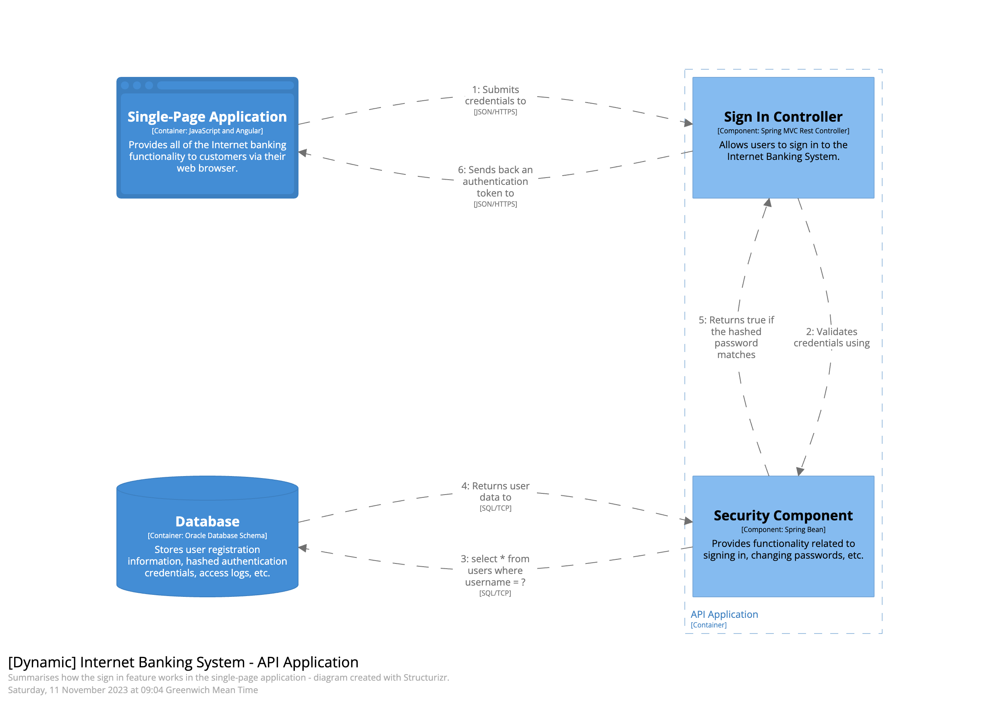
легенда диаграммы последоватльеностей 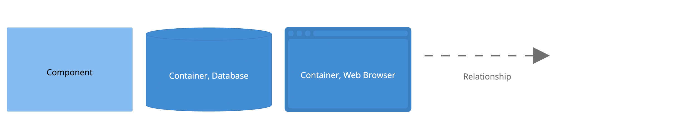
Диаграммы
развёртывания — Deployment diagrams
физическое размещение программных артефактов на узлах развёртывания.
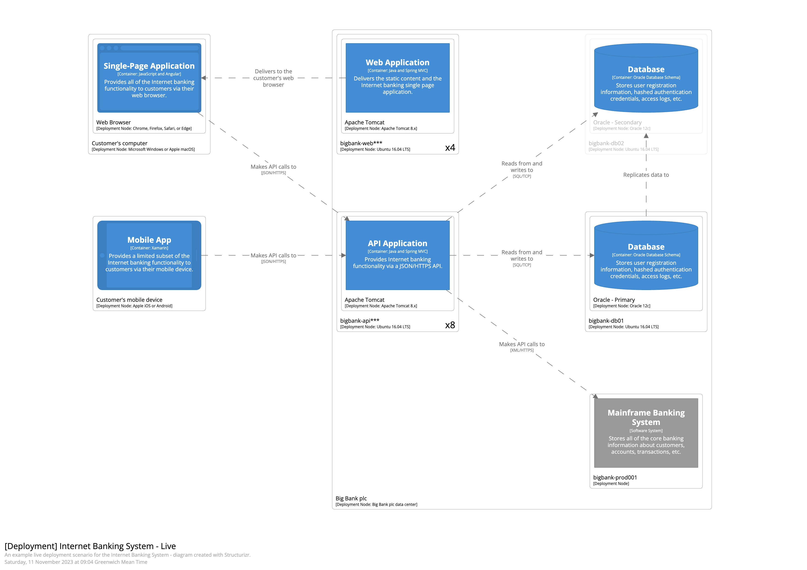
применяют - архитекторам НЕ НУЖНО
архитекторы
devops
Системные администраторы
Как создавать диаграммы C4
Диаграммы C4 создают в пять шагов 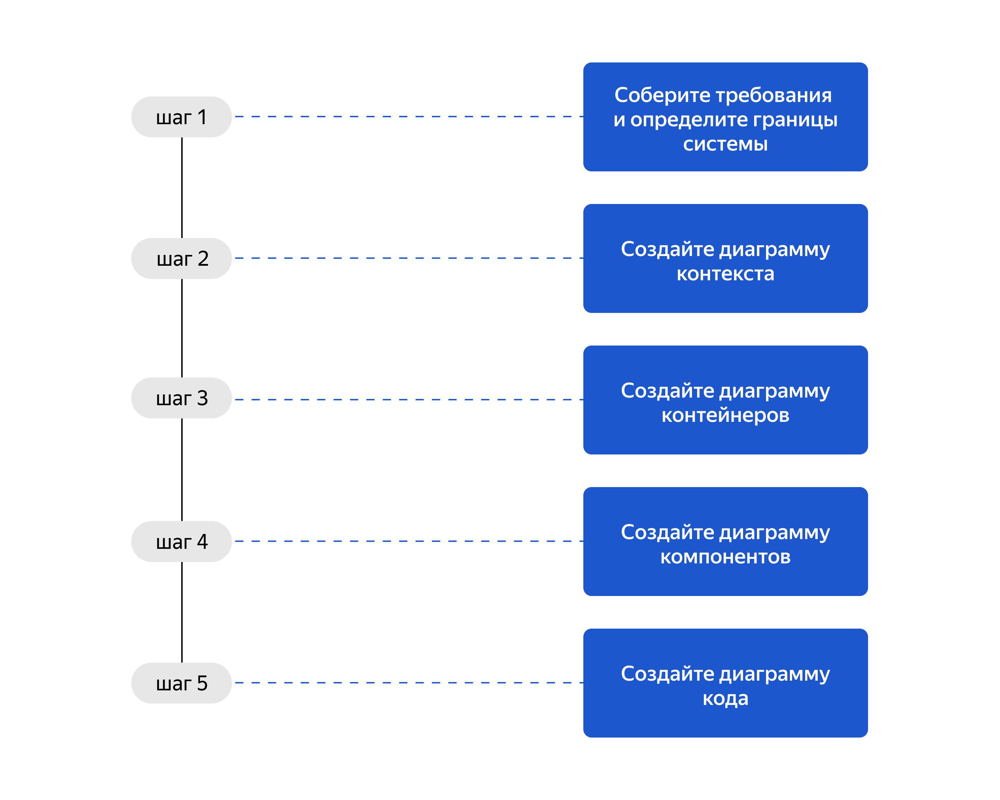
Соберите требования и определите границы системы
Определите основные функции и компоненты системы.
Определите внешние системы и пользователей, которые будут
взаимодействовать с вашей системой.
Например, FitLife — это система управления фитнес-клубом.
Она автоматизирует процессы управления членством, расписанием занятий, обработки платежей и интеграции с внешними системами.
Система включает в себя веб-приложение и мобильное приложение для пользователей,
административный интерфейс для управления, а также разные службы для обработки данных и взаимодействия с внешними API и банковскими системами.
Создайте диаграмму контекста
Опишите вашу систему и её окружение.
Укажите внешние системы и пользователей, которые взаимодействуют с
вашей системой.
На диаграмме контекста нужно показать такие элементы:
User — пользователь системы фитнес-клуба, который управляет своим членством и расписанием занятий с помощью функционала системы.
Administrator — администратор, управляющий системой и осуществляющий поддержку пользователей.
FitLife System — основная система, которая управляет членством, расписанием занятий и обработкой платежей.
Third-Party API — внешний API для интеграции данных о фитнесе.
Bank System — внешняя банковская система для обработки платежей.
Все диаграммы сделаны с помощью PlantUML.
Вы создаёте текстовое описание системы, а инструмент отрисовывает по
нему диаграмму. 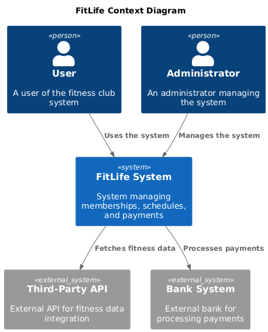
Создайте диаграмму контейнеров
Определите основные контейнеры внутри вашей системы. В C4 контейнеры
— это приложения и хранилища данных.
Покажите взаимодействие между контейнерами и внешними
системами.
На диаграмме контейнера нужно показать:
Web Application — веб-приложение, реализованное на Java с использованием Spring. Оно обрабатывает взаимодействие с пользователем.
Mobile Application — мобильное приложение, реализованное на Kotlin и Swift. Оно позволяет пользователям управлять своим членством.
Payment Service — сервис для обработки платежей, реализованный на Node.js.
Database — база данных на PostgreSQL, хранящая информацию о пользователях и расписании занятий.
Third-Party API — внешний API для интеграции данных о фитнесе.
Bank System — внешняя банковская система для обработки платежей.
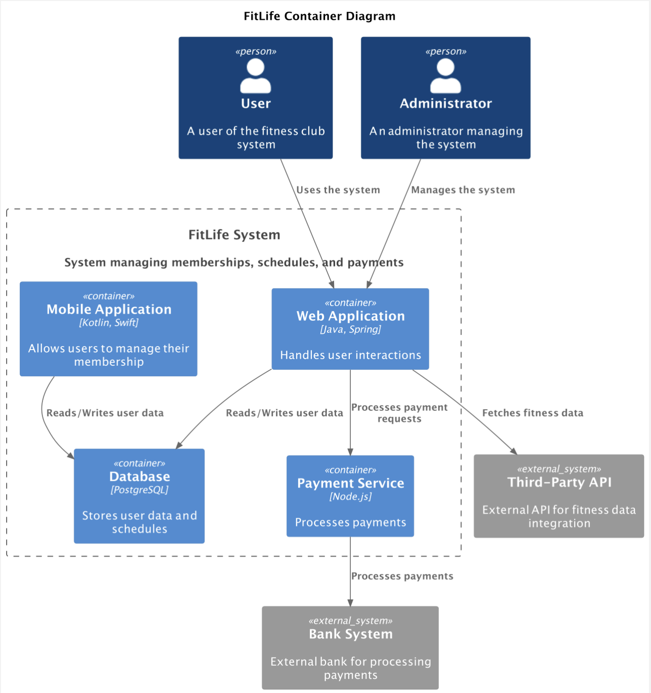 - Создайте диаграмму
компонентов - Выберите один из контейнеров и детализируйте его
внутреннюю структуру. - Определите основные компоненты внутри контейнера
и их взаимодействие.
На диаграмме компонентов нужно показать:
AuthController — компонент, который обрабатывает аутентификацию и авторизацию пользователей.
UserController — компонент, который управляет профилями пользователей.
ScheduleController — компонент, который управляет расписаниями занятий.
PaymentController — компонент, который обрабатывает платежи.
Service Layer — слой бизнес-логики.
Repository Layer — слой доступа к данным.
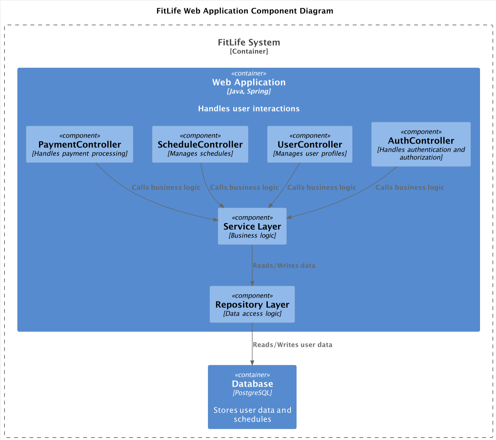 - Создайте диаграмму
кода - Детализируйте код одного из компонентов. - Покажите основные
классы или файлы и их взаимодействие.
На диаграмме нужно показать:
User — класс, который представляет пользователя системы. У него есть атрибуты name и email. А ещё методы — register() и login().
Membership — класс, который представляет членство пользователя. Его атрибуты — type, startDate и endDate. Его методы — activate() и cancel().
Schedule — класс, который представляет расписание занятий. Его атрибуты — date и activity. Его методы — addActivity() и removeActivity().
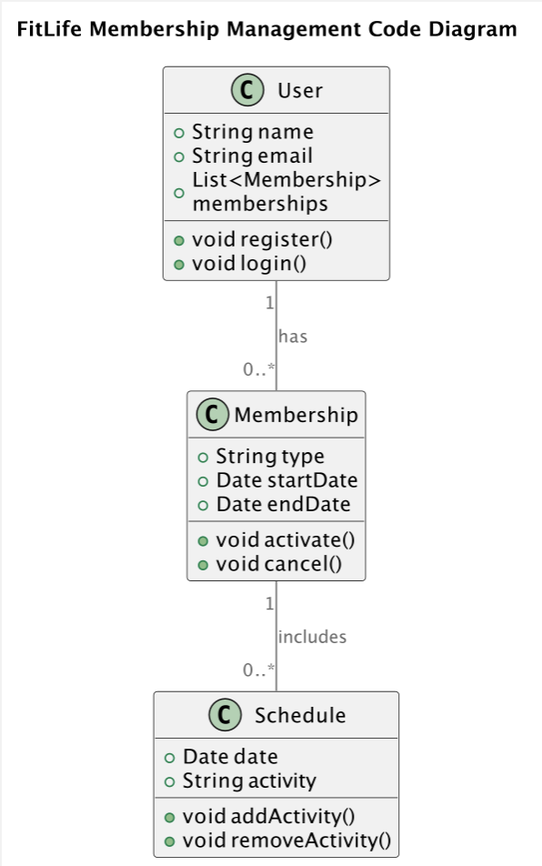
img_32.png
Анализ и интерпретация
диаграмм C4
Метод 1. Проверьте полноту и ясность
Убедитесь, что все основные элементы системы и их взаимодействия
отражены на диаграммах.
Проверьте, что диаграммы понятны всем стейкхолдерам, включая тех,
кто не имеет технического образования.
Нужно убедиться, что все основные контейнеры (WebApp, MobileApp,
PaymentService и Database) отображены на диаграмме и что взаимодействия
между ними тоже показаны.
Метод 2. Выявите узкие места и потенциальные проблемы
Определите компоненты, которые могут стать узкими местами. Например,
контейнеры с высокой нагрузкой.
Оцените взаимодействия между компонентами на предмет потенциальных
проблем — например, задержек или сбоев в коммуникации.
Диаграмма контекста FitLife.
Нужно понять, насколько система зависит от внешних API и банковских сервисов могут ли сбои в API или банковской системе негативно повлиять на работу всей системы.
Диаграмма контейнеров FitLife.
Нужно оценить нагрузку на PaymentService и Database.
Высокая частота запросов к базе данных или к сервису обработки платежей может создать узкое место.
Диаграмма компонентов FitLife.
Нужно проверить, что компоненты AuthController и PaymentController содержат необходимые меры безопасности для защиты данных пользователей и обработки платежей.
Диаграмма кода FitLife.
Нужно оценить, насколько сложное взаимодействие между классами,
- и определить методы, которые могут стать узкими местами при высоких нагрузках.
Метод 3. Проанализируйте безопасность
Проверьте диаграммы на предмет потенциальных уязвимостей, связанных
с доступом к данным и авторизацией пользователей.
Убедитесь, что критически важные компоненты защищены
соответствующими механизмами безопасности.
Диаграмма контекста FitLife.
Нужно проверить, что взаимодействие с банковской системой и API защищено и данные передаются по защищённым каналам.
Диаграмма контейнеров FitLife.
Нужно проверить, что взаимодействия между WebApp, MobileApp и PaymentService защищены.
Убедитесь, что данные пользователей в базе данных шифруются.
Диаграмма компонентов FitLife.
Нужно убедиться, что компоненты AuthController и PaymentController содержат необходимые меры безопасности для защиты данных пользователей и обработки платежей.
Диаграмма кода FitLife.
Нужно проверить, что классы, связанные с обработкой данных пользователей и платежей, содержат необходимые меры безопасности.
Метод 4. Оцените масштабируемость
Определите, какие компоненты системы могут требовать масштабирования
при увеличении нагрузки.
Оцените возможности горизонтального и вертикального масштабирования
компонентов.
Как
улучшать диаграммы C4 на основе обратной связи
Метод 1. Ревью команды
Метод 2. Вовлекайте стейкхолдеров
Проводите презентации диаграмм для бизнес-экспертов и
стейкхолдеров.
Собирайте их мнения о том, насколько диаграммы понятны и какие
аспекты можно улучшить.
Метод 3. Используйте инструменты для комментариев
Поощряйте команду оставлять свои замечания и предложения прямо на
диаграммах
Метод 4. Анализируйте инциденты и проблемы
Обновляйте диаграммы, чтобы учитывать полученные уроки и
улучшения.
Нужно анализировать возникшие инциденты и проблемы в системе для
выявления недостатков в архитектуре
Подход
documentation as code с помощью PlantUML и MKDocs
инструменты PlantUML и MkDocs для создания и поддержания
документации,
которая всегда будет актуальной и синхронизированной с вашим
проектом
хранить и поддерживать документацию в тех же системах контроля
версий, что и исходный код
Документация как код (Documentation as Code) — это подход, при
котором документация создаётся, обновляется и управляется так же, как и
исходный код
Работа с PlantUML
позволяет создавать с помощью простого текстового формата различные
диаграммы
для документирования архитектуры и дизайна программного
обеспечения.
можно автоматизировать создание диаграмм, интегрируя его в процесс
сборки и развёртывания.
Это позволяет поддерживать документацию в актуальном состоянии
поддерживает создание различных типов диаграмм, включая диаграммы
классов, последовательностей, состояний, развёртывания
и, конечно же, C4-модель
C4-модель и PlantUML
это два различных подхода к визуализации архитектуры программного
обеспечения,
которые могут быть использованы вместе или независимо друг от
друга
C4-модель
Это подход к описанию архитектуры системы, которая включает четыре
уровня абстракции: диаграммы контекста, контейнера, компонента и
кода.
C4-модель определяет, что должно быть отображено на каждом уровне
диаграммы и как эти уровни взаимодействуют между собой.
Чёткая и понятная структура для различных уровней абстракции,
построенная по C4-модели, помогает эффективно общаться как с
техническими специалистами, так и с бизнес-экспертами.
PlantUML
Это инструмент для создания диаграмм на основе текстового
описания.
Он поддерживает множество типов диаграмм, включая те, которые
используются в C4-модели.
PlantUML позволяет автоматически генерировать диаграммы, что
упрощает их создание и обновление.
PlantUML можно использовать для реализации диаграмм C4, импортируя
соответствующие шаблоны.
процесс установки и настройки PlantUML в среде разработки JetBrains
IDE
Инструкция по установке и настройке PlantUML в JetBrains IDE
Откройте вашу JetBrains IDE. Запустите IntelliJ IDEA, PyCharm, WebStorm или любую другую IDE от JetBrains.
Откройте настройки IDE. Перейдите в меню File и выберите Settings (или используйте сочетание клавиш Ctrl+Alt+S).
Установите плагин PlantUML.
В настройках перейдите в раздел Plugins. В строке поиска введите «PlantUML» и найдите соответствующий плагин.
Нажмите Install для установки плагина. После установки плагина перезапустите IDE, чтобы изменения вступили в силу.
PlantUML требует установки Java для работы.
Убедитесь, что у вас установлена последняя версия JDK (Java Development Kit).
PlantUML использует Graphviz для генерации диаграмм.
Убедитесь, что Graphviz установлен на вашем компьютере.
Скачайте Graphviz с официального сайта и установите его, следуя
инструкциям.
Создайте новый файл для PlantUML. В вашей IDE создайте новый файл с
расширением .puml или .plantuml.
@startuml
Alice -> Bob: Hello
@enduml
Создание диаграмм в
PlantUML
Диаграммы классов используются для отображения структуры классов в
системе, их атрибутов, методов и взаимосвязей
Пример набора классов:
User — класс, представляющий пользователя, с атрибутами name, email и списком членств.
Membership — класс, представляющий членство, с атрибутами type, startDate, endDate и методами activate(), cancel().
Schedule — класс, представляющий расписание, с атрибутами date, activity и методами addActivity(), removeActivity().
Payment — класс, представляющий платежи, с атрибутами double amount, date и методом processPayment().
пример проекта
FitLife/
├── .gitignore
├── README.md
├── diagrams/
│ ├── context/
│ │ └── FitLife_Context.puml
│ ├── container/
│ │ └── FitLife_Container.puml
│ ├── component/
│ │ └── FitLife_Component_WebApp.puml
│ └── code/
│ └── FitLife_Code_Membership.puml
└── src/
├── main/
│ └── ...
└── test/
└── ...
.gitignore: файл для указания файлов и директорий, которые должны быть проигнорированы Git.
README.md: файл с описанием проекта, содержащий основную информацию и инструкции.
diagrams/: директория для хранения всех диаграмм C4.
context/: поддиректория для диаграмм контекста.
FitLife_Context.puml: диаграмма контекста для системы FitLife.
container/: поддиректория для диаграмм контейнеров.
FitLife_Container.puml: диаграмма контейнера для системы FitLife.
component/: поддиректория для диаграмм компонентов.
FitLife_Component_WebApp.puml: диаграмма компонентов для веб-приложения FitLife.
code/: поддиректория для диаграмм кода.
FitLife_Code_Membership.puml: диаграмма кода для компонента управления членством FitLife.
src/: директория для хранения исходного кода проекта.
main/: поддиректория для основного кода приложения.
test/: поддиректория для тестов.
Автоматизация создания диаграмм с помощью PlantUML
Пример файла workflow для GitHub Actions
.github/workflows/plantuml.yml
Этот файл настроит GitHub Actions для автоматической генерации
диаграмм PlantUML
и коммита их обратно в репозиторий при каждом изменении в ветке
main
Создайте диаграмму PlantUML в Markdown. Для этого вставьте код
PlantUML в файлы Markdown с использованием блока кода plantuml:
здесь три ковычки верхние puml
@startuml
title FitLife Context Diagram
top to bottom direction
!includeurl https://raw.githubusercontent.com/RicardoNiepel/C4-PlantUML/master/C4_Component.puml
Person(user, "User", "A user of the fitness club system")
Person(admin, "Administrator", "An administrator managing the system")
System(FitLifeSystem, "FitLife System", "System managing memberships, schedules, and payments")
System_Ext(api, "Third-Party API", "External API for fitness data integration", "Uses REST API, JSON data format")
System_Ext(bank, "Bank System", "External bank for processing payments", "Uses SOAP, XML data format")
Rel(user, FitLifeSystem, "Uses the system")
Rel(admin,FitLifeSystem,"Manages the system")
Rel(FitLifeSystem,api,"Fetches fitness data")
Rel(FitLifeSystem,bank,"Processes payments")
@enduml
здесь три ковычки верхние
Для предварительного просмотра документации запустите локальный
сервер MkDocs:
mkdocs serve
Откройте браузер и перейдите по адресу http://127.0.0.1:8000
Для генерации статического сайта выполните команду:
mkdocs build
As-Is и To-be
As is («Как есть») и To be («Как должно быть»)
это модели для описания бизнес-процессов, которые помогают понять
текущие процессы и определить, как их улучшить.
Сравнение моделей As is и To be позволяет выявить разницу между
текущим и будущим состоянием компании.
Это помогает определить, какие изменения необходимо провести, чтобы
достичь желаемого результата.
As-Is
As is представляет собой текущее состояние процессов.
Главная задача анализа этой модели — выявить все существующие
операции, их последовательности, участников и результаты.
Некоторые компоненты модели As is:
Процесс
порядок действий, которые выполняются для достижения определённой
цели или результата.
Ресурсы
материальные и нематериальные активы, которые включены в процесс,
технологии и оборудование, а также труд людей, связанных с этой
моделью.
Участники
это все лица и группы, вовлечённые в выполнение процессов (например,
сотрудники, менеджеры, поставщики).
Документация
все существующие документы и записи, связанные с процессом, включая
инструкции, отчёты и регламенты.
To be
описывает целевое состояние процессов после их оптимизации.
Эта модель показывает, как процессы должны выглядеть и работать с
учётом всех улучшений.
Основная задача создания модели To be
определить, какие изменения нужно внести, чтобы повысить
эффективность.
Оптимизированные процессы
эффективные и продуктивные последовательности действий, направленные
на достижение желаемого результата.
Новые ресурсы
могут включать в себя дополнительные или более современные
технологии, обучение персонала и переосмысление ролей.
Изменения в работе участников
возможно, потребуется перераспределение обязанностей или изменение
состава команды.
Новая документация
создание новых регламентов, инструкций и процессов, которые
поддерживают новую модель.
Спринт 2
Паттерн Strangler Fig
Фикус-душитель - деревья фикусы, которые опуская корни к земле,
постепенно “душат” дерево-хозяина
паттерны - подходы, которые помогают снизить риски.
антипаттерны - те, что риски увеличивают
Антипаттерн “Большой взрыв”
Миграцию монолита на микросервисы можно провести за один раз.
Такой подход называют «Большим взрывом»
После перехода можно обнаружить такие проблемы:
ошибки в новой архитектуре привели к длительному простою после
релиза,
новые системы не всегда работают корректно,
часть информации из монолитной базы данных утеряна,
микросервисы писали в спешке, поэтому технический долг вырос.
Паттерн Strangler Fig
Монолитный бэкенд онлайн-магазина — это дерево-хозяин, а
микросервисы — фикус-душитель.
Новую систему постепенно создают по краям старой: компоненты по
очереди извлекают из монолита и заменяют на микросервисы.
Новую архитектуру развивают в течение нескольких лет, пока она не
«задушит» монолит.
Последовательность разработки микросервисов зависит от
потребностей бизнеса.
можно начать миграцию с написания сервиса, которого в приложении ещё
не было.
Или выбрать ту часть приложения, где больше всего legacy-кода. 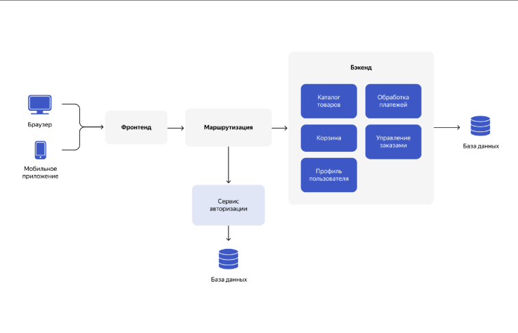
Преимущества паттерна Strangler Fig
Постепенная замена монолита.
Уменьшить количество сбоев
Повысить адаптивность новой системы.
Обучить и адаптировать команду.
Снижение рисков и управление ими.
Инкрементные изменения. Небольшие изменения легче тестировать,
отслеживать и откатывать
параллельные операции. Микросервисы запускают параллельно с
существующими монолитными компонентами.
Если появятся проблемы, их можно будет устранить, не затрагивая всю
систему.
Контролируемое развёртывание. Новые функции внедряют только после
тщательного тестирования и проверок на каждом этапе
Инкрементная доставка новых функций в процессе миграции.
Приложение продолжает развиваться. Новые функции и улучшения можно
релизить по готовности.
Для этого не нужно ждать окончания миграции
Пользовательский опыт улучшается.
По мере модернизации и оптимизации компонентов пользователи увидят,
что приложение работает лучше: повышается производительность и
надёжность знакомых функций.
Система адаптируется к ожиданиям пользователей.
Эффективное решение проблемы технического долга.
помогает управлять техническим долгом
Систематический рефакторинг. Постепенная миграция — это фактически
последовательный и глубокий рефакторинг
Замена устаревших компонентов в первую очередь.
Разработка документации и поддержание стандартов
Новую систему постепенно создают по краям старой: компоненты по
очереди извлекают из монолита и заменяют на микросервисы.
Как реализовать Strangler
Fig
в общих чертах паттерн выглядит так 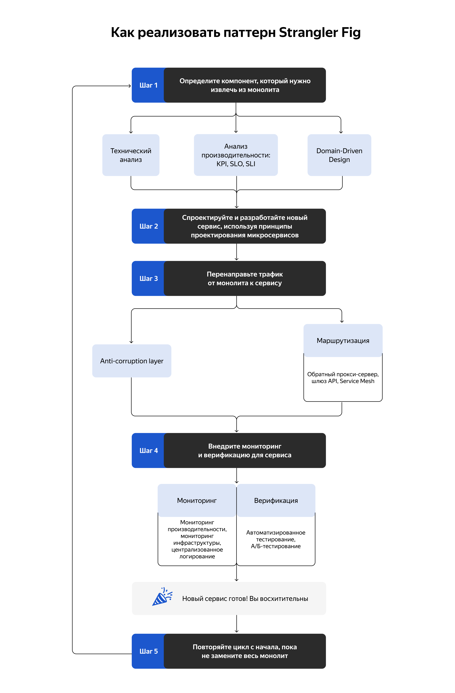
Шаг 1. Определение
доменной области
сначала нужно определить и приоритизировать компоненты монолитного
приложения, которые должны быть извлечены
технический анализ
анализ производительности KPI, SLO, SLI
DDD
Шаг 2.
Проектирование и разработка новых микросервисов
после определения компонентов, необходимо спроектировать и
разработать новые микросервисы
применяем лучшие современные практики
Принципы проектирования сервисов
у каждого микросервиса есть единственная, чётко определённая зона
ответственности.
микросервисы с минимальной зависимостью от других сервисов.
Группируйте связанную функциональность в рамках одного сервиса
(согласованность)
Технологический стек
Определяйте чёткие контракты API для каждого микросервиса
Практики разработки
Используйте технику TDD, чтобы обеспечить тщательное тестирование
каждого микросервиса
разработка через тестирование
Внедряйте конвейеры CI/CD для автоматизации процессов тестирования и
развёртывания.
Шаг 3. Перенаправление
трафика
Маршрутизация на основе прокси
Обратный прокси-сервер можно использовать для маршрутизации запросов
либо к монолиту,
либо к новым микросервисам на основе определённых правил.
API-шлюз реализуется для управления и маршрутизации трафика,
обеспечивая единую точку входа для всех клиентских запросов.
Фича-тоглы
Канареечные релизы, или инкрементальное смещение трафика
Фича-тоглы
Переключатели функций нужны для управления развёртыванием новых
функций, чтобы постепенно перенаправлять трафик на новые сервисы.
Фича-тоглы — это механизм включения/выключения функциональности без
изменения кода и без нового релиза.
if (featureFlags.newPaymentsFlow) {
enableNewPayments();
} else {
enableOldPayments();
}
Постепенное развёртывание (progressive delivery)
Новую функцию можно включать только для небольшой группы
пользователей (например, 1% трафика).
Если всё работает нормально — постепенно увеличивать процент.
Если что-то сломалось — быстро откатить без деплоя.
A/B-тесты
Можно показывать разные версии интерфейса разным пользователям и
сравнивать конверсии.
Канареечные релизы
Сначала получают доступ сотрудники или тестовые аккаунты.
Потом часть клиентов.
Потом весь рынок.
Гибкость в бизнесе
Включение/выключение функционала по времени (например, “чёрная
пятница”).
Разделение фич по регионам, клиентам или тарифам.
Упрощение DevOps
Можно доставлять код заранее, а активировать в нужный момент.
Нет необходимости ждать деплой-окна
Шаг 4.
Мониторинг и верификация микросервисов
устанавливаются метрики производительности и настраивается
мониторинг и верификация микросервисов.
используются количественные показатели — метрики производительности
Ключевые показатели эффективности (Key Performance Indicators, или
KPI).
время отклика, частота ошибок, пропускная способность, количество
запросов в секунду
KPI определяют для каждого микросервиса и устанавливают пороговое
значение уровня производительности
Цели уровня сервиса (Service-Level Objectives, или SLO)
SLO ставятся на основе бизнес-требований, таких, как время
безотказной работы или время отклика.
Индикаторы уровня обслуживания (Service Level Indicator, или SLI)
количественная оценка работы сервиса, которая показывает,
выполняются ли SLO.
латентность — время, необходимое для обработки запроса, доступность
— доля времени, в течение которого сервис работает, и частота
ошибок.
Средства мониторинга
В идеале нужно пройти через все шаги
Мониторинг производительности приложений (Application Performance
Monitoring, или APM).
производительность приложений и отдельных микросервисов в режиме
реального времени и предоставляют информацию
о времени отклика, количестве ошибок и взаимодействии с
пользователями.
New Relic, Datadog, Dynatrace.
Централизованное логирование
ELK Stack (Elasticsearch, Logstash, Kibana), Splunk и Fluentd.
Мониторинг инфраструктуры
следят за состоянием и производительностью базовой инфраструктуры,
такой как серверы, контейнеры и сетевые компоненты
Prometheus, Grafana, Nagios
пример использования
В «Шайбе» на этапе развёртывания мониторинга поступили так.
Команда Алекса внедрила Datadog для мониторинга производительности новых микросервисов, отслеживая время отклика, количество ошибок и взаимодействие с пользователями.
Затем она настроила все микросервисы на отправку логов в ELK Stack, что позволило эффективно агрегировать и анализировать логи.
И третье — Prometheus и Grafana использовались для мониторинга состояния базовой инфраструктуры и обеспечения оптимальной работы серверов и контейнеров, поддерживающих микросервисы.
Методы верификации
Методы верификации включают в себя процессы и инструменты, которые
обеспечивают правильное
функционирование новых микросервисов в соответствии с ожидаемыми
стандартами производительности и надёжности
проверяет функциональность, производительность и интеграцию
микросервисов на их соответствие заданным критериям
настраиваются конвейеры CI/CD для запуска автоматизированных тестов
при каждом коммите кода в системе контроля версий
А/B-тестирование
сравнивать производительность и влияние на пользователей двух версий
сайта,
приложения или сервиса, чтобы определить, какая из них работает
лучше.
То есть часть трафика направляют на новую версию сервиса, а
остальную часть — на старую.
Затем анализируют показатели производительности
Jenkins для автоматизации тестирования
Шаг 5. Настройка
итерационного процесса
подразумевает итерационное возвращение к первому пункту и реализацию
цикла до тех пор, пока весь монолит не будет заменён.
состоит из процессов
инкрементальное извлечение компонента из монолита
постепенного улучшения системы
координации усилий различных команд.
Инкрементальное извлечение предполагает разбиение монолитного
приложения на более мелкие,
управляемые компоненты и постепенную замену их микросервисами.
Извлекайте по одному компоненту за раз
Непрерывное улучшение направлено на регулярное усовершенствование
новых микросервисов и всей системы в целом
на основе данных о производительности, отзывов пользователей и
меняющихся потребностей бизнеса
инструменты APM для постоянного мониторинга
Собирайте и анализируйте обратную связь от пользователей,
Проводите рефакторинг и оптимизацию микросервисов по мере
необходимости на основе данных о производительности
Координация работы команды важна для управления всеми сложностями
итерационного процесса миграции
Обеспечьте кросс-функциональное взаимодействие между командами
разработки, эксплуатации и бизнеса для согласования целей и
прогресса
Проводите регулярные встречи
Ведите документацию на протяжении всего процесса для обеспечения
последовательности и обмена знаниями
подводные камни
реализации Strangler Fig
Недостаточное планирование
проблема
слишком поспешная реализация миграции без чёткого плана
решение
разработать подробный план миграции с описанием каждого этапа,
определить ключевые компоненты для извлечения
поставить четкие сроки
Отсутствие поддержки заинтересованных сторон
проблема
сопротивление заинтересованных сторон из-за отсутствия понимания или
предполагаемых рисков.
решение все заинтересованные стороны должны чётко представлять
преимущества модели фикус-душитель
Недостаточный мониторинг и тестирование
проблема
неспособность адекватно контролировать новые сервисы
решение
с самого начала организовать надёжный мониторинг и автоматическое
тестирование и настроить механизмы оповещения для раннего выявления
проблем.
Игнорирование зависимостей
проблема
игнорирование взаимозависимостей между компонентами приводит к
сбоям
решение
провести тщательный анализ зависимостей внутри монолитного
приложения
Неполная документация
вести полную и актуальную документацию на протяжении всего процесса
миграции
документировать дизайн, API и рабочие процедуры каждого
микросервиса.
Игнорирование проблем управления данными
обмен ими между монолитом и микросервисами, приводит к
несогласованности и проблемам целостности данных.
Реализация паттерна Strangler
Fig
1. Определение доменной области — того компонента, который необходимо извлечь из монолита.
2. Разработка микросервисов.
3. Настройка маршрутизации и извлечение старого функционала с помощью прокси, переключателей функций или канареечных релизов.
4. Мониторинг и верификация новых микросервисов — для надёжной работы микросервисов и своевременного реагирования используют инструменты APM, централизованное логирование и настраивают тестирование.
5. Итерационное повторение процесса — необходимый шаг миграции монолитной структуры до момента полного замещения её микросервисами.
Определение доменной
области
Команда сначала определяет список потенциальных функций продукта, а
затем приоритет и возможность их извлечения.
Определение списка
функций продукта
Техника 1. Анализ домена бизнеса, Domain-Driven Design
разделение приложения на домены, которые представляют собой
ограниченный контекст бизнес-проблем и целей.
ограниченный контекст — бизнес-домен — может рассматриваться для
выделения в качестве независимого микросервиса
Техника 2. Технический анализ
этот подход «смотрит» внутрь приложения.
оценивается монолитная кодовая база на предмет тесно связанных
компонентов, зависимостей и взаимодействия модулей
Лучше всего этот подход использовать в унаследованных системах, где
кодовая база сложна и плохо документирована.
Технический анализ помогает выявить скрытые зависимости и
взаимодействия, которые не видны только при бизнес-анализе.
Техника 3. Анализ производительности
здесь важно сосредоточиться на компонентах, вызывающих проблемы с
производительностью или требующих больших ресурсов.
выявить компоненты, которые требуют оптимизации и модернизации в
первую очередь
применяется прежде всего в приложениях, которым необходимо
эффективное масштабирование.
где какую использовать
анализ бизнес-домена - Если согласование переноса с бизнес-целями и
максимизация непосредственной ценности для бизнеса имеют решающее
значение
технический анализ - Для унаследованных систем с большим техническим
долгом и сложной, запутанной кодовой базой
показатели производительности - основные проблемы связаны с
масштабируемостью и производительностью и они влияют на пользовательский
опыт
Приоритизация функций
если после анализов у нас несколько функций для извлечения из
монолита
Отдавайте предпочтение тем функциям, которые обеспечивают высокую
ценность при относительно небольших технических затратах.
для ранжирования учитываем соотношение трех факторов
Бизнес-влияние - согласуйте приоритетность функций с общими
бизнес-целями и стратегией.
Техническое влияние - Оцените масштабируемость и производительность
новой архитектуры
без значительных изменений других частей системы.
Клиентское влияние - отзывы, предпочтения и болевые точки
клиентов
Методы расстановки
приоритетов
MoSCoW
разделяет требования на четыре категории
Must have (обязательно)
Should have (нужно)
Could have (желательно)
Won’t have (можно перенести)
Однако он может быть менее эффективным, если команда с трудом
различает функции «обязательно» и «нужно».
Когда использовать метод MoSCoW:
есть чётко определённые бизнес-цели, и необходимо тесно увязать
технические задачи с приоритетами бизнеса
наиболее важные бизнес-функции будут рассмотрены в первую
очередь.
в процесс вовлечено множество заинтересованных сторон и их согласие
крайне важно
При управлении ограниченными ресурсами (время, бюджет,
персонал)
Матрица Эйзенхауэра
инструмент управления временем, который помогает расставить
приоритеты задач, разделяя их на четыре категории
срочные и важные,
важные, но несрочные,
срочные, но неважные,
несрочные и неважные
Когда использовать матрицу Эйзенхауэра:
Если при расстановке приоритетов необходимо учитывать срочность
зада
В сценариях, где быстрое принятие решений имеет решающее значение
при устранении узких мест в производительности или перебоев
При определении приоритетов повседневных задач, которые требуют
чёткого разграничения между срочными задачами, требующими немедленных
действий
Дополнительные методы
приоритизации
Модель Кано
метод приоритизации, ориентированный на клиента.
Модель Кано разделяет функции на пять типов в зависимости от их
влияния на удовлетворённость клиентов:
Must-Have, Performance, Excitement, Indifferent и Reverse.
помогает командам определить функции, которые могут создать
конкурентное преимущество.
Однако она может потребовать больше времени и усилий для сбора
отзывов клиентов по каждой функции и может быть субъективной по своей
природе.
Модель взвешенного оценивания (Weighted Scoring Model)
метод присваивает вес каждой функции на основе таких факторов:
потребительская ценность, влияние на бизнес и техническая
осуществимость.
Затем функции ранжируются по их общему взвешенному баллу.
метод обеспечивает структурированный подход к расстановке
приоритетов, но может занять много времени и быть предвзятым,
если весовые коэффициенты не будут тщательно продуманы.
ICE Scoring
это простая и эффективная система расстановки приоритетов,
помогает командам оценивать и определять приоритеты задач, проектов
или функций на основе трёх ключевых критериев:
Воздействие, Уверенность и Усилия (Impact, Confidence, and Effort,
ICE).
Каждый критерий оценивается по заранее определённой шкале, а
полученные баллы объединяются для получения чёткого рейтинга
приоритетов.
Value vs. Effort
метод предполагает нанесение характеристик на график, где оси это:
ценность для клиентов, а другая — усилия, необходимые для реализации
характеристики.
Такой подход помогает командам сосредоточиться на функциях, имеющих
высокую ценность и не требующих больших затрат.
Однако точная количественная оценка ценности и усилий может быть
затруднена.
Cost of Delay (CoD)
это система расстановки приоритетов,
помогает бизнесу количественно оценить экономическую ценность более
раннего достижения конкретной цели по сравнению с более поздним.
Однако этот метод может не подходить для проектов, в которых
финансовое воздействие не является первостепенной задачей,
требует точной оценки затрат и выгод.
Anti-Corruption Layer и
маршрутизация
Проблемы монолита могут помешать разработке микросервисов и
повлиять на их производительность:
можно повредить данные, которые новая и унаследованная системы
передают друг другу,
затраты на обслуживание вырастут,
циклы разработки замедлятся.
В итоге команда вложит много сил в миграцию, а новая архитектура
только усугубит проблемы приложения.
Anti-Corruption Layer (ACL)
это паттерн проектирования, который помогает создать границу
между новой системой и унаследованной.
Через этот уровень проходят все данные, которые системы передают
друг другу.
ACL знает их форматы и модели данных.
Он адаптирует информацию под требования получателя.
Обычно используют паттерн Фасад и Адаптер
Задачи ACL при
миграции на микросервисы
Изолирует микросервисы от сложностей и проблем унаследованной
системы
Управляет маршрутизацией запросов между монолитом и
микросервисами.
Адаптирует данные под требования разных систем.
Инкапсулирует монолитную систему.
его размещают внутри монолита, заменяет связи между
компонентами
класс не будет знать куда он обращается к ACL или к какому-то
классу
и он же будет либо внутри перенапрявлять, либо наружу через
маршрутизацию
Как работает ACL
алгоритм обмена данными выглядит так:
Микросервису нужна информация от монолитной системы. Он посылает
запрос на ACL.
ACL передаёт запрос адаптеру, чтобы он перевёл запрос микросервиса в
формат и семантику монолитной системы.
Адаптер переводит запрос и отправляет его монолитной системе.
Монолитная система обрабатывает запрос и отправляет ответ
адаптеру.
Адаптер переводит ответ в формат и семантику микросервиса, а затем
передаёт запрос ACL.
ACL отправляет переведённые данные микросервису. 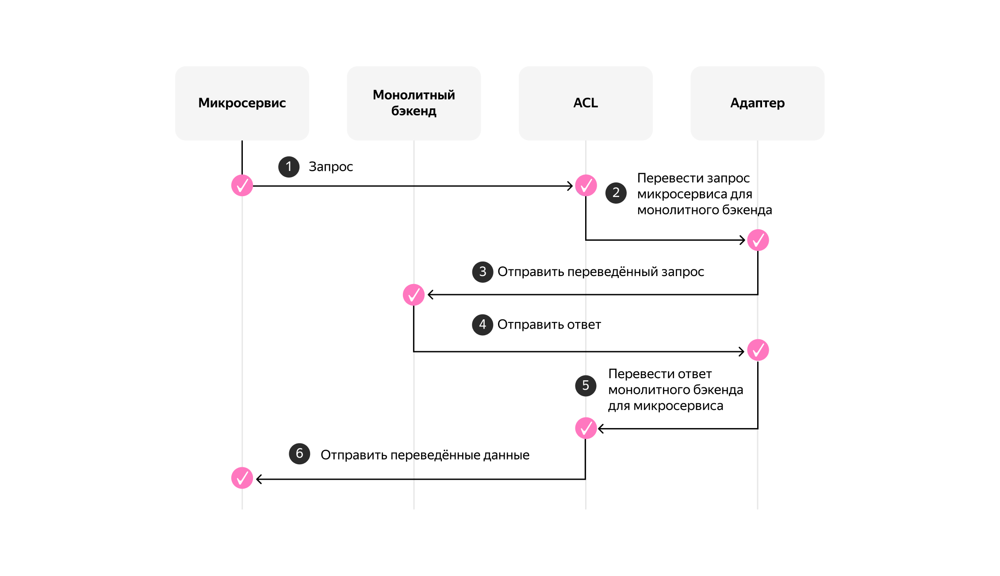
Когда внедрять и отключать
ACL
ACL внедряют, как только команда начинает разработку микросервиса,
которому нужно взаимодействовать с монолитом.
пример
примера миграцию онлайн-магазина «Шайба». В монолитной системе пять функциональных областей, между которыми следующие зависимости:
- Корзина запрашивает данные у каталога товаров и системы обработки платежей.
- Профиль пользователя обращается к корзине, системе обработки платежей и управлению заказами.
- Обработка платежей обращается к управлению заказами.
- Управление заказами обращается к каталогу товаров.
- Каталог товаров не запрашивает данные у остальных систем, но отвечает на запросы.
Допустим, команда собирается выделить каталог товаров в отдельный сервис. После отключения монолитного каталога корзине
и управлению заказами придётся взаимодействовать с микросервисом. Значит, нужен ACL.
Команда начинает писать сервис каталога и параллельно внедряет ACL. Когда сервис выкатят в продакшен, трафик переключат.
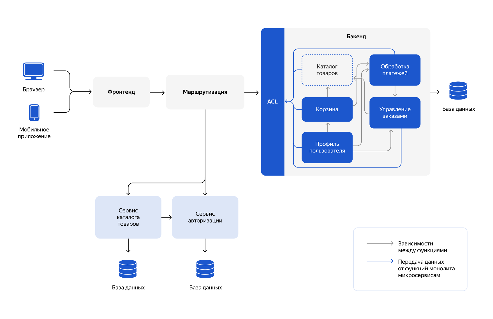 - ACL выводят из
эксплуатации, когда все зависимые сервисы перенесли в архитектуру
микросервисов. - если останется кусок, но он автономен, ACL можно
отключить раньше
Когда стоит отказаться от
ACL
старевшая система работает настолько плохо, что вам нужно заменить
её сразу целиком
в монолит нужно вносить изменения во время миграции. Такое возможно,
в частности, в банковском приложении.
Экономическая обстановка нестабильна, регулятор часто вносит
изменения на законодательном уровне,
а вам нужно адаптировать к ним приложение.
При таком миграция станет уже старой
Использование Strangler Fig
без ACL
Прямую интеграцию просто осуществить
наследованная система относительно проста и понятна, а ещё у неё
чёткие и последовательные модели данных и протоколы
Вы разрабатываете краткосрочный проект или временное
решение
ACL разрабатывают так, чтобы он оказывал минимальное влияния на
производительность,
но дополнительный уровень абстракции — это всё ещё дополнительный
уровень абстракции.
Он может создавать задержки
У команды ограниченные ресурсы или нет опыта в создании
ACL
С ACL система станет слишком сложной
Как внедрить ACL
Определите границы и зависимости
Сначала изучите унаследованную систему
определите границы между унаследованной системой и
микросервисами
определите зависимости между унаследованной системой и
микросервисам
Разработайте интерфейс ACL
создайте интерфейс для ACL, который абстрагирует сложности
унаследованной системы
сделать чистым и чётко определённым,
согласовать с требованиями микросервисов, которые вы
разрабатываете.
Внедрите ACL-компоненты
Адаптеры данных — они преобразуют форматы данных и обеспечивают
совместимость унаследованной системы и новой.
Шлюзы сервисов — они нужны для управления взаимодействием между
старой системой и новыми сервисами.
Шлюзы занимаются преобразованием протоколов, маршрутизацией запросов
и преобразованием ответов.
Протестируйте ACL
проведите тестирование производительности, чтобы убедиться
тщательное интеграционное тестирование
Протестируйте различные сценарии для проверки функциональности
ACL
Разверните ACL и внедрите мониторинг
Расширяйте развёртывание постепенно — по мере роста доверия к
ACL
мониторинг для отслеживания производительности и надёжности
ACL.
Настройте оповещения о любых возникающих проблемах — например, об
ошибках трансляции данных или сбоях связи. 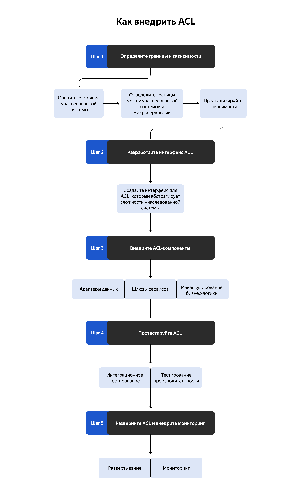
Технологии и
инструменты для создания ACL
API-шлюзы.
Kong, NGINX и AWS API Gateway можно использовать для управления и
маршрутизации запросов между старой системой и микросервисами.
Инструменты для преобразования данных
Apache Camel и MuleSoft, упростят трансформацию данных и
преобразование протоколов.
Брокеры сообщений.
Брокеры сообщений обеспечивают связь и обмен данными между старой
системой и новыми сервисами.
Service Mesh.
Решения Service Mesh, такие как Istio и Linkerd, могут предоставить
дополнительные возможности для управления взаимодействиями микросервисов
В том числе — управление трафиком, безопасность и
наблюдаемость.
Настраиваемое промежуточное ПО
использовать Java с Spring Boot и Node.js
Anti-Corruption Layer — это паттерн, который помогает обезопасить
взаимодействие между новой системой и устаревшей.
В задачи паттерна входит маршрутизация запросов от старой системы к
новой.
Чтобы реализовать ACL, нужно использовать инструменты
маршрутизации.
Маршрутизация в
микросервисах
Маршрутизация — это способы управления и направления потока трафика
между различными частями системы.
Польза маршрутизации в период миграции
Безболезненное взаимодействие с пользователями.
Непрерывность работы.
Инкрементное развёртывание.
Поддерживает поэтапное развёртывание новых функций и услуг.
Управление рисками.
Снижает риск полного отказа системы за счёт возможности отката или
перенаправления трафика.
Проблемы маршрутизации в период миграции
Сложность управления трафиком:
Множество путей
Согласованность
Задержка и производительность
Увеличение задержки
обратные прокси или API-шлюзы, может приводить к увеличению
задержек.
Масштабируемость
Обработка сбоев
Отказы сервисов
Механизмы аварийного восстановления
Безопасность
Безопасность данных
Управление доступом
Мониторинг и отладка
Наглядность
Устранение неполадок
Техники
маршрутизации между монолитом и новыми сервисами
обратный прокси-сервер (reverse proxy)
это промежуточный сервер, который ретранслирует запросы клиентов из
внешней сети на один или несколько серверов внутренней сети.
го настраивают так, чтобы он занимался маршрутизацией всех входящих
запросов к нужному внутреннему сервису.
Nginx, HAProxy или Apache HTTP Server.
преимущества
Упрощённая маршрутизация
Балансировка нагрузки
Безопасность
Кеширование
API-шлюз (Gateway API)
это продвинутая и многофункциональная альтернатива обратному
прокси-серверу.
Когда шлюз развёртывают, он начинает обрабатывать все входящие
запросы и перенаправлять их на основе заранее определённых правил
Kong, Apigee, AWS API Gateway и Zuul.
преимущества
Унифицированная точка входа
Безопасность и аутентификация
Ограничение скорости и дробление.
Аналитика и мониторинг.
Service Mesh
представляет собой объединение двух техник в среде Kubernetes
Стратегии
проектирования микрофронтендов
всего 3 вида стратегий
вертикальная нарезка
автономность команд
изоляция
Вертикальная нарезка
Организуйте микрофронтенды вокруг бизнес-возможностей или
пользовательских маршрутов.
DDD подход - приложение делят на домены (на разные цели
бизнеса)
каждый микрофронтенд - есть самодостаточная система, которая есть
отдельная бизнес-функция
со своей внешней логикой и от пользовательского интерфейса до уровня
получения данных 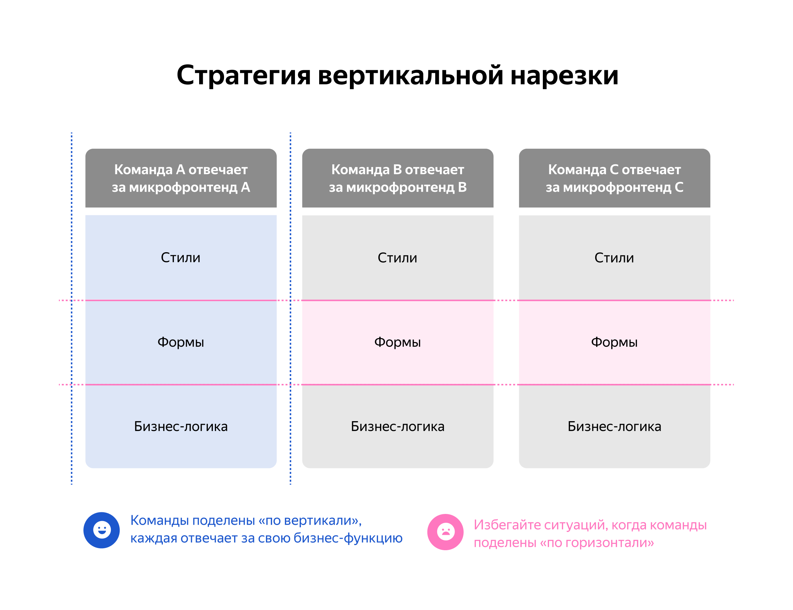
Пример
Вы разрабатываете систему управления медицинским центром.
Пообщавшись с клиентом, вы выделили четыре домена:
регистрация пациентов,
назначение встреч,
медицинские записи,
выставление счёта.
Каждый домен будет обрабатывать всё, что касается его
бизнес-функции:
от компонентов пользовательского интерфейса до взаимодействия с API
и управления состоянием.
плюсы
каждый микрофронтенд полный набор функций - независимый во всем
(разработка, тесты, разворачивание)
минусы
для определения границ домена, нужно хорошо понимать бизнес
когда применять
сложные пользовательские интерфейсы
кросс-функциональные команды
Автономность команд
Дайте каждой команде возможность выбрать технологический стек,
который подходит под её задачи.
img_39.png
пример
для динамики React
для форм - Angular
плюсы
более адаптивные решения
минусы
проблемы общей стилизации и сквозного управления
Изоляция
Убедитесь, что у микрофронтендов нет общих зависимостей во время
выполнения.
Каждый микрофронтенд должен включать все свои
зависимости
Их инкапсулируют в его пакет развёртывания.
Общие библиотеки в микрофронтендах будут дублироваться, но их
можно совместить с помощью стратегического управления версиями на более
широком уровне.
Изоляция необходима, чтобы избежать конфликтов версий и облегчить
обновление или замену отдельных микрофронтендов.
img_40.png
пример
В приложении есть финансовая панель. Торговые данные в реальном
времени требуют быстрого обновления.
Они не должны зависеть от более статичных разделов — например, от
управления профилем пользователя или новостной ленты.
Изолирование этих микрофронтендов гарантирует, что высокочастотные
обновления торгового интерфейса
не повлияют на производительность других частей приложения.
плюсы
Изоляция снижает риск того, что изменения в одном микрофронтенде
повлияют на другие.
минусы
Если общие библиотеки включены в несколько микрофронтендов, размер
приложения увеличится.
когда использовать
Частые обновления и развёртывания
Задачи масштабирования
Паттерн Backend for
Frontend
Проблемы
традиционного API в сложной архитектуре
проблема в классическом API при микросервисах не только
фронт-монолит обращается к разным,
но и мимкрофронты зависят от разных API 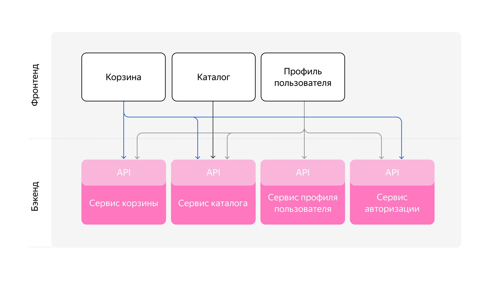
пример, микрофронт Корзина делает запросы к сервисам: авторизации,
корзины, каталога
это будет не удобно агрегировать во фронте все запросы от
микросервисов
Процесс разработки усложняется. Фронтенд-разработчики вынуждены
следить за всеми изменениями в микросервисах
Безопасность снижается
Что такое Backend for
Frontend
Backend for Frontend (бэкенд для фронтенда, BFF) — это подход к
проектированию, при котором каждый фронтенд обслуживает специальный
бэкенд.
промежуточный слой между фронтендом и внутренними
сервисами.
BFF отвечает за сбор информации от разных микросервисов, её
обработку и доставку на фронтенд в удобном формате.
также BFF используется если есть Мобильное и веб приложения
один использует REST API, второй GraphQl
для каждого делается свой BFF, чтобы в микросервисах не
реализовывать оба API
вообще может быть другой, BFF делает внутри себя под нужный формат
фронта
BFF тесно связан с клиентом и развёртывается вместе с
ним
Вместо того чтобы напрямую вызвать метод API на сервере, клиент
будет вызывать метод API на уровне BFF.
BFF - есть промежуточный слой, принимающий запросы от клиента и
работающий с беком 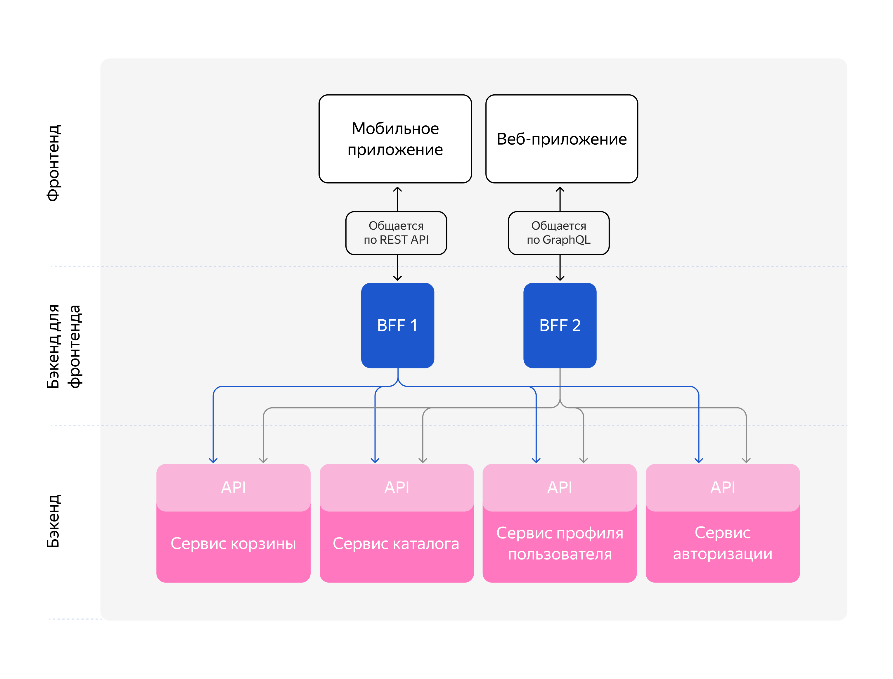
Когда использовать BFF
Монолитный фронтенд и микросервисы.
Несколько клиентов, которые используют разные технологии
Микросервисы и микрофронтенды.
BFF для микрофронтендов
У каждого микрофронтенда — свой BFF.
Его настраивают в соответствии с требованиями конкретного
фронтенда
BFF агрегирует данные из нескольких бэкенд-сервисов, преобразовывает
их в нужный формат и отправляет на фронтенд.
Ещё можно настроить кеширование. 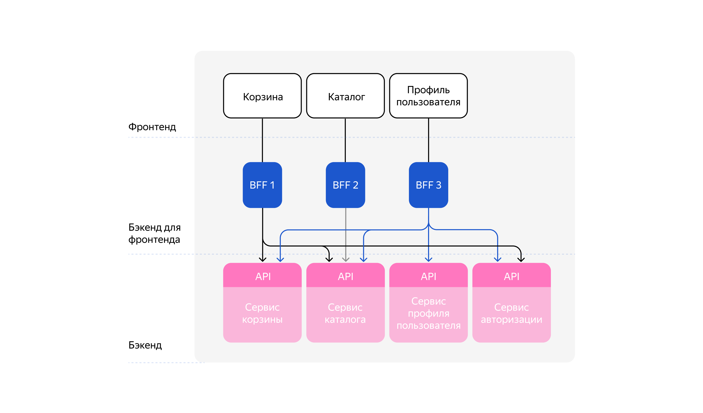
Преимущества BFF
Подготовить данные для конкретного фронтенда
снижаете необходимость дополнительной обработки данных на стороне
клиента
Упростить логику на стороне клиента
BFF обрабатывает сложные логические операции на стороне сервера. Это
относится к агрегации, композиции и преобразованию данных.
Увеличить производительность.
С BFF вы передаёте меньше данных по сети, а фронтенд выполняет
меньше запросов
Усилить безопасность
Что важно учесть при дизайне
BFF
подберите оптимальный технологический стек
внедрить стратегии кеширования
разработать систему обработки ошибок
внедрить мониторинг и ведение логов
Паттерны управления
микросервисами
CQRS
для разделения чтения и записи данных
Saga
для обеспечения согласованности данных на примере реальных
проектов
API Gateway
Паттерн CQRS
Command Query Responsibility Segregation (CQRS)
это паттерн проектирования, который разделяет операцию чтения и
записи данных в системе на два отдельных интерфейса.
плюсы
масштабируемость
оптимизация запросов
Запросы на чтение могут быть оптимизированы для быстрого получения
данных
команды записи — для эффективного обновления данных.
улучшенная согласованность
минусы
сложности реализации
два отдельных интерфейса
увеличение объема кода
Разделение чтения и
записи данных с CQRS
операция чтения - запросы (queries)
не изменяют состояние системы
операция изменения - команды (commands)
изменяют состояние системы
Документирование применения
CQRS
Документирование применения CQRS включает
описание всех команд и запросов, используемых в системе,
модели данных, связанные с каждой операцией
пример задачи
Команды (Commands):
CreateOrderCommand: Команда для создания нового заказа.
Модель данных: Order (id, courierId, status, deliveryTime)
Метод: execute()
UpdateCourierStatusCommand: Команда для обновления статуса курьера.
Модель данных: Courier (id, name, status)
Метод: execute()
CompleteDeliveryCommand: Команда для завершения доставки.
Модель данных: Order (id, courierId, status, deliveryTime)
Метод: execute()
Запросы (Queries):
GetCourierLocationQuery: Запрос для получения текущего местоположения курьера.
Модель данных: Location (courierId, latitude, longitude, timestamp)
Метод: execute()
GetActiveOrdersQuery: Запрос для получения списка активных заказов.
Модель данных: Order (id, courierId, status, deliveryTime)
Метод: execute()
GetDeliveryHistoryQuery: Запрос для получения истории доставки.
Модель данных: Order (id, courierId, status, deliveryTime)
Метод: execute()
Паттерн Saga позволяет согласованно управлять состоянием системы,
разделяя большую транзакцию на серию меньших шагов,
каждый из которых может быть выполнен автономно.
Каждый шаг транзакции имеет соответствующую компенсирующую операцию,
которая выполняется в случае неудачи.
требованиям ACID:
Atomicity — атомарность,
Consistency — целостность,
Isolation — изолированность,
Durability — надёжность.
В микросервисных архитектурах тоже нужно поддерживать ACID,
но использовать механизмы СУБД не получится:
процесс включает несколько баз данных.
Saga решает эту проблему с помощью набора локальных транзакций и
компенсирующих действий.
паттерн дробит транзакцию на шаги, которыми занимаются разные
микросервисы.
В случае ошибки система активирует отмену действия, которая
распространяется на все вовлечённые микросервисы.b
плюсы
согласованность данных
устойчивость ка сбоям
гибкость
минусы
сложность реализации
временная несогласованность
Подходы к реализации Saga
Оркестрация
Orchestration-based Saga
центральный координатор (оркестратор), который управляет выполнением
всех шагов транзакции и вызывает каждый шаг поочерёдно
отслеживает состояние выполнения и в случае ошибки инициирует
выполнение компенсирующих операций.
пример
Принятие заказа.
Клиент отправляет запрос на создание заказа оркестратору.
Создание заказа.
Оркестратор вызывает OrderService для создания заказа.
Резервирование товара.
После успешного создания заказа оркестратор вызывает InventoryService для резервирования товара.
Обработка оплаты.
После резервирования товара оркестратор вызывает PaymentService для обработки оплаты.
Отправка уведомления.
После успешной обработки оплаты оркестратор вызывает NotificationService для отправки уведомления клиенту о подтверждении заказа.
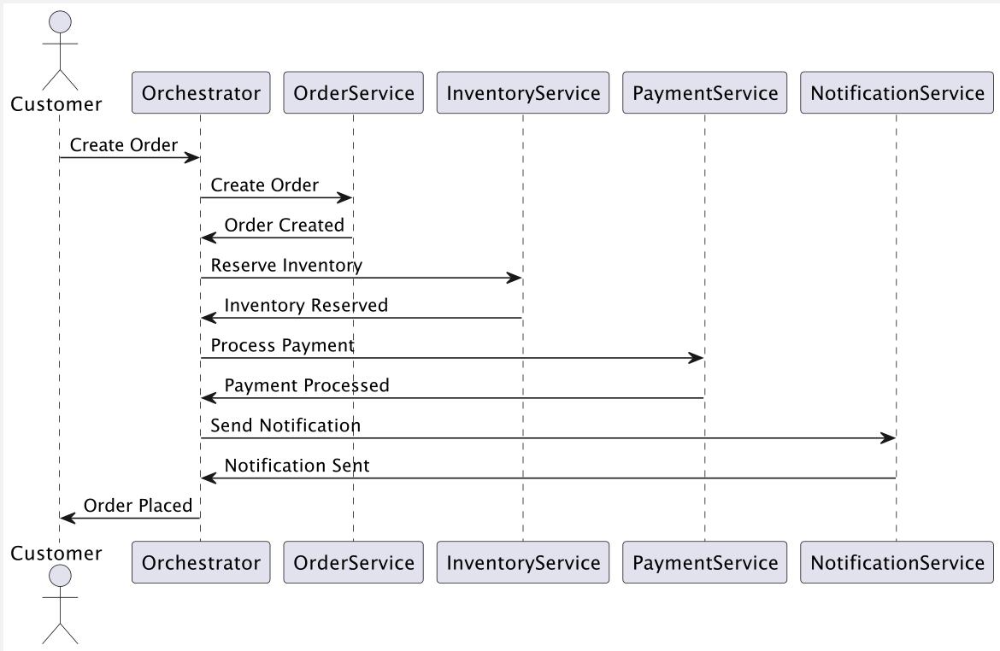
img_45.png
Хореография
Choreography-based Saga
каждый микросервис отвечает за выполнение своего шага и вызывает
следующий микросервис через обмен сообщениями
пример
Принятие заказа.
Микросервис OrderService создаёт заказ и отправляет сообщение InventoryService для резервирования товара.
Назначение курьера.
InventoryService резервирует товар и отправляет сообщение PaymentService для обработки оплаты.
Подтверждение доставки.
PaymentService обрабатывает оплату и отправляет сообщение NotificationService для отправки уведомления.
Завершение заказа.
NotificationService отправляет уведомление клиенту о подтверждении заказа.
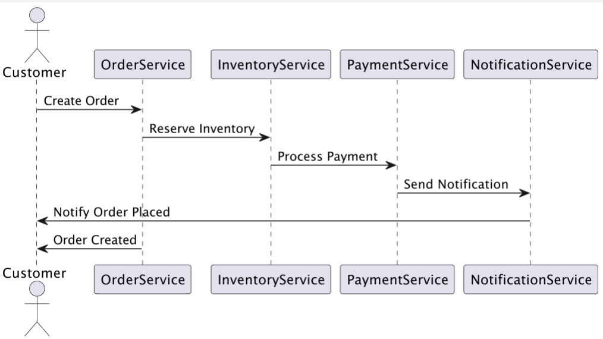
img_46.png
Обеспечение
согласованности данных с помощью Saga
выполняется серия шагов, каждый из которых может быть выполнен
независимо.
В случае неудачи любой из шагов может быть отменён с помощью
компенсирующей операции, что обеспечивает целостность данных.
пример
Процесс доставки заказа в системе CourierTrack включает следующие шаги:
Принятие заказа: создаётся новый заказ.
Компенсирующая операция — отмена заказа.
Назначение курьера: курьеру назначается заказ.
Компенсирующая операция — отмена назначения курьера.
Подтверждение доставки: курьер подтверждает доставку заказа.
Компенсирующая операция — отмена подтверждения доставки.
Завершение заказа: заказ помечается как завершённый.
Компенсирующая операция. Отмена завершения заказа.
Документирование применения
Saga
включает описание всех шагов транзакции, компенсирующих операций
и моделей данных, используемых в процессе
пример
Пример документации для CourierTrack
Название: Документация по применению Saga в системе CourierTrack
Введение: Эта документация описывает применение паттерна Saga в системе отслеживания курьеров CourierTrack. Документация включает описание шагов транзакции, компенсирующих операций и моделей данных.
Шаги транзакции и компенсирующие операции:
Принятие заказа:
Операция: Создание нового заказа.
Компенсирующая операция: Отмена заказа.
Назначение курьера:
Операция: Назначение курьера на заказ.
Компенсирующая операция: Отмена назначения курьера.
Подтверждение доставки:
Операция: Подтверждение доставки заказа курьером.
Компенсирующая операция: Отмена подтверждения доставки.
Завершение заказа:
Операция: Завершение заказа.
Компенсирующая операция: Отмена завершения заказа.
YAML
@startuml
start
:Принятие заказа;
if (успешно?) then (да)
:Назначение курьера;
if (успешно?) then (да)
:Подтверждение доставки;
if (успешно?) then (да)
:Завершение заказа;
else (нет)
:Отмена подтверждения доставки;
:Отмена назначения курьера;
:Отмена заказа;
endif
else (нет)
:Отмена назначения курьера;
:Отмена заказа;
endif
else (нет)
:Отмена заказа;
endif
stop
@enduml
API Gateway
API Gateway является единой точкой входа для клиентских
запросов.
Этот подход можно сравнить с руководителем в компании, который
передаёт задачи и информацию своим сотрудникам
и предоставляет результаты работы другим направлениям
API Gateway выполняет функции прокси-сервера, принимая все
клиентские запросы и маршрутизируя их к соответствующим
микросервисам.
Позволяет скрыть внутреннюю структуру микросервисов от клиентов,
предоставляет единый интерфейс для взаимодействия с системой.
API Gateway также может выполнять множество дополнительных задач,
таких как трансформация запросов и ответов, кеширование, мониторинг,
логирование, управление сессиями, аутентификация и авторизация.
обеспечивает оптимизацию маршрутизации запросов, эффективное
распределение нагрузки между микросервисами,
а также интеграцию с системами аутентификации и авторизации.
плюсы
единая точка входа
безопасность
маршрутизация и балансировка нагрузки
мониторинг ми логирование
минусы
единая точка отказа
сложность
Управление
API микросервисов с помощью API Gateway
управляет всеми API вызовами и предоставляет множество функций для
оптимизации и защиты API микросервисов
может выполнять трансформацию запросов и ответов, обеспечивать
кеширование для улучшения производительности,
управлять сессиями пользователей и выполнять аутентификацию и
авторизацию запросов.
пример
Маршрутизация запросов:
API Gateway принимает запросы от клиентов и маршрутизирует их к соответствующим микросервисам. Например, запрос на создание заказа маршрутизируется к Order Service, а запрос на получение текущего местоположения курьера — к Location Service.
Аутентификация и авторизация:
API Gateway выполняет аутентификацию пользователей, проверяя их учётные данные, и авторизует запросы, проверяя права доступа к запрашиваемым ресурсам.
Кеширование:
API Gateway кеширует часто запрашиваемые данные, такие как списки доступных курьеров, чтобы уменьшить нагрузку на микросервисы и улучшить производительность системы.
Мониторинг и логирование:
API Gateway собирает метрики и логи всех запросов и ответов, что позволяет отслеживать производительность системы, выявлять проблемы и анализировать поведение пользователей.
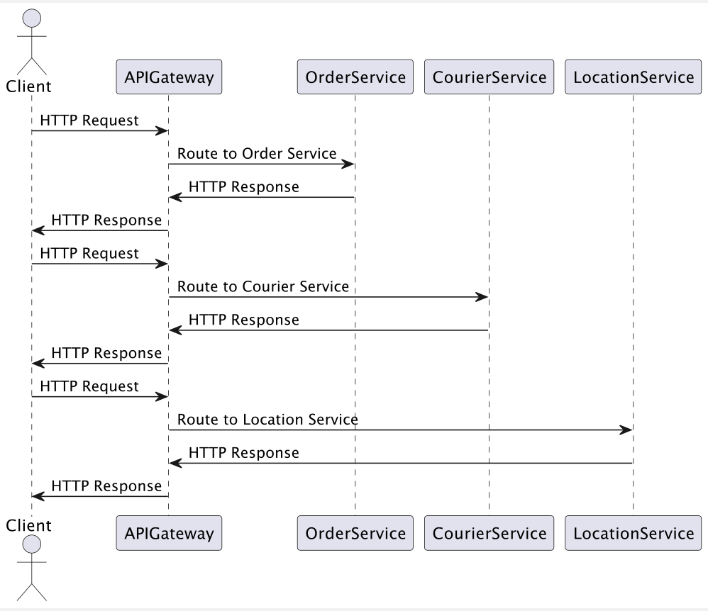
img_49.png
Оценка
различных подходов к использованию API Gateway
Монолитный API Gateway
плюсы: единая точка входа, централизованное управление
безопасностью
минусы единая точка отказа 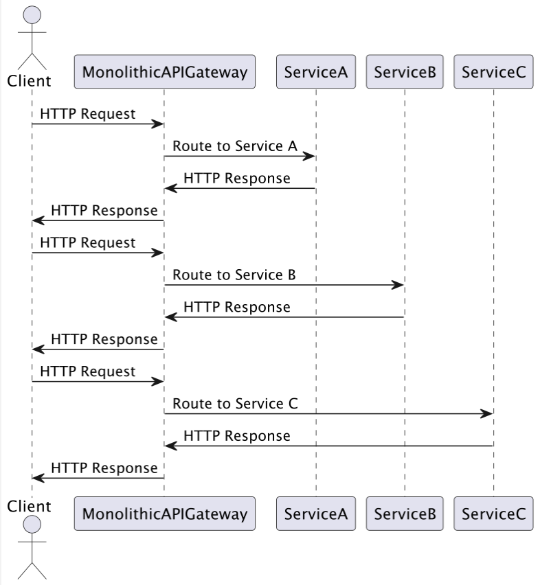
Распределённый API Gateway
плюсы: уменьшение единой точки отказа, улучшенная масштабируемость и
производительность.
минусы: повышенная сложность управления и настройки, возможные
проблемы с согласованностью данных 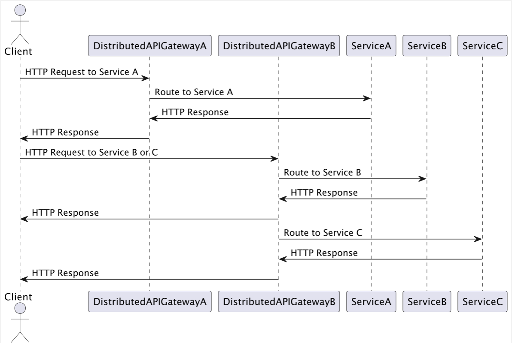
Многослойный API Gateway
плюсы: улучшенная безопасность, улучшенная масштабируемость,
упрощенное управление и мониторинг, повышенная производительность.
минусы: повышенная сложность, трудности настройки, увеличение
времени отклика, затраты на инфраструктуру. 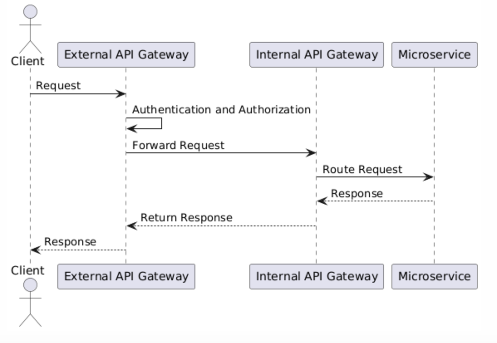
Serverless API Gateway
Плюсы: высокая масштабируемость, отсутствие необходимости управления
инфраструктурой, уменьшение затрат на ресурсы.
Минусы: возможные ограничения в функциональности и
производительности, зависимость от облачного провайдера.
Взаимодействие
микросервисов с использованием Kong
API Gateway с открытым исходным кодом — Kong.
основные функции, которые API Gateway выполняет в микросервисной
архитектуре:
Централизация маршрутизации запросов
API Gateway принимает все клиентские запросы и маршрутизирует их к
соответствующим микросервисам
Управление аутентификацией и авторизацией
Балансировка нагрузки и распределение трафика
распределяет входящий трафик между несколькими экземплярами
микросервисов
Обеспечение безопасности
шифрование данных, защиту от DDoS-атак и ограничение скорости
запросов
Кеширование запросов
кешировать ответы на часто запрашиваемые ресурсы
Кто и как применяет API Gateway
Netflix Zuul, Amazon API Gateway,NGINX API Gateway
Настройка и
использование API Gateway — Kong
Kong — это популярный API Gateway с открытым исходным кодом,
который поддерживает множество плагинов
для управления трафиком, аутентификации, авторизации и
мониторинга.
Компании используют этот паттерн для надёжного и безопасного
взаимодействия между микросервисами.
Взаимодействие
микросервисов с использованием Kafka
проблемы при использовании синхронного подхода
Синхронизация данных
пример, необходимость обеспечивать консистентность данных о погоде,
поступающих от различных источников (метеостанции, спутники, сенсоры
IoT),
создала задержки и несоответствия.
Конфликты данных возникали из-за одновременной обработки информации
с разной частотой обновления, что снижало точность прогнозов.
Масштабируемость
с увеличением числа пользователей и объёма данных система начала
сталкиваться с узкими местами.
Синхронные вызовы создавали задержки и ограничивали возможность
горизонтального масштабирования,
что ухудшало производительность и пользовательский опыт.
Управление трафиком
в пиковые моменты (например, крупные метеорологические события)
система перегружалась из-за увеличения количества запросов.
Синхронное решение не обеспечивало равномерное распределение
нагрузки, что приводило к перегрузкам и снижению доступности.
Надёжность и устойчивость к сбоям
сбой одного из компонентов (например, сервера обработки данных)
влиял на всю систему.
Синхронные вызовы создавали цепочку зависимостей, где сбой одного
компонента блокировал работу других, что снижало общую устойчивость
системы.
Эти проблемы можно решить асинхронным взаимодействием,
которое уменьшает зависимость между сервисами, улучшает
производительность и масштабируемость системы
Асинхронное взаимодействие эффективно реализуется с помощью Apache
Kafka,
которая предоставляет высокопроизводительный и надёжный брокер
сообщений.
Взаимодействие между
микросервисами
Синхронное взаимодействие
клиентский сервис отправляет запрос и ждёт ответа от
сервиса-получателя перед тем, как продолжить выполнение своей логики.
Обычно это реализуется через HTTP или RPC (Remote Procedure
Call).
Примеры использования:
REST API: клиент отправляет HTTP-запрос к REST API сервиса и ждёт
ответа с данными.
gRPC: клиент вызывает удалённую процедуру и ждёт результата
выполнения.
Асинхронное взаимодействие
позволяет сервисам отправлять сообщения и события без необходимости
немедленного получения ответа
осуществляется через брокеры сообщений, очереди или системы
событийного взаимодействия
Примеры использования:
Message Queueing: сервисы отправляют сообщения в очередь, и
получатели обрабатывают их по мере готовности.
Event Sourcing: изменения состояния системы сохраняются как
последовательность событий, которые могут быть обработаны
асинхронно.
Publish/Subscribe: издатели отправляют сообщения в топики, на
которые подписаны потребители, и все подписчики получают сообщения
асинхронно.
Основные
концепции синхронного взаимодействия
Синхронное взаимодействие
это подход к обмену данными между компонентами системы, при котором
клиент (или инициатор запроса)
ожидает завершения операции и получения ответа от сервера (или
обработчика запроса) до продолжения своей работы.
ключевые концепции:
запрос-Ответ (Request-Response)
плюсы: простой и понятный подход, обеспечивает чёткую
последовательность операций.
минусы: клиент блокируется, пока сервер не завершит обработку
запроса, что может привести к задержкам и снижению
производительности.
Тайм-ауты (Timeouts)
тайм-ауты используются для ограничения времени ожидания ответа от
сервера.
Если сервер не отвечает в установленное время, клиент получает
ошибку тайм-аута.
Плюсы: помогает избежать бесконечного ожидания и позволяет клиенту
обработать ошибки.
Минусы: тайм-ауты могут быть сложны в настройке и управлении,
особенно при высоких нагрузках и изменяющихся условиях сети.
Блокировка (Blocking):
в синхронном взаимодействии клиентский поток блокируется до
получения ответа от сервера.
В этот период клиент не может выполнять другие операции.
Плюсы: простота реализации и отладки.
Минусы: может привести к снижению производительности и отзывчивости
системы, особенно при высоких нагрузках.
Зависимости (Dependencies):
при синхронном взаимодействии операции часто зависят друг от друга.
Если одна операция не завершена, последующие операции не могут быть
выполнены.
Плюсы: позволяет легко отслеживать порядок выполнения операций и
управлять им.
Минусы: могут возникать узкие места и блокировки, особенно при сбоях
или перегрузках в системе.
Управление состоянием (State Management):
управление состоянием может быть сложным, поскольку состояние может
изменяться в зависимости от результата каждого запроса.
Плюсы: лёгкость в управлении состоянием при небольших масштабах и
простой архитектуре.
Минусы: может стать сложным при увеличении масштабов системы и
увеличении числа взаимодействующих компонентов.
Изоляция ошибок (Error Isolation):
ошибки, возникающие в одном компоненте, могут передаваться и влиять
на другие компоненты,
поскольку клиент ожидает завершения всей цепочки операций.
Плюсы: простота обработки ошибок при небольших системах.
Минусы: ошибки могут распространяться по всей системе, что усложняет
управление и отладку.
Параллелизм (Parallelism):
синхронное взаимодействие ограничивает возможности параллельного
выполнения операций, поскольку клиент блокируется до получения
ответа.
Плюсы: упрощает поток выполнения операций в определённом
порядке.
Минусы: ограничивает возможности масштабирования и параллельного
выполнения задач.
Основные
концепции асинхронного взаимодействия
Асинхронное взаимодействие между микросервисами — важная
составляющая современных распределённых систем.
Оно позволяет микросервисам «общаться» без необходимости
немедленного ответа, что значительно улучшает масштабируемость и
надёжность системы.
основные концепции асинхронного взаимодействия, в том числе
сообщения, события, очереди.
Сообщения
представляют собой единицы данных, которые отправляются от одного
микросервиса к другому.
Могут содержать информацию о событиях, данных или командах для
выполнения определённых действий.
События
это уведомления о произошедших изменениях в системе, позволяют
микросервисам реагировать на изменения состояния системы.
Например, событие может указывать на то, что новый пользователь
зарегистрировался или что обновились данные о погоде.
Очереди
используются для временного хранения сообщений или событий до тех
пор, пока получатель не будет готов их обработать.
обеспечивают надёжную доставку и помогают справляться с пиковыми
нагрузками, распределяя обработку сообщений во времени.
Пуш (Push) и Пул (Pull)
подходы
Push-подход
отправитель данных (продюсер) активно отправляет данные получателю
(консьюмеру).
Подход часто используется в моделях Publish/Subscribe и Event
Sourcing.
пример: WeatherNow: сервисы, отвечающие за публикацию данных о
погоде, отправляют обновления в топики Kafka,
на которые подписаны другие сервисы (например, уведомления и
аналитика).
Pull-подход
получатель данных (консьюмер) активно запрашивает данные у
отправителя (продюсера) или из хранилища (например, очереди
сообщений).
Подход часто используется в моделях Message Queueing.
пример: WeatherNow: сервисы обработки данных запрашивают обновления
из очереди сообщений,
чтобы обрабатывать данные о погоде по мере их поступления.
пример
Описание архитектуры
Сбор данных:
Сенсоры и источники данных (Sensors and Data Sources): данные о погоде поступают от различных сенсоров, внешних API и спутников.
Эти источники отправляют данные в брокер сообщений.
Message Broker (Kafka): брокер сообщений (например, Apache Kafka) используется для приёма и хранения входящих данных
о погоде от различных источников. Брокер сообщений гарантирует надёжную доставку данных и масштабируемость системы.
Обработка данных:
Data Processing: сервис обработки данных извлекает сообщения из брокера, обрабатывает их и сохраняет в хранилище событий (Event Store).
Обработанные данные затем публикуются обратно в брокер для дальнейшего использования другими сервисами.
Event Store: события находятся в хранилище событий, что позволяет отслеживать изменения состояния системы и выполнять анализ данных.
Уведомления и аналитика:
Notification and Analysis: сервисы уведомлений и аналитики подписываются на обновления данных о погоде из брокера сообщений.
Сервис уведомлений отправляет пользователям предупреждения о значительных изменениях погоды, а сервис аналитики анализирует данные и помещает результаты в хранилище событий.
Взаимодействие с пользователями:
User Interaction: пользователи взаимодействуют с системой через мобильное или веб-приложение.
Они отправляют запросы на получение текущей погоды через API Gateway. API Gateway запрашивает последние данные у брокера сообщений и передаёт их пользователям для отображения в приложениях.
Паттерны асинхронного
взаимодействия
Message Queueing (Очередь сообщений)
модель взаимодействия, при которой сообщения отправляются в очередь,
где они хранятся до тех пор,
пока получатель (консьюмер) не будет готов их обработать.
Пример. Погодные данные от различных сенсоров отправляются в очередь
сообщений и обрабатываются консьюмерами, которые обновляют базу данных.
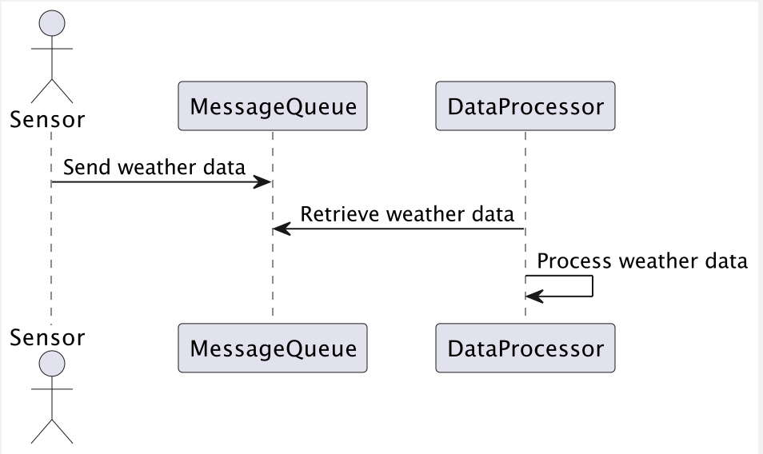
Event Sourcing (Хранение событий)
паттерн, при котором состояние системы сохраняется как
последовательность событий.
Каждое изменение состояния записывается как событие, и текущее
состояние системы можно восстановить путём проигрывания всех
событий.
Пример. Каждое обновление погодных данных записывается как событие,
которое затем обрабатывается для обновления конечного состояния системы.
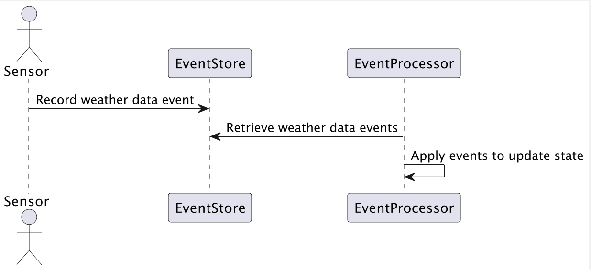
Publish/Subscribe (Публикация/Подписка)
это модель взаимодействия, при которой издатели отправляют сообщения
в один или несколько топиков,
на которые подписаны консьюмеры. Все подписчики получают сообщения
асинхронно.
Пример. Сервисы, отвечающие за публикацию погодных данных,
отправляют обновления в топик,
на который подписаны другие сервисы (например, уведомления и
аналитика).
Choreography (Хореография)
это паттерн, при котором каждый микросервис реагирует на события и
производит собственные события для других микросервисов.
Взаимодействие координируется без центрального контроля.
Пример. Сервисы обмена данными о погоде реагируют на события, такие
как обновления данных от сенсоров,
и отправляют собственные события (например, оповещения о плохой
погоде). 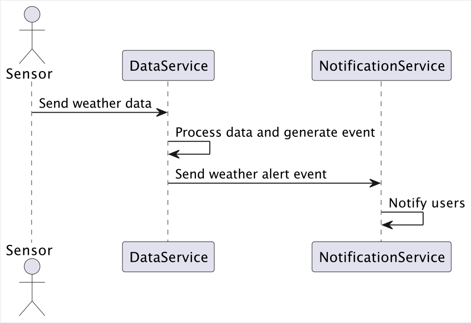
Orchestration (Оркестрация)
это паттерн, при котором централизованный компонент (оркестратор)
управляет взаимодействием между микросервисами,
инициируя и контролируя выполнение задач.
Пример. Центральный сервис оркестрации управляет последовательностью
шагов для обработки и распространения данных о погоде,
начиная с получения данных от сенсоров и заканчивая отправкой
уведомлений пользователям.
OpenAPI vs AsyncAPI
OpenAPI и AsyncAPI — два популярных стандарта, которые помогают
разработчикам описывать синхронные и асинхронные API
соответственно.
OpenAPI
это спецификация для описания RESTful API, которая позволяет
разработчикам документировать эндпоинты, методы, параметры и ответы
API.
широко используется для описания синхронных взаимодействий между
сервисами.
Плюсы:
Улучшенная документация
стандартизированный формат позволяет легко документировать и
понимать структуру API.
Инструменты и генерация кода
существуют многочисленные инструменты для автоматической генерации
кода, клиентских библиотек и документации на основе спецификаций
OpenAPI.
Совместимость
поддержка различных протоколов HTTP и интеграция с популярными
платформами и фреймворками.
Пример. В WeatherNow OpenAPI используется для документирования
RESTful API, который предоставляет данные о текущей погоде
пользователям.
openapi: '3.0.0'
info:
title: WeatherNow API
version: '1.0.0'
paths:
/weather:
get:
summary: Get current weather
responses:
'200':
description: Successful response
content:
application/json:
schema:
type: object
properties:
temperature:
type: number
humidity:
type: number
timestamp:
type: string
format: date-time
AsyncAPI
это спецификация для документирования и проектирования асинхронных
API.
Подобно OpenAPI для синхронных API, AsyncAPI позволяет описывать
структуры сообщений, каналы и взаимодействия между компонентами в
асинхронной системе.
Плюсы:
Улучшенная документация
стандартизированный формат позволяет легко документировать и
понимать структуру и взаимодействие асинхронных систем.
Инструменты и генерация кода
существуют инструменты для автоматической генерации кода, клиентских
библиотек и документации на основе спецификаций AsyncAPI.
Совместимость
поддержка различных протоколов и брокеров сообщений — Kafka, MQTT,
AMQP.
Пример. В WeatherNow спецификация AsyncAPI используется для
документирования взаимодействий между микросервисами
публикация данных о погоде в топики Kafka и подписка на эти топики
для получения
asyncapi: '2.0.0'
info:
title: WeatherNow Async API
version: '1.0.0'
servers:
production:
url: api.weathernow.com
protocol: kafka
channels:
weather-updates:
description: Channel for publishing weather updates
publish:
summary: Publish weather data
operationId: publishWeatherData
message:
contentType: application/json
payload:
type: object
properties:
temperature:
type: number
humidity:
type: number
timestamp:
type: string
format: date-time
Kafka — уникальна среди популярных брокеров сообщений, потому что:
не использует стандартный внешний протокол (как AMQP или MQTT);
сама определяет свой собственный формат взаимодействия (wire
protocol);
Kafka — это и платформа, и протокол в одном.
RabbitMQ, MQTT-брокеры и другие — разделены
RabbitMQ, ActiveMQ, Qpid → работают по AMQP (Advanced Message
Queuing Protocol)
Mosquitto, EMQX, HiveMQ → работают по MQTT
NATS → имеет свой протокол, но обычно указывается как “протокол
NATS”, а не “брокер NATS”
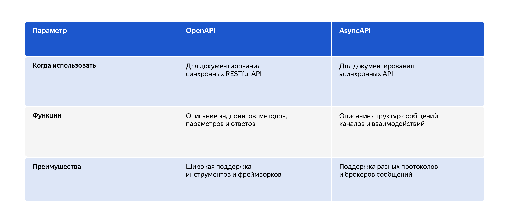
img_57.png
Kafka для асинхронного
обмена
Apache Kafka
это распределённая стриминговая платформа, разработанная для
публикации, подписки, хранения и обработки потоков данных в реальном
времени.
один из ключевых инструментов для обработки больших данных
помогает решить следующие проблемы
Задержки в обработке данных
позволяет обрабатывать данные в режиме реального времени,
распределяя нагрузку
и обеспечивая быструю передачу данных между источниками и
потребителями.
Масштабируемость
легко масштабируется горизонтально, добавляя новые брокеры и разделы
(англ. partitions)
Надёжность и устойчивость к сбоям
обеспечивает высокую надёжность и устойчивость к сбоям благодаря
репликации данных и возможностям восстановления после сбоев
Управление трафиком и балансировка нагрузки
обеспечивает эффективное управление трафиком и балансировку
нагрузки, равномерно распределяя сообщения между потребителями
Преимущества Apache Kafka
Высокая производительность
Kafka может обрабатывать миллионы сообщений в секунду — идеально для
систем с большим объёмом данных.
Масштабируемость
Kafka позволяет горизонтально масштабировать кластер, добавляя новые
брокеры, что обеспечивает высокую производительность и надёжность даже
при увеличении нагрузки.
Надёжность
Kafka поддерживает репликацию данных между брокерами, что
обеспечивает устойчивость к сбоям и высокую доступность системы.
Долговременное хранение
Kafka хранит сообщения в течение определённого времени, что
позволяет воспроизводить данные и анализировать события задним
числом.
Поддержка различных моделей взаимодействия
Kafka поддерживает модели Publish/Subscribe, Event Sourcing и
Message Queueing.
Архитектура и основные компоненты Kafka
Брокеры (Brokers)
Узлы в кластере Kafka, которые хранят и обрабатывают данные.
Каждый брокер отвечает за управление одним или несколькими разделами
(англ. partitions) топиков.
Топики (Topics)
Логические каналы, по которым передаются сообщения.
Каждый топик может состоять из нескольких разделов для параллельной
обработки.
Назначение — организация сообщений по категориям, обеспечение
параллельной обработки данных.
Продюсеры (Producers)
Клиенты, которые публикуют сообщения в топики.
Продюсеры могут отправлять данные в один или несколько топиков
одновременно.
Занимаются публикацией данных в топики, выбирают разделы для
отправки сообщений (например, по ключу).
Зоокипер (ZooKeeper)
Сервис для координации и управления кластером Kafka.
ZooKeeper используется для хранения метаданных о топиках, брокерах и
смещениях консьюмеров.
Предназначен для управления конфигурацией кластера, координации
работы брокеров, поддержки лидерства разделов.
адреса брокеров, десериализаторы ключей и значений, идентификатор
группы консьюмеров.
Properties props = new Properties();
props.put("bootstrap.servers", "localhost:9092");
props.put("group.id", "weather-consumers");
props.put("key.deserializer", "org.apache.kafka.common.serialization.StringDeserializer");
props.put("value.deserializer", "org.apache.kafka.common.serialization.StringDeserializer");
Consumer<String, String> consumer = new KafkaConsumer<>(props);
consumer.subscribe(Arrays.asList("weather-data"));
Отправка и получение сообщений
Публикация данных сенсоров (Sensors aka SensorProducer)
ProducerRecord<String, String> record = new ProducerRecord<>("weather-data", "sensor1", "temperature=25,humidity=60");
producer.send(record);
producer.close();
Обработка данных и уведомления (DataProcessor и
NotificationService aka DataProcessorConsumer и
NotificationConsumer)
Сервис обработки данных считывает данные из топика, обрабатывает
их и публикует результаты в новый топик.
Сервис уведомлений подписывается на этот топик и отправляет
уведомления пользователям.
// Консьюмер для обработки данных
Consumer<String, String> dataConsumer = new KafkaConsumer<>(props);
dataConsumer.subscribe(Arrays.asList("weather-data"));
while (true) {
ConsumerRecords<String, String> records = dataConsumer.poll(Duration.ofMillis(100));
for (ConsumerRecord<String, String> record : records) {
// Обработка данных
String processedData = processData(record.value());
// Публикация обработанных данных
ProducerRecord<String, String> processedRecord = new ProducerRecord<>("processed-weather-data", record.key(), processedData);
producer.send(processedRecord);
}
}
// Консьюмер для уведомлений
Consumer<String, String> notificationConsumer = new KafkaConsumer<>(props);
notificationConsumer.subscribe(Arrays.asList("processed-weather-data"));
while (true) {
ConsumerRecords<String, String> records = notificationConsumer.poll(Duration.ofMillis(100));
for (ConsumerRecord<String, String> record : records) {
// Отправка уведомлений
sendNotification(record.value());
}
}
Аналитика данных (AnalyticsService aka AnalyticsConsumer)
Сервис аналитики подписывается на топик с обработанными данными и
выполняет анализ
// Консьюмер для аналитики
Consumer<String, String> analyticsConsumer = new KafkaConsumer<>(props);
analyticsConsumer.subscribe(Arrays.asList("processed-weather-data"));
while (true) {
ConsumerRecords<String, String> records = analyticsConsumer.poll(Duration.ofMillis(100));
for (ConsumerRecord<String, String> record : records) {
// Анализ данных
analyzeData(record.value());
// Сохранение результатов анализа
saveAnalysisResults(record.value());
}
}
img_61.png
Мониторинг и
отладка работы Kafka в продакшене
позволяет отслеживать состояние системы, выявлять и устранять
проблемы, оптимизировать производительность.
Основные аспекты мониторинга — отслеживание метрик
производительности, состояния брокеров и топиков.
Kafka Manager
Веб-интерфейс для управления и мониторинга кластера Kafka.
Функции: мониторинг состояния брокеров, топиков, продюсеров и
консьюмеров, управление топиками и разделами.
Установка и настройка: Kafka Manager можно установить из
официального репозитория Kafka Manager.
Prometheus и Grafana
система мониторинга и алертинга с открытым исходным кодом, Grafana —
инструмент визуализации данных.
Функции: сбор метрик Kafka, создание дашбордов для визуализации
данных, настройка алертов.
Установка и настройка: Prometheus и Grafana можно установить из
официальных репозиториев Prometheus и Grafana.
JMX Exporter
инструмент для экспорта метрик Kafka в формате, совместимом с
Prometheus.
Функции: экспорт метрик JVM и Kafka для мониторинга с помощью
Prometheus.
Установка и настройка: JMX Exporter можно установить из официального
репозитория JMX Exporter.
Основные метрики для мониторинга Kafka
Производительность продюсеров и консьюмеров
Метрики: количество отправленных/полученных сообщений, задержка
отправки/получения сообщений, скорость обработки сообщений.
Инструменты: Kafka Manager, Prometheus, Grafana.
Состояние брокеров
Метрики: загрузка CPU и памяти, количество открытых файловых
дескрипторов, время отклика, состояние дисков.
Инструменты: Prometheus, Grafana.
Состояние топиков и разделов
Метрики: количество сообщений в топиках, задержка в потреблении
(англ. consumer lag), распределение разделов по брокерам.
Инструменты: Kafka Manager, Prometheus, Grafana.
Отладка работы Kafka
состоит из анализа логов, тестирования топиков и сообщений,
использования инструментов для диагностики и устранения
проблем.
Kafka CLI (Command Line Interface) - набор команд
Функции: создание и управление топиками, просмотр информации о
брокерах и топиках, тестирование продюсеров и консьюмеров.
Задача: Подготовить Helm для работы с кластером Kubernetes.
helm init
Эта команда инициализирует Helm в вашем кластере Kubernetes,
устанавливая необходимый для работы Helm сервер — Tiller (для Helm v2).
Это первый шаг для работы с чартами в вашем кластере.
Если вы используете Helm v3, данный шаг не применим.
Установка чартов
Задача: Развернуть приложение QuickDelivery в кластере Kubernetes с
помощью Helm-чарта.
helm install quickdelivery –name quickdelivery
Эта команда установит чарт в кластере, создавая все необходимые
ресурсы Kubernetes, такие как Deployment, Service, ConfigMap и
другие.
Helm автоматически подставит значения из values.yaml и развернёт
приложение.
Это упрощает процесс развёртывания и обеспечивает
консистентность.
Проверка развёртывания
Задача: Убедиться, что приложение успешно развёрнуто и работает.
kubectl get all -l app=quickdelivery
Эта команда покажет все ресурсы Kubernetes, связанные с вашим
приложением, и их текущий статус.
Это важно для подтверждения успешного развёртывания и для отладки в
случае проблем
Обновление Helm-чарта
Внесение изменений в чарт
Обновите файлы шаблонов или values.yaml в соответствии с новыми
требованиями
Обновление развёрнутого приложения
Задача: Применить изменения в кластере без прерывания работы
приложения.
helm upgrade quickdelivery quickdelivery
Эта команда обновит развёрнутое приложение, применив новые
конфигурации и шаблоны.
Helm управляет процессом обновления, обеспечивая плавное и
безопасное развёртывание новых версий.
Проверка обновления
kubectl get all -l app=quickdelivery
Cloud Native Computing
Foundation (CNCF)
loud Native Computing Foundation (CNCF) — это организация, созданная
под эгидой Linux Foundation в 2015 году с целью продвижения и развития
технологий,
ориентированных на облачные и контейнеризированные приложения.
Основная миссия CNCF заключается в обеспечении возможностей для
создания масштабируемых, управляемых и легко
разворачиваемых приложений в облачной среде
Ключевые направления деятельности
Поддержка открытых стандартов
Развитие экосистемы
Образование и обучение
Важнейшие проекты CNCF
Контейнеризация и оркестрация
Kubernetes: Система оркестрации контейнеров, которая автоматизирует
развёртывание, масштабирование и управление контейнеризированными
приложениями.
containerd: Высокопроизводительный runtime для управления жизненным
циклом контейнеров.
CRI-O: Лёгкий контейнерный runtime, специально разработанный для
Kubernetes.
Сеть и прокси
Envoy: Прокси-сервер и service mesh для управления трафиком между
микросервисами.
Cilium: Программа для сетевой безопасности и подключения на основе
eBPF.
Flannel: Простая и быстрая overlay сеть для Kubernetes.
Мониторинг и алертинг
Prometheus: Система мониторинга и алертинга, разработанная для сбора
и анализа метрик с различных систем и сервисов.
Thanos: Система для высокодоступного и масштабируемого мониторинга с
Prometheus.
Jaeger: Система для трассировки распределённых транзакций и анализа
производительности.
Логирование и управление данными
Fluentd: Инструмент для сбора, обработки и передачи логов.
Elasticsearch: Система для полнотекстового поиска и анализа
данных.
Vitess: Масштабируемая система для управления базами данных
MySQL.
Управление сервисами и обнаружение
etcd: Система распределённого ключа-значения для координации и
управления конфигурацией.
CoreDNS: Плагинная DNS-система, интегрированная с Kubernetes.
Linkerd: Легковесный service mesh для обеспечения безопасности,
наблюдаемости и управления трафиком.
Безопасность
SPIFFE: Спецификация для предоставления криптографически проверяемых
удостоверений для узлов и сервисов в динамичной инфраструктуре.
SPIRE: Инструмент для реализации SPIFFE в различных средах и
платформах.
Notary: Система для подписания и проверки целостности контейнерных
образов.
Сборка и CI/CD
Helm: Пакетный менеджер для Kubernetes, упрощающий развёртывание
приложений.
Argo: Инструмент для CI/CD и оркестрации рабочих процессов в
Kubernetes.
Tekton: Система для создания CI/CD конвейеров на основе
Kubernetes.
Обеспечение надёжности и тестирование
Chaos Mesh: Платформа для тестирования устойчивости к отказам и
симуляции различных сбоев в Kubernetes.
LitmusChaos: Инструмент для тестирования надёжности и симуляции
различных сбоев в облачных системах.
CNCF Landscape
интерактивный инструмент CNCF Landscape, чтобы пользователи могли
исследовать экосистему облачных технологий.
Он визуализирует различные проекты и инструменты, спонсируемые CNCF,
и помогает ориентироваться в сложной
Основные функции CNCF Landscape
Обзор ландшафта
Поиск и фильтрация
Интерактивная карта
Сравнение проектов
Образовательные ресурсы
Интеграция
CNCF-инструментов в проекты
Поиск инструмента
Зайдите на landscape.cncf.io.
В строке поиска введите monitoring или Prometheus.
Найдите и выберите проект Prometheus в разделе Monitoring &
Observability.
Понимание назначения инструмента
Перейдите на официальную страницу Prometheus, кликнув на ссылку на
landscape.cncf.io.
Ознакомьтесь с документацией, особенно с разделами Overview и
Getting Started.
Посмотрите, какие задачи решает Prometheus, такие как сбор и анализ
метрик, алертинг и визуализация данных.
Применение Prometheus в проекте
установка Prometheus:
Разверните Prometheus в вашем Kubernetes-кластере. Можно
использовать Helm-чарт для упрощения установки:
это выделенный слой инфраструктуры для управления сетевыми
взаимодействиями между микросервисами.
Он обеспечивает надёжное и безопасное общение между сервисами,
позволяя автоматизировать маршрутизацию запросов,
балансировку нагрузки, управление трафиком и мониторинг.
Основные преимущества использования Service Mesh:
Управление трафиком: Service Mesh позволяет гибко управлять трафиком
между микросервисами, обеспечивая маршрутизацию и балансировку
нагрузки
Обеспечение безопасности: Service Mesh обеспечивает безопасность
взаимодействий между микросервисами, предоставляя возможность шифрования
трафика и аутентификации запросов
Мониторинг и трассировка: Service Mesh предоставляет инструменты для
мониторинга и трассировки запросов
Обеспечение надёжности: Service Mesh помогает повысить надёжность
системы, обеспечивая автоматическое переключение на резервные экземпляры
сервисов в случае сбоев
Основные концепты Service
Mesh
img_69.png
Основные элементы
конфигурации Istio
Istio — это открытая платформа для подключения, управления и защиты
микросервисов.
Она обеспечивает многочисленные функции: маршрутизацию трафика,
балансировку нагрузки, аутентификацию и авторизацию, мониторинг и
трассировку запросов.
img_70.png
Istio два ключевых компонента:
Envoy Proxy — это прокси-сервер на основе паттерна Sidecar, который
размещается рядом с каждым микросервисом.
Он отвечает за маршрутизацию трафика, балансировку нагрузки,
мониторинг и безопасность. Среди его функций:
управление сетевым трафиком между сервисами,
отслеживание запросов и ответов,
установка политик безопасности и шифрование трафика.
Istiod — это основной сервис управления в архитектуре Istio.
Он объединяет функции нескольких ключевых компонентов системы в
единое целое.
Istiod появился в версии Istio 1.5 и заменил отдельные сервисы,
такие как Pilot, Citadel и Galley.
Он упрощает установку, управление и эксплуатацию Istio. Среди его
функций:
Управление трафиком.
Конфигурирует и управляет прокси-серверами Envoy, обеспечивая
маршрутизацию, балансировку нагрузки, и отказоустойчивость для сетевого
трафика между микросервисами.
Безопасность.
Управляет безопасностью сетевого взаимодействия, включая выдачу и
ротацию сертификатов X.509, обеспечивая шифрование трафика с
использованием mTLS (mutual TLS).
Валидация конфигураций.
Проверяет и валидирует конфигурации Istio, гарантируя их
корректность и соответствие политикам безопасности и маршрутизации.
Мониторинг и телеметрия.
Обеспечивает сбор метрик и логов для мониторинга состояния системы и
диагностики проблем.
ключевые элементы
Создание и
настройка Service Mesh с Istio
Шаг 1: Установка Istio CLI
то установка командной строки Istio (Istio CLI), которая позволяет
взаимодействовать с Istio и управлять его настройками.
Скачайте и установите Istio CLI:
curl -L https://istio.io/downloadIstio | sh -
cd istio-<version>
export PATH=$PWD/bin:$PATH
Istio CLI (istioctl) предоставляет инструменты для установки и
управления Istio в вашем кластере Kubernetes.
Без него невозможно развернуть и настраивать Istio.
Шаг 2: Развёртывание Istio в Kubernetes
Подготовка кластера Kubernetes:
Этот шаг подразумевает установку всех необходимых компонентов Istio
— контроля плоскости и плоскости данных.
Убедитесь, что у вас есть работающий кластер Kubernetes
использовать Minikube для локального тестирования или другой кластер
Kubernetes для более масштабных проектов.
minikube start
Установка Istio в кластер:
развёртывает Istio в вашем кластере Kubernetes с использованием
демопрофиля, который включает все основные компоненты Istio.
Это упрощённый способ начать работу с Istio и протестировать его
функциональность.
istioctl install –set profile=demo -y
Проверка установки:
kubectl get pods -n istio-system
Шаг 3: Включение автоматической вставки Sidecar
Sidecar-прокси
это компоненты, которые добавляются к каждому поду и обеспечивают
маршрутизацию и контроль трафика.
Включение автоматической вставки позволяет автоматически добавлять
Sidecar-прокси к новым подам в выбранном пространстве имён
Включение автоматической вставки sidecar-прокси для namespace, где
будут работать микросервисы
когда Istio установлено и настроено, можете развернуть свои
микросервисы.
При развёртывании микросервисов с включённой вставкой Sidecar, Istio
автоматически добавит прокси к каждому поду
пример деплоя
Создайте файл quickdelivery-deployment.yaml с конфигурацией деплоя:
apiVersion: apps/v1
kind: Deployment
metadata:
name: quickdelivery-service
labels:
app: quickdelivery
spec:
replicas: 3
selector:
matchLabels:
app: quickdelivery
template:
metadata:
labels:
app: quickdelivery
spec:
containers:
- name: quickdelivery
image: quickdelivery:latest
ports:
- containerPort: 80
Этот файл описывает конфигурацию для развёртывания микросервиса QuickDelivery в Kubernetes. Он отображает информацию о количестве реплик, образе контейнера и портах.
Применение конфигурации:
Применение конфигурации развёртывает микросервис QuickDelivery в кластере Kubernetes с автоматической вставкой Sidecar-прокси для управления трафиком.
kubectl apply -f quickdelivery-deployment.yaml
Шаг 5: Настройка маршрутизации и балансировки нагрузки
необходимо настроить маршрутизацию и балансировку нагрузки для
управления трафиком между микросервисами
VirtualService
определяет правила маршрутизации для трафика, направляемого на
сервисы.
С его помощью можно настроить маршрутизацию на основе различных
параметров, таких как заголовки HTTP, веса запросов и других.
DestinationRule
определяет политики для трафика, направляемого на определённые
версии или подгруппы сервисов.
Это может включать в себя балансировку нагрузки, выбор версий
сервисов и другие параметры.
настраивает маршрутизацию и балансировку нагрузки для микросервисов
QuickDelivery, обеспечивая гибкость и контроль над трафиком.
kubectl apply -f quickdelivery-traffic.yaml
Шаг 6: Настройка мониторинга
Установка Prometheus и Grafana:
Prometheus собирает метрики с микросервисов и компонентов Istio, а
Grafana предоставляет визуализацию этих метрик.
Убедитесь, что Prometheus и Grafana установлены вместе с Istio
kubectl get pods -n istio-system
Настройка метрик и дашбордов:
Откройте Grafana и добавьте дашборды для мониторинга Istio:
kubectl -n istio-system port-forward $(kubectl -n istio-system get
pod -l app=grafana -o jsonpath=‘{.items[0].metadata.name}’)
3000:3000
Мониторинг состояния микросервисов:
Используйте дашборды Grafana для мониторинга производительности и
состояния микросервисов
Шаг 7: Трассировка запросов
Jaeger — это система для распределённой трассировки с открытым
исходным кодом, разработанная для мониторинга и отладки транзакций в
распределённых системах.
Jaeger помогает отслеживать путь запросов через микросервисы и
анализировать проблемы производительности.
Интерфейс Jaeger предоставляет визуализацию трассировок, что
помогает анализировать и оптимизировать путь запросов.
Установка Jaeger для трассировки:
Убедитесь, что Jaeger установлен вместе с Istio:
kubectl get pods -n istio-system
Настройка трассировки:
Откройте интерфейс Jaeger для просмотра трассировки запросов:
kubectl -n istio-system port-forward $(kubectl -n istio-system get
pod -l app=jaeger -o jsonpath=‘{.items[0].metadata.name}’)
16686:16686
Service Discovery
Service Discovery — это механизм, позволяющий микросервисам
автоматически находить друг друга в динамической среде
В контексте Kubernetes и Istio, Service Discovery решает
несколько задач:
Автоматическое обнаружение сервисов
новые экземпляры микросервисов автоматически регистрируются в
системе и становятся доступными для других сервисов.
Обновление информации о сервисах
при изменении состояния сервисов (например, масштабировании)
информация автоматически обновляется, обеспечивая актуальные данные о
доступных экземплярах.
Упрощение конфигурации
разработчикам и операторам не нужно вручную управлять конфигурациями
для каждого изменения в инфраструктуре.
Настройка Service
Discovery с Istio
Шаг 1: Настройка Kubernetes DNS
Kubernetes использует встроенный механизм DNS для Service
Discovery
Каждый сервис в кластере получает DNS-имя, которое можно
использовать для его обнаружения и взаимодействия.
kubectl get svc -n kube-system
Вы должны увидеть сервис kube-dns или coredns.
DNS-сервис отвечает за разрешение DNS-имён сервисов в кластере.
Без работающего DNS-сервиса микросервисы не смогут находить друг
друга по именам.
Шаг 2: Деплой микросервисов
разворачивание микросервисов OrderService и DeliveryService в
кластере Kubernetes.
Service Mesh — это выделенный слой инфраструктуры для управления
сетевыми взаимодействиями между микросервисами.
Он обеспечивает надёжное и безопасное общение между сервисами,
позволяя автоматизировать маршрутизацию запросов, балансировку нагрузки,
управление трафиком и мониторинг.
Istio — это открытая платформа для подключения, управления и защиты
микросервисов.
Она обеспечивает многочисленные функции: маршрутизацию трафика,
балансировку нагрузки, аутентификацию и авторизацию, мониторинг и
трассировку запросов.
Service Discovery — это механизм, позволяющий микросервисам
автоматически находить друг друга в динамической среде.
Feature Toggling (или Feature Flags) — это подход, который позволяет
включать и отключать функциональные возможности приложения без
необходимости развёртывания нового кода.
Это особенно полезно для управления рисками при выпуске новых
функций и проведении экспериментов.
СI/CD-процессы
CI/CD — это набор практик и методологий, который направлен на
автоматизацию процессов разработки,
тестирования и развёртывания программного обеспечения.
CI/CD рассматривают как единый подход. На практике он состоит из
трёх этапов, которые в свою очередь, состоят из шагов
CI/CD предшествует два шага:
Планирование (Plan)
На этом этапе команды разработки определяют, какие изменения или
новые функции необходимо реализовать.
Планирование включает обсуждение требований, создание задач и
распределение работы между разработчиками.
Написание кода (Code)
Continuous Integration (CI)
процесс непрерывной интеграции предполагает регулярное
интегрирование изменений в общую кодовую базу
и автоматические проверки нового кода на наличие ошибок и
конфликтов.
Шаг 1. Работа с системой контроля версий (Code)
разработчики фиксируют изменения кода в системе контроля версий
Шаг 2. Сборка (Build)
когда разработчик вносит изменения в код, эти изменения
автоматически интегрируются в центральный репозиторий
отправляет сообщение prepare всем участвующим сервисам с просьбой
подготовиться к фиксации транзакции
каждый сервис отвечает голосованием (зафиксировать или прервать) в
зависимости от того, сможет ли он успешно зафиксировать транзакцию.
Фаза фиксации
если все сервисы голосуют за фиксацию, координатор отправляет
сообщение о фиксации всем сервисам, указывая им на фиксацию
транзакции
если кто-то проголосовал за отказ, рассылка всем сообщение об отказе
(откатить транзакцию)
Проблемы 2PC
блокировка - перегруз координатора
производительность - задержки из-за необходимости многократных
обходов между координатором и участниками.
Паттерн Saga
управление распределёнными транзакциями, разбивая их на серию более
мелких, компенсируемые транзакции
преимущества
Неблокируемость
масштабируемость
Стратегии развёртывания
Стратегии развёртывания определяют, как новые версии микросервисов
будут вводиться в эксплуатацию, минимизируя риски и обеспечивая
непрерывность работы системы.
Docker, Kubernetes
Традиционные
простой процесс обновления приложения на месте
делается путём остановки службы, развёртывания нового кода и
перезапуска службы.
характерен для монолитных систем
Cовременные стратегии
развёртывания
«сине-зелёные», «канареечные» и скользящие релизы
(deployments).
Основой всех современных методов развёртывания приложений
является контейнеризация.
Сине-зелёные релизы (Blue-Green)
поддерживаются два идентичных окружения (синее и зелёное)
синее работает и обслуживает продакшн,
зелёное используется для развёртывания и тестирования новой
версии.
когда новая версия прошла тестирование в зелёном окружении, трафик
переключается на него.
Синяя среда теперь простаивает и может быть использована для
следующего обновления.
преимуществами являются отсутствие простоев и простой откат
Однако для реализации такого метода нужно поддерживать две
идентичные среды
Канареечные релизы (Canary)
новая версия разворачивается на каком-то количестве серверов
(канареечные серверы)
Туда направляют небольшой процент трафика
Развёртывание отслеживают на предмет ошибок и, если проблем не
обнаружено, туда направляют всё больше трафика
В конце концов новая версия разворачивается на всех серверах.
позволяет проводить мониторинг и тестирование в реальных условиях с
минимальным риском
и ограничивает влияние потенциальных проблем небольшой базой
пользователей
Скользящие релизы (Rolling)
экземпляры приложения постепенно обновляются по одному или
небольшими партиями без простоев
обеспечивает постоянное обслуживание трафика одними экземплярами, в
то время как другие находятся в процессе обновления.
обеспечивается постоянная доступность сервиса и снижается риск сбоев
за счёт обновления небольшими порциями
необходимость тщательной координации, чтобы обеспечить бесперебойное
обновление и механизмы отката.
методы автоматического масштабирования сервисов помогают выдерживать
значительные нагрузки в часы пик,
а балансировщики нагрузки — автоматически распределять входящие
запросы между этими экземплярами сервиса.
Безопасность
Внедрение HTTPS, использование OAuth2/OpenID Connect для
аутентификации и авторизации,
обеспечение шифрования данных при передаче и в процессе
хранения.
Мониторинг и наблюдение
Использование инструментов мониторинга (Prometheus, Grafana),
централизованного логирования (стек ELK),
распределённой трассировки (Jaeger, Zipkin) для отслеживания
взаимодействия с сервисами.
Для каждого сервиса может потребоваться своя конфигурация
мониторинга и протоколирования.
Хранение данных
NoSQL для масштабируемости, реляционных баз данных для
транзакционной согласованности, соответствующее разделение данных.
микросервис может иметь уникальные требования к хранению данных, что
требует гибкого подхода к выбору технологий и инструментов
API-менеджмент
Использование API-шлюзов (Kong, Apigee), документирование API с
помощью инструментов (Swagger/OpenAPI),
внедрение версионности для управления изменениями API.
задачи
Централизованно управлять доступом, маршрутизацией запросов,
мониторингом и безопасностью API,
обеспечивать балансировку нагрузки и защиту от атак
документирование (Автоматизировать процесс документирования помогают
инструменты Swagger/OpenAPI и Postman.)
API-менеджмент (управление API) — это процесс создания, публикации,
мониторинга, управления и обеспечения
безопасности интерфейсов прикладного программирования (API) в безопасной
и масштабируемой среде
Тестирование и валидация
Автоматизированные тестовые конвейеры
Mocking и stubbing помогают изолировать микросервисы, имитируя
поведение зависимостей, что упрощает тестирование и выявление
проблем.
DevOps-практики
Использование конвейеров CI/CD для автоматизированного тестирования
и развёртывания, внедрение IaC с инструментами (Terraform, Ansible) для
управления инфраструктурой.
Версионирование и совместимость
Обеспечение совместимости различных версий микросервисов друг с
другом — важная задача при миграции
номера версий - MAJOR.MINOR.PATCH
Важно обеспечивать обратную совместимость новых версий API с
предыдущими.
Настройка Github Kubernetes
Создайте Personal Access Token (PAT)
https://github.com/settings/tokens . Создавайте class с правом
read:packages
Цифровая трансформация — это комплексное внедрение цифровых
технологий в деятельность компании.
Это не просто обновление оборудования или программного обеспечения,
а глубокое изменение процессов,
взаимодействия с клиентами и в результате всей бизнес-модели.
Автоматизация и цифровизация — это этапы в жизни компании,
которые могут привести к цифровой трансформации
При автоматизации часть бизнес-процессов в такой компании
проходит через информационные системы, а часть может работать
по-старому
бизнес не зависит от цифровых технологий и может легко работать без
них
При цифровизации компания постепенно отказывается от аналоговых
процессов и переводит данные о клиентах и ведении бизнеса в цифровую
форму
Бизнес уже не сможет обойтись без цифровых инструментов в случае
сбоя
При цифровой трансформации компания напрямую зарабатывает на
цифровых продуктах.
Продажи становятся невозможными без сайта и мобильного
приложения.
Формирование
стратегии цифровой трансформации
Стратегия — это основа цифровой трансформации.
Обычно это большая презентация и несколько дополнительных документов
цели на несколько лет и способы их достижения
взгляд на компанию «сверху», детальный план достижения целей
определяется позже.
Шаги для формирования стратегии
Шаг 1. Определить цели трансформации
анализ рынка и конкурентов, исследование компании и мировых трендов
в отрасли, рекомендации консалтинговых компаний
бизнес-стратегия, которую должны определить акционеры и
топ-менеджмент.
Шаг 2. Описать текущую и целевую бизнес-модель
зафиксировать нынешнюю бизнес-модель и описать план изменений
Бизнес-модель — это описание того, как организация создаёт ценность
для рынка и извлекает прибыль. она определяет партнёров, действия для
заработка, ресурсы для работы, ценностное предложение для рынка,
взаимоотношения с клиентами и их деление по сегментам, каналы продаж,
структуру затрат, потоки дохода.
Бизнес-модель удобно представить в Business Model Canvas
текущая
по плану
Шаг 3. Описать текущую и целевую архитектуру
сначала определяют, из каких систем она состоит и какие процессы
обслуживает.
Для этого нужно описать текущую архитектуру.
А описание целевой архитектуры поможет понять, что именно нужно
изменить в IT-ландшафте для достижения целей.
С этим помогут карты IT-ландшафта и схемы интеграции приложений.
Шаг 4. Спланировать изменения
стратегические изменения планируются на несколько лет вперёд в
формате проекта или целой программы
Текущее и целевое
состояние бизнеса
На самом высоком уровне выстраивается корпоративная архитектура
(enterprise architecture)
Это практика проектирования, планирования и управления структурой
организации.
Она охватывает все уровни работы компании, начиная с
бизнес-процессов и заканчивая IT-инфраструктурой, и связывает их с
целями и стратегией организации
Бизнес-архитектура компании
Под бизнес-архитектурой подразумевается связь между структурой
бизнеса,
стратегией развития и архитектурой информационных систем.
Это понятие иллюстрирует схема в виде пирамиды, где на верхнем
уровне находятся бизнес-цели
пирамидальная структура компании N
Бизнес-цель
Компания N выходит на рынок B2C со стриминг-сервисом.
Чтобы достичь этой цели, ей потребуется сформулировать маркетинговую стратегию для продвижения и привлечения клиентов.
Топ-менеджмент определил, что привлекать клиентов нужно через digital-каналы:
например, размещать контекстную рекламу, которая должна вести клиентов на лендинги.
Бизнес-архитектура
С учётом бизнес-цели в существующую архитектуру бизнеса нужно будет встроить подразделение digital-маркетинга.
Сейчас компания привлекает клиентов традиционным способом:
в основном через профильные мероприятия.
То есть на предприятии нет экспертизы маркетинговых кампаний через digital.
Чтобы преодолеть это препятствие, можно, например, привлечь сторонние маркетинговые агентства.
Для этого потребуется создать отдельный бизнес-процесс, за который будет отвечать определённое подразделение.
Но это решение не позволит нарастить свою компетенцию и будет требовать постоянных затрат.
В долгосрочной перспективе выгоднее создать подразделение digital-маркетинга,
которое будет и работать с агентствами, и наращивать свою экспертизу через самостоятельные запуски рекламных кампаний.
IT-архитектура
Бизнес-цель компании диктует изменения в архитектуре бизнеса, а это, в свою очередь, повлечёт за собой и трансформацию IT-архитектуры.
Чтобы новому digital-подразделению провести первую кампанию,
потребуется лендинг, на который будут вести ссылки из рекламы, и базовые знания табличных редакторов, чтобы проанализировать результаты.
Лендинг маркетолог с дизайнером соберут на блочном конструкторе сайтов, а данные выгрузят в Excel.
Но по мере роста продукта, компетенций подразделения и усложнения процессов для digital-маркетинга
может понадобиться целая система запуска рекламных кампаний и оценки их эффективности,
а также методы и инструменты оценки эффективности подрядчиков и многое другое.ё
Бизнес-возможности компании
В действительности при стратегическом подходе к изменениям в
бизнес-архитектуре нужно определить все необходимые изменения.
Чтобы этого достичь, можно использовать описание бизнес-возможностей
(англ. business capability) компании.
Бизнес-возможности — это способность бизнеса осуществлять
определённые действия.
Бизнес-возможности описывают, что делает или может делать
бизнес.
Этим они отличаются от бизнес-процессов, в которых описаны именно
шаги по достижению целей.
Это понятие активно применяется во фреймворке корпоративной
архитектуры TOGAF.
Бизнес-возможности для компании N
На высоком уровне - бизнес-возможность «Продажи и маркетинг».
Из описания бизнес-архитектуры выделяется возможность «Управление
маркетингом».
В компании работает привлечение партнёров через конференции — это
можно выделить в возможность «Ивент-маркетинг B2B».
А вот возможности привлекать клиентов через цифровые каналы в
компании сейчас нет — этого нужно достичь через трансформацию.
Бизнес компании N нуждается в этом и способен на такую
трансформацию, а значит — это бизнес-возможность компании
«Digital-маркетинг B2C».
Карта бизнес-возможностей
Бизнес-возможности полезно собирать в отдельный артефакт — карту
бизнес-возможностей (business capability map)
описывает все возможности, которые уже есть в компании, и те,
которые будут в её целевом состоянии
крупных компаний бизнес-возможностей обычно много, и карты
получаются достаточно объёмными.
Карта текущих бизнес-возможностей
проанализировав оргструктуру, в результате выделила главные
бизнес-возможности компании N по группам:
производство контента,
продажи и маркетинг,
взаимодействие с клиентами,
взаимодействие с партнёрами,
поддержка бизнеса.
Теперь можно выделить различные группы бизнес-возможностей, которые
важны для компании.
img_82.png
Целевая карта бизнес-возможностей
Следующим этапом нужно выделить бизнес-возможности, которые помогут
реализовать цель цифровой трансформации — создать стриминг-сервис и
выйти на рынок B2C.
И добавить новые бизнес-возможности в карту текущих
карта бизнес-возможностей после добавления тех, которые
потребуются для трансформации бизнеса компании N:
img_83.png
Целевая структура компании
как измениться структура компании
Направление B2C — новое для компании. В первую очередь нужно создать
стриминг-платформу,
которая и обеспечит продажи B2C-клиентам. Для этого можно создать
отдельное управление по модели внутреннего стартапа.
Отдел продуктового развития и сопровождения
Отдел технического развития и сопровождения
подразделение маркетинга и цифровых продаж.
img_84.png
Потоки создания ценности
Чтобы понять, какие бизнес-возможности важны, а какие нет, — нужно
сравнить их с этапами потока создания ценностей.
Поток создания ценности (англ. value stream)
это последовательность действий, или этапов создания ценности,
которые организация выполняет для удовлетворения потребности
клиента.
Клиентом может быть как внешний, так и внутренний заинтересованный
субъект, отвечающий за поддержку создания ценности в организации.
img_85.png
Текущая и целевая
архитектура
для нас IT-ландшафт — это совокупность всех информационных
технологий и систем в организации, включая оборудование,
программное обеспечение и их взаимодействие, поддерживающие
бизнес-процессы
Информационная архитектура, или архитектура данных, отражает
взаимодействие с данными:
с какими данными работает компания, какие есть правила и политики
работы с данными и как они распределяются по системам внутри
компании.
Архитектура приложений показывает, какие есть приложения, как они
взаимодействуют друг с другом
А техническая архитектура подразумевает аппаратное обеспечение,
то есть инфраструктуру, центры обработки данных,
серверы, на которых работают приложения
Обзор основных
классов IT-систем компаний
Универсальные системы
они охватывают ключевые бизнес-процессы, такие как управление
ресурсами и аналитика, которые необходимы
для эффективного функционирования любой организации независимо от её
отрасли
ERP (Enterprise Resource Planning)
системы для планирования ресурсов предприятия и управления ими.
Например, SAP и 1C ERP
включают в себя практически все бизнес-процессы компании или в
значительной степени замыкают процессы на себя
в одном месте обеспечить управление производством, трудовое
планирование, логистику, бухгалтерию,
финансовый менеджмент, управление активами и множество других
функций.
!!! В целом есть тренд на отказ от ERP-систем и перенос функций в
системы поменьше
BPMS (Business Process Management System)
системы управления бизнес-процессами
Например, Camunda BPM
системы позволяют визуализировать бизнес-процессы в какой-то
нотации, например BPMN, и обеспечивать их автоматизацию
CRM (Customer Relationship Management)
актуальны практически для любой компании, где есть процессы
продаж
отвечают за организацию взаимодействия с клиентами и все этапы
продажи — от поиска клиента до заключения сделки
CRM-системы могут быть «коробочными» или разрабатываться
самостоятельно
MDM (Master Data Management)
Чтобы обеспечить общие правила и единый источник истины, часто
бывает нужна MDM-система. В ней данные всегда
находятся в наиболее правильном состоянии для других систем
компании.
BI (Business Intellegence)
системы сбора и обработки аналитической информации о работе
компании
позволяют принимать решения на основе данных о клиентах, продажах,
закупках, рисках и других его элементах.
Специфичные системы
PLM (Product Lifecycle Management)
система управления жизненным циклом продукта — от конструирования до
производства и утилизации
Например, Teamcenter
PDM (Product Data Management)
позволяет работать с автоматизированным проектированием для сбора
информации о версиях узлов изделия
и вести разработку изделия полностью в цифровом виде
MES (Manufacturing Execution Eystem)
системы для управления самим процессом производства на заводах и
фабриках.
SCADA (Supervisory Control and Data Acquisition)
Системы для сбора данных с различных устройств в процессе
производства и управления линиями, станками с ЧПУ и так далее.
В производственных компаниях SCADA, MES и ERP часто интегрированы
между собой.
АБС (Автоматизированная банковская система)
системы отвечают за работу с транзакциями по счетам, за учёт по
банковских продуктам и специализированную бухгалтерию банка.
Например, ЦФТ.
Описание текущей и
целевой архитектуры
Карта IT-ландшафта
Одним из инструментов визуализации архитектуры могут быть различные
кластерные карты, например карта IT-ландшафта
В колонках указываются бизнес-подразделения, в строках —
бизнес-возможности, а на пересечении — IT-системы
Рассмотрим построение карты IT-ландшафта для компании N. У нас есть
информация о следующих приложениях в компании:
Система производства контента.
В ней работают продюсеры, которые отвечают за производство
контента.
Разрабатывают систему несколько программистов из IT-отдела.
Клиент-серверная система, приложение на Windows разработаны на QT (C++)
и сервер на Java Spring.
CRM-система на платформе Bitrix.
Системой пользуются менеджеры по продажам, работающие с каналами.
Поддержка осуществляется внутри IT-отдела.
Сайт. Собственная разработка на PHP.
Поддерживается разработчиками из IT-отдела.
1С: Зарплата и управление персоналом.
В системе работают HR-отдел и бухгалтерия, поддерживается
разработчиком внутри IT-отдела.
1С: Бухгалтерия
Используют бухгалтеры, поддерживается разработчиком внутри
отдела.
В ходе разработки карты и общения с представителями компании
выяснилось,
что система производства контента имеет значительно больше
функциональных возможностей, чем казалось изначально:
Она имеет модуль проектного управления, где продюсеры заводят проект
на производство контента, планируют его график и отслеживают ход
выполнения проекта.
В ней есть модуль управления партнёрами, где ведутся
партнёры-производители контента и подрядчики, выполняющие различные
функции проекта.
Документооборот по оплате услуг тоже происходит в этой системе:
бухгалтеры вручную загружают документы из системы для отражения в
бухгалтерской программе для учёта.
Сотрудники отдела кадров работают с проектами и сотрудниками
проектов, которые работают во внутреннем штате, чтобы верно начислять
зарплату, так как она зависит от участия сотрудников в конкретных
проектах.
Сотрудники юридического отдела следят за договорами с
партнёрами-подрядчиками — юридический документооборот также происходит
через эту систему.
Исторически весь каталог контента компании ведётся здесь, так как
контент связан с проектом на его производство.
В CRM менеджеры по продажам ведут сделки по продаже контента,
маркетологи проводят кампании привлечения и заносят обращения от
клиентов (лиды) на мероприятиях.
Для послепродажного обслуживания сотрудники отдела заносят обращения
клиентов.
Целевая карта ландшафта
На этом уровне можно определить такие основные функциональные
возможности:
Медиаплатформа будет включать в себя новые возможности по разработке
digital-продуктов, маркетингу, новым процессам разработки и
сопровождения, дата-аналитике.
Кроме того, есть пересечения в функциях медиаплатформы и системы
производства контента в части управления библиотекой контента.
Есть ожидания по возможности digital-онбординга партнёров и
упрощению сопровождения партнёров
это потребует существенного изменения системы производства
контента.
Партнёры, чей контент будет представлен на платформе, будут получать
отчисления от количества просмотров.
Библиотека контента ведётся в системе производства. Поэтому
управлению по работе с клиентами тоже понадобится работать с контентом,
чтобы исключать риски нарушения условий договора с клиентами при
использовании контента на платформе.
Платформы в
разработке и архитектуре компаний
Под платформой в организации часто подразумевается некоторый
организационно-технический компонент в структуре компании,
который позволяет быстрее и проще реализовывать типовые
изменения.
Диаграмма интеграции
приложений
бизнес-процессы затрагивают много систем и подразделений, то это
часто приводит к интеграциям между приложениями
полезно построить диаграмму интеграции. Для такой схемы можно
использовать любую нотацию, например C4 или UML,
но на стратегическом уровне достаточно обобщённой схемы без
детализации всех потоков данных.
лучше акцентировать внимание на одной-двух основных системах,
вокруг которых происходят взаимодействия
Диаграмму интеграции можно построить, анализируя карту
IT-ландшафта по пересечениям систем, проведя интервью
с представителями компании или по текущей документации и выявленным
функциональным возможностям, которые определены в ходе первичного
анализа.
Текущая диаграмма интеграции приложений
На диаграмме указываются основные бизнес-сущности и типы операций на
информационных потоках.
Если компания имеет большое число систем и категорий пользователей,
то можно показать только системы и их взаимодействие.
Целевая диаграмма интеграции приложений
Нужно определить изменения, которые произойдут, чтобы достичь
стратегической цели по созданию платформы
На этом этапе точно можно сказать, что потребуются изменения в
системе производства контента по нескольким причинам:
Медиаплатформе нужен доступ к библиотеке контента.
Работа с партнёрами ведётся вручную — хочется предоставить
компаниям-партнёрам личный кабинет для более удобной
работы с компанией в рамках производства контента.
Планирование
стратегических изменений
Определение действий и сроков реализации — последний этап
подготовки стратегии изменений
Изменения в подразделениях, бизнес-возможностях и IT-системах —
определили. Теперь нужно:
Спланировать этапы реализации и общие задачи.
Определить сроки этапов.
Определить ответственные подразделения компании.
Оценить предварительную стоимость трансформации на стратегическом
горизонте планирования.
Для этого подходит дорожная карта — roadmap, или роадмап
На уровне стратегии это ещё неточный план — лишь общие направления
реализации
img_91.png
Дорожная карта цифровой
трансформации
для визуализации изменений можно создать дорожную карту цифровой
трансформации — Digital Transformation Roadmap
пример вариант роадмапа трансформации компании на ближайшие годы по
кварталам:
2024-й:
Определение целей.
Разработка бизнес-архитектуры.
Разработка IT-архитектуры.
Планирование изменений.
2025-й:
Создание бизнес-подразделений на основе новой бизнес-архитектуры, в
том числе найм IT-команд.
Разработка первой версии платформы и определение дальнейшей
стратегии развития продукта после её запуска.
Модернизация системы производства контента для совместной работы с
библиотекой к моменту запуска платформы.
Определение стратегии развития платформы.
2026-й:
Масштабирование платформы для пользователей и работа над
монетизацией.
Модернизация системы производства контента для быстрого привлечения
партнёров.
Различные подходы
Проектный подход
Проект — это временное предприятие, предназначенное для создания
уникальных продуктов, услуг или результатов.
В частности, IT-проект — это проект в сфере создания, внедрения или
применения информационных технологий.
характеристики проекта
Ограничен во времени.
Приводит к заранее определённому результату по изначально
определённым требованиям.
Состоит из последовательных шагов.
Требует ограниченных ресурсов — например, людей и денег на
реализацию. Центральным ресурсом проекта является бюджет.
Состоит из трёх этапов — планирования, исполнения и управления.
Проектное управление и проектный подход отвечают на вопрос: «Как
реализовать заданный результат к определённой дате в рамках доступного
бюджета и ресурсов?».
Проектом управляет менеджер проекта — Project Manager, PM
и ключевые участники
Команда проекта. Люди, которые будут реализовывать проект.
Спонсор. Подразделение или человек, которые предоставляют ресурсы
для проекта.
Заказчик. Подразделение или человек, которые будут использовать
результат проекта.
Заинтересованные стороны. Люди и организации, прямо или косвенно
оказывающие влияние на ход проекта и его результаты.
Их часто называют стейкхолдерами.
В крупных организациях ведут много проектов, поэтому в них есть
проектный офис
вырабатывает единые правила по управлению проектами и отвечает за их
реализацию
попадают инициативы от бизнеса, которые требуют изменений в
технологиях
оценивают, планируют, а затем бизнес принимает решение о
необходимости реализации: если проект нужен — его реализовываю
для реализации стратегических изменений нужно много проектов, их
объединяют в программу проектов
отдельно программы не приведут к глобальному результату, только в
комплексе
есть стандарты PRINCE2 и PmBook
простой роадмап программы проектов для компании N
Продуктовый подхода
Продукт — это результат деятельности компании, который
предназначен для удовлетворения потребностей пользователей или
рынка.
Он может быть материальным или нематериальным и имеет свой жизненный
цикл.
Продуктовый подход
рассчитан на улучшение продукта в течение всего жизненного
цикла.
подход сосредоточен на бюджете и выполнении проекта в установленные
сроки — с фиксированными целями и результатами.
важна адаптивность и постоянное развитие, в проектном — завершение
конкретной задачи.
пример
Разработку медиаплатформы в компании N выделили в отдельное
управление в прямом подчинении CEO, чтобы добиться автономности
Управление развития медиаплатформы:
Отдел продуктового развития и сопровождения.
отвечает за развитие продукта, добавление функций, проектирование
интерфейса, определение эффективности и стратегии развития.
По сути, менеджеры этого отдела создают задачи на развитие
продукта.
Отдел технологического развития и сопровождения платформы.
несколько групп разработки со своими техлидами
Группа системной аналитики.
Группа frontend-разработки.
Группа backend-разработки.
Группа тестирования.
Группа администрирования.
вместо проектной модели изменений в продуктах используют
Agile-подходы к разработке
команда продукта постоянно проверяет гипотезы и разрабатывает новые
функции — а бюджет выделяется не по проектам, а постепенно
разница между проектным и продуктовым подходами
продукт - удовлетворяет Потребности
проект - удовлетворяет проблему конкретную
продукт менеджер (PM, Product Manager)
Это специалист, который отвечает за стратегию, планирование и
развитие продукта в компании
Основные функции PM:
Определение видения продукта.
Анализ рынка и пользователей.
Разработка стратегии.
Работа с командами развития продукта — маркетингом, разработкой,
поддержкой и другими.
Определение приоритетов работы над продуктом.
Анализ результатов и обратной связи.
Управление бюджетом продукта — не всегда.
Customer Development, — процесс выявления потребностей с помощью
интервью у потенциальных пользователей приложения
Customer Journey Map, CJM - карта клиентского пути
продукт будет полезен. Теперь нужно выявить, как им пользоваться на
концептуальном уровне и как организовать привлечение пользователей
Lean-модель, оформленную в Lean Canvas - Чтобы оценить
целесообразность создания продукта
MVP — Minimal Valuable Product - полезно подготовить первую
версию продукта — запустить её и проверить гипотезу о потребности на
рынке
Метрики бизнеса и продуктов
инвестиционные метрики - Для определения целесообразности на уровне
всего бизнеса и его стратегии
бизнес-метрики - Для определения целесообразности конкретных
продуктов или проектов
продуктовые метрики - они помогают выявить приоритеты в развитии
продукта и оценить его текущее состояние
Инвестиционные метрики
Это метрики, отражающие объём вложений в бизнес и эффективность
использования средств.
С ними работают акционеры, финансовые менеджеры или IT-директора —
топ-менеджмент компании
CAPEX, или Capital Expenditure - то затраты предприятия на
приобретение крупных активов на срок больше года и их модернизацию —
капитальные инвестиции
OPEX, или Operational Expenditure. - Это операционные расходы —
затраты на обеспечение текущей деятельности, а не инвестиции в
будущее
Бизнес-метрики
Это метрики, которые могут быть важны для роста бизнеса и его
продуктов.
С ними работают руководители бизнес-направлений, проектные и
продуктовые менеджеры.
Выручка — Revenue. Поток денег, который получает компания ещё до
налогообложения и издержек.
Прибыль — Profit. Деньги, которые остаются из выручки после всех
издержек. Их можно инвестировать в бизнес или выплачивать акционерам.
Прибыль делится на чистую и валовую — Net Profit и Gross
Profit.
Метрики продукта
Позволяют оценивать продукт в ходе его жизненного цикла, могут
косвенно или прямо влиять на метрики других категорий
Метрики активности пользователей — User Activity.
Показывают, насколько активно пользователь работает в
приложении.
считают дневную, недельную и месячную активность — DAU, или Daily
Activity Users, WAU, или Weekly Activity Users, и MAU, или Mouthly
Activity Users
Метрики выручки на пользователя.
Позволяют выявить траты пользователей и впоследствии управлять
экономикой продукта
ARPU, или Average Revenue per User,
Управление
требованиями и определение бизнес-процессов
При реализации проектов в компании всегда есть люди, которые
заинтересованы в изменениях и могут повлиять на ход работы, — таких
людей называют стейкхолдерами.
Стейкхолдеры могут участвовать в бюджетировании, определять
требования и принимать результаты.
Внутренние стейкхолдеры — это сотрудники компании,
заинтересованные в проекте
Внешние стейкхолдеры — государственные органы и другие участники
рынка, которые проявляют интерес к проекту
Процесс работы со стейкхолдерами
Чтобы организовать управление стейкхолдерами, нужно:
Выявить стейкхолдеров и определить их требования.
Можно начать с заказчиков или руководителей смежных
подразделений.
Определить степень вовлечённости стейкхолдеров в проект и их
влияние.
Матрица стейкхолдеров
img_174.png
Как описывать требования
Функциональные требования описывают то, что система должна
делать, то есть конкретные функции.
пример, платформа должна отправлять уведомления пользователям о
статусе их подписки — сообщения об оформлении, условиях и
отключении.
Нефункциональные требования описывают то, как система будет
реализовывать функции при работе.
Их ещё называют атрибутами качества.
Это могут быть требования, которые влияют на производительность,
надёжность, удобство использования системы.
пример, платформа должна обрабатывать не менее 500 запросов в
секунду при пиковых нагрузках.
Модель описания требований FURPS+
Функциональные и нефункциональные требования удобно описывать по
модели FURPS+
img_96.png
Функциональные (Functionality, F) — то, что система должна
выполнять на релизе.
Удобство использования (Usability, U) — правила, по которым
система взаимодействует с пользователем.
Это могут быть UX/UI-дизайн, правила работы интерфейса для людей с
ограниченными возможностями
Надёжность (Reliability, R) — всё, что относится к
работоспособности системы: время простоя в случае сбоя, режим работы,
график обслуживания.
Обычно невозможно сделать систему устойчивой в любой ситуации,
поэтому сразу важно заложить ограничения.
Производительность (Performance, P) — всё, что относится к
быстродействию и потреблению ресурсов:
время отклика, масштабирование системы, число одновременных
пользователей.
Поддерживаемость (Supportability, S) — возможность и правила
тестирования, параметры расширения и доработки системы.
Ограничения (остальное со знаком +) — это дополнительные
ограничения, которые мы накладываем на систему:
языки программирования, правила проектирования, применение
определённых баз данных.
Эту группу можно отнести к архитектурно значимым требованиям
На раннем этапе можно ограничиться категориями F, R и P+
Архитектурно значимые
требования
Архитектурно значимые требования
это требования, которые оказывают влияние на архитектуру
системы.
Это могут быть требования как к программному обеспечению, так и к
оборудованию
Чаще всего в эту группу попадают нефункциональные
требования.
модели FURPS+ за архитектурно значимые требования отвечает
последний раздел +
ограничения (Restrictions).
Обычно выделяют четыре группы ограничений:
Ограничения проектирования: средства разработки, технологии.
Ограничения реализации: стандарты разработки кода или требования к
архитектуре.
Требования к интерфейсам: форматы взаимодействия компонентов,
протоколы или способы взаимодействия, например, синхронные или
асинхронные.
Физические ограничения: они накладываются на аппаратные средства и
окружение системы, например, температура, влажность, условия
эксплуатации оборудования.
Пример описания
требований по FURPS+
Рассмотрим модель FURPS+ для стриминг-платформы компании N.
Оргструктура платформы:
Управление развития:
Отдел продуктового развития и сопровождения.
Отдел технологического развития и сопровождения платформы.
Отдел маркетинга и цифровых продаж.
Отдел закупок.
Отдел технологического подбора.
пример перечень требований по модели FURPS+:
img_97.png
img_98.png
Пользовательские сценарии
Кроме требований, важно определить, с помощью каких действий
пользователя они будут реализованы и к каким результатам в системе или
смежных системах приведут
Use Cases, или пользовательские сценарии, описывают, какие
действия совершает пользователь и как система на них реагирует.
Иначе говоря, это варианты использования.
Например, пользователь вводит номер телефона в форму авторизации —
это очень простой Use Case, состоящий из одного шага.
В Agile-подходах к разработке часто используется инструмент User
Story
формируется список задач, внутри которых рассматриваются отдельные
пользовательские сценарии
Сценарии можно описывать от общего к частному, то есть
определять, какие есть Use Cases, как они связаны, и потом
детализировать описание каждого из них
Каждый сценарий можно детализировать:
можно добавить описание
img_101.png
если мы получили функциональные требования
Потоки вариантов
использования
Последовательность выполнения пользовательского сценария называют
потоком варианта использования (Use Case Flow)
основный поток (Basic Flow) - Основная последовательность, которая
приводит к целевому результату
альтернативный поток (Alternative Flow) - различные ветвления
img_103.png
пример, открыл фильм, но нет подписки, отрабатывает альтернативный
подход
Описание бизнес-процессов
Для описания процессов может использоваться нотация EPC.
Для удобного описания таких взаимодействий существует нотация
BPMN
она позволяет детально описывать процессы со всеми
взаимодействиями,
потому что они выделяются на отдельные «дорожки» (swimline).
img_105.png
Проектирование
архитектуры и управление изменениями
Принятые решения полезно оформить в некоторый документ
(например, в формате Architecture design record или Architecture
vision),
который служит для обсуждения процессов разработки с другими
участниками
На него ссылаются в спорных ситуациях,
он помогает оставаться в фокусе изначальной идеи при дальнейшем
развитии продукта,
и по нему легко отслеживать задачи.
Под архитектурой решения (solution architecture)
понимается результат планирования структуры и взаимодействия
компонентов программного обеспечения для достижения целей и соответствия
требованиям.
Это решение можно оформить в концептуальный документ с описанием,
схемами, допущениями и ограничениями, чтобы далее определить конкретный
план изменений.
Такой концепт часто называют архитектурным видением (architecture
vision).
Architecture
Design Record и Architecture Decision Log
Architecture decision record (ADR) — это явное описание принятых и
непринятых в ходе разработки ПО решений,
которые затрагивают архитектуру, выбранные технологии и отвечают
определённым функциональным или нефункциональным требованиям
Каждая запись ADR фиксируется в журнале Architecture decision log
(ADL).
Ведение ADL позволяет отслеживать значимые архитектурные изменения
внутри проекта или продукта, их историю и накапливать знания для всех
участников
ADR можно вести в системе контроля версий вроде git.
Можно использовать собственный репозиторий, а для работы со схемами
в формате текста — инструменты вроде C4-PlantUML.
PlantUML позволяет вести UML документацию как код.
А C4 расширяет этот инструмент нотацией C4.
Кроме того, есть специальный язык разметки ADR — MADR (Markdown
Architectural Decision Records)
Формат и шаблоны ADR
ADR может содержать достаточно простые решения
например, использовать только REST-формат взаимодействия
например, описание архитектуры работы с платёжной системой в
процессе оформления заказа.
могут быть включены схемы, таблицы и другое.
состав ADR, каждая команда может определить самостоятельно, но есть
минимально необходимые элементы:
Контекст — то, при каких условиях принимается решение;
Решение — в чём суть принятого решения;
Последствия — к чему приведёт решение.
ADR стоит вести в составе реестра, важно, чтобы в каждом был номер,
дата и автор.
Одним из популярных шаблонов является Y-statement. Он состоит из
следующих элементов:
Контекст (context) — на что решение влияет и в каких условиях
принято. Это могут требования или условия работы конкретного
компонента.
Причина (facing) — проблема, которую нужно решить, или определённые
нефункциональные требования.
Принято (we decided for) — принятое решение, аргументация и
причины.
Отклонено (neglected) — альтернативы, которые рассмотрели, но не
стали выбирать.
Чтобы достичь (to achieve) — преимущества решения и ожидаемый
результат.
Нужно учесть (accepting that) — недостатки или то, как решение
повлияет на другие элементы.
пример,
Контекст.
Для взаимодействия сервисов в проекте необходимо выбрать протокол,
формат передачи данных и правила описания контрактов API.
Причина.
Если не договориться о протоколе, то процесс разработки может
замедлиться и могут возникнуть проблемы с тестированием. Всё это потому,
что будут постоянно возникать споры о том, как должно быть сделано API
сервиса.
Принято.
Используем формат HTTP/REST второго уровня зрелости со спецификацией
по Open API и методы GET, POST, PUT и DELETE.
Альтернативы (отклонено)
Рассмотрели вариант использования gRPC: модель имеет свои
преимущества, но так как у команды нет практики применения, а сроки
проекта сжатые, то её использовать не будем.
Чтобы достичь
того, чтобы у каждого разработчика было понимание, как должно быть
разработано API. При тестировании и интеграции можно будет использовать
готовый интерфейс Open API.
Нужно учесть
Нужно подготовить примеры описания API, которые мы считаем
эталонным, отдельно принять ADR по работе с кодами ответов.
еще пример, более специфичный
шаблон наиболее нагляден для описания архитектуры сложного решения
со схемами и различными требованиями.
Название задачи:
Номер и название задачи.
Автор:
Кто принял решение.
Дата:
Она будет полезна для последующих обсуждений.
Функциональные
требования: По сути, это контекст принятия решения, соответствует
разделу «контекст» в Y-statement. Здесь можно привести описание FURPS+
требований или таблицы use cases.
Нефункциональные
требования: Описание нефункциональных требований и архитектурно
значимых требований — соответствует разделу «причина» в
Y-statement.
Решение:
Принятое решение, его описание, аргументация и последствия, а также
схемы взаимодействия компонентов (например, в формате C4). Cоответствует
разделам «принято», «чтобы достичь» в Y-statement.
Альтернативы:
Описание наиболее важных альтернативных решений, которые не были
приняты, — соответствует разделу «отклонено» в Y-statement.
Недостатки,
ограничения, риски: Описание недостатков, ограничений и рисков
выбранного решения — соответствует разделу «нужно учесть» в
Y-statement.
Создание ADR на примере
пример требований
img_107.png
img_108.png
структура IT-ландшафта компании N с дополнительной информацией о
технологиях:
Развёрнутые технологии, сервисы и приложения
Система производства контента. В ней работают продюсеры, которые
отвечают за производство контента. Разрабатывают систему несколько
программистов из IT-отдела. Клиент-серверная система, клиентское
приложение под Windows разработано на QT (C++) и сервер на Java Spring.
В качестве СУБД используется Oracle. В ней ведётся библиотека контента
компании.
CRM-система на платформе Bitrix. Системой пользуются менеджеры по
продажам, работающие с каналами. Поддержка осуществляется внутри
IT-отдела.
Сайт. Собственная разработка на PHP. Поддерживается разработчиками
из IT-отдела.
1С: Зарплата и управление персоналом. В системе работают HR-отдел и
бухгалтерия, поддерживается разработчиком внутри IT-отдела.
1С: Бухгалтерия. Используют бухгалтеры, поддерживается разработчиком
внутри IT-отдела.
описание ADR
Название задачи: MP-ADR1 MVP Медиаплатформы N
Автор: —
Дата: 12.10.2024
Функциональные требования:
img_109.png
нефункциональные требования
img_110.png
построим схему взаимодействия компонентов решения, исходя из
определённых Use Cases и с учётом нефункциональных требований
Диаграмма C4 первого уровня уже позволяет определить, что
функциональные требования удовлетворяются
img_111.png
построить схему второго уровня
Детализируем контейнеры медиаплатформы, учитывая нефункциональные
требования
Требование +R1.
Требование +R2
Детализируем контейнеры системы производства контента, учитывая
нефункциональные требования.
Требование +R4.
img_112.png
альтернативные решения
Альтернативы
Масштабировать базу данных системы производства контента и не
разрабатывать отдельный микросервис.
Недостатки, ограничения, риски
Медиаплатформа имеет большую монолитную часть, в будущем это может
создать риски масштабирования функционала и усложнить разработку.
Большую часть платформы надо разрабатывать на целевом стеке Java —
могут быть проблемы с загрузкой команды, можно было бы больше функций
выделить в микросервисы на PHP.
Дизайн-мышление
Дизайн-мышление
это нелинейная методология создания решений, в основе которой лежит
необходимость осознать проблему клиента и предложить, возможно
нестандартное, решение.
Так создаются удобные и адаптивные системы, эффективно решающие
задачи благодаря ориентации на реальный пользовательский опыт.
подходы
эмпатия - встать на место клиента, определить источник проблемы
анализ и синтез - систематизация информации, убираем все лишнее
Генерация идей
Прототипирование - любый способы
Тестирование
Сторителлинг
обобщение информации об итоговом решении и сформировать итоговую
историю, чтобы точно убедиться, что проблема будет решена
Планирование реализации
архитектура определена!!
План работ и роадмап реализации
интересует набор достаточно крупных задач в рамках системы, а также
задач, которые касаются взаимодействия разных систем
В различных Agile-подходах такие крупные задачи часто называют
эпиками,
которые уже делятся на задачи поменьше
задачи на основе архитектурного решения и диаграммы C4 второго
уровня
img_113.png
роадмап реализации на горизонте 6 месяцев
img_175.png
Управление изменениями
то процесс планирования, внедрения и контроля изменений
проекта.
Для этого нужно минимизировать негативные последствия и достичь
поставленных целей.
Методов работы с изменениями:
Предиктивный — мы заранее держим в голове риск того, что случится
какое-то изменение, и имеем план на этот счёт
решили использовать платежную систему №1, но понимаем если она
отвалится будем использовать систему №2
Реактивный — мгновенная реакция на случившееся изменение
снизить риски уже не получится
если платёжный шлюз не сможет принимать платежи, отправлять клиентам
счета на оплату по email вручную.
Последовательный
это систематический подход к работе с изменениями, он состоит из
нескольких этапов и как раз заключается в построении модели
управления.
Введение в масштабирование
Вертикальное масштабирование - добавление ресурсов к одному
узлу
Горизонтальное масштабирование - добавление новых узлов в систему
что позволяет распределить нагрузку между ними
обеспечивает практически неограниченный рост и лучшую
отказоустойчивость
Для реализации стратегию масштабирования необходимо понимать профиль
нагрузки
насколько, когда и как долго происходит недостаток ресурсов.
Статический
Каждую ночь в 00:00 количество активных пользователей составляет
менее 100, а загрузка ЦП на серверах приложений снижается на 90% на всех
узлах
динамический, регулярный и предсказуемый
каждый ПН сотрудники входят в 1С
Динамический, нерегулярный и предсказуемый
первый день месяца, и есть исторические данные о том, как
увеличивается трафик в таких ситуациях
Динамический, нерегулярный и непредсказуемый
Крупномасштабное событие вызывает всплеск спроса на продукт.
Например, распродажа остатков.
Репликация
Репликация — это процесс копирования и распространения данных между
различными базами данных
для обеспечения их согласованности и доступности.
создание и поддержание копий базы данных на нескольких серверах.
img_116.png
Шардирование - метод разделения на отдельные фрагменты (шарды), два
вида вертикальное и горизонтальное
данные можно разбить на шарды по регионам или типам данных и каждый
шард может иметь несколько реплик
кеширование используется при запросах одних и тех же данных
данные о самых популярных товарах
Географически распределённые ресурсы
Автоматическое масштабирование (англ. Auto-Scaling)
В облачных сервисах базы данных могут автоматически масштабироваться
в ответ на изменения нагрузки
Использование специализированных баз данных для разных типов данных
реляционные базы данных для транзакционных данных
NoSQL для больших объёмов неструктурированных данных.
Репликация master-slave
В модели master-slave есть:
Главный, первичный узел (master), ответственный за обработку всех
операций записи и управление данными.
подчинённый, вторичный узел, или реплика, слейв (англ. slave)
узлов может быть несколько
пассивно реплицируют данные от главного узла и обслуживают запросы
на чтение (при паттерне read-replica)
в master-slave в момент операции записи регистрируется изменения в
журнале транзакций
ведомые узлы извлекают эти журналы и применяют изменения
могут приостановить работу до получения обновления
одновременно вносить изменения
в случае потери ведущего, в зависимости от настроек становиться один
из ведомых
Паттерн read-replica
в случае большой нагрузки чтение только с реплик, запись в
ведущий
проблемы
задержка репликации
необходима последовательность чтение после записи
проверка совпадения реплики с основной БД
Репликация multi-master
Multi-master, мульти — это тип репликации данных, при котором
несколько узлов выполняют роль главных
Данные синхронизируются между узлами, а запись может происходить на
любом из мастер-узлов
Система решает проблему конфликтов между одновременными
изменениями.
преимущества
В случае сбоя одного главного узла другой главный узел может
обновить и вставить данные.
Главные узлы находятся в разных местах, поэтому вероятность сбоя
всех главных узлов крайне мала.
Обновления данных возможны на нескольких серверах.
Приложению не нужно направлять трафик только на один главный
узел.
недостатки
Сложность настройки и поддержки.
Потенциальные задержки в данных.
пример, в ЦОД поддержка горячей резервной копии всех сервисов в
другом ЦОД
при этом в самом ЦОД репликация master-slave
img_118.png
Преимущества и
недостатки репликации
Преимущества
Высокая доступность данных (дублирование данных)
Высокая производительность системы
Отказоустойчивость (reliability)
Гибкость в распределении нагрузки
Ограничения
Сложности с консистентностью данных (задержки)
Ресурсозатратность
Сложность управления (мониторинг, синхронизация)
Целесообразность репликации
для оценки целесообразности репликации нужно проанализировать
требования:
доступность
высокая доступность данных и минимизация простое
нагрузка на чтение
распределение запросов на чтение между несколькими серверами
географическому распределению пользователей
направлять запросы на ближайшие реплики
Критичность данных
если потеря данных недопустима, защита за счет дублирования данных
на нескольких серверах
Репликация на MongoDb
MongoDB поддерживает два типа репликации
Replicaset
подобен multi-master, но затраты на поддержание на СУБД
каждый узел read/write
master-slave
редко используемый
как работает репликация в MongoDB
запись и чтение с основного
его называют primary node
чтение с реплик
secondary node
2х факторная протокол фиксации
первичный сервер отправляет о Предстоящей записи всем вторичным
после подтверждения готовности выполняет операцию и рассылает
сообщение о Фиксации
если какой-нибудь вторичный отклоняет сообщение о Фиксации, операция
откатывается
используется heartbeat для отслеживания состояния сервера
> mkdir nodejs-api
> cd nodejs-api
> npm init -y
> npm install express mongoose redis
> touch index.js
const express = require('express');
const redis = require('redis');
const app = express();
const PORT = 3000;
const client = redis.createClient();
// работа Redis - достаём данные, если они есть по ссылке /api/products
const cache = (req, res, next) => {
const cacheKey = req.originalUrl;
client.get(cacheKey, (err, data) => {
if (err) throw err;
if (data !== null) {
res.json(JSON.parse(data));
} else {
next();
}
});
};
// сбрасываем кеш в случае обновления данных
const invalidateCache = (cacheKey) => {
client.del(cacheKey, (err, response) => {
if (err) throw err;
console.log(`Cache key "${cacheKey}" invalidated`);
});
};
app.get('/api/products', cache, (req, res) => {
const products = //логика получения данных из MongoDB
// Сохраняем данные по ключу /api/products на 1 минуту
client.setex(req.originalUrl, 120, JSON.stringify(products));
res.json(products);
});
// При обновлении данных - сбрасываем кеш
app.post('/api/products', (req, res) => {
//обновляем данные в MongoDB
invalidateCache('/api/products');
res.json({ message: 'Product data updated successfully' });
});
app.listen(PORT, () => {
console.log(`Server is running on port ${PORT}`);
});
Механизм работы Redis
кластер состоит из трёх сегментов
У каждого сегмента есть главный узел (master) - запись
узел-реплика (slave), который хранит копию данных
Сегмент кластера Redis может содержать до 500 реплик — так устроено
в AWS и зависит от провайдера.
- Клиенты
выполняют операции чтения и записи с узлами M1, M2, M3 и только чтения с
S1, S2, S3. - Между ведущими и подчинёнными узлами выполняется
репликация данных. - Для определения общего состояния кластера
используется протокол gossip.
Реализация репликации в
различных БД
PostgreSQL использует потоковую или логическую репликации в
рамках механизмов master-slave и multi-master.
Потоковая репликация
Процесс копирования данных с основного сервера PostgreSQL на
реплики.
При этом используется WAL (журнал предзаписи транзакций), который
позволяет восстановить данные в случае сбоя.
Потоковая может быть синхронной или асинхронной.
Для настройки потоковой репликации все серверы должны быть одной
версии, работать на одной операционной системе и архитектуре.
Логическая репликация
Возможность настройки логической репликации появилась в PostgreSQL
10.
Отличается от потоковой тем, что она оперирует записями в таблицах
PostgreSQL, а не физическим уровнем данных.
Этот вид репликации основан на механизме публикации/подписки: один
сервер публикует изменения,
а другой подписывается на них.
Шардирование и
партиционирование
Партиционирование, или секционирование, — метод разделения больших
объёмов данных на отдельные сегменты.
Иногда шардирование называют партиционированием в целом,
шардирование — это частный случай партиционирования
Вертикальное партиционирование
метод разделения одной большой таблицы на несколько меньших, которые
физически хранятся отдельно.
позволяет повысить производительность и доступность данных,
поскольку операции выполняются над меньшим количеством данных.
пример, можно разделить таблицу с данными о покупателях и их
предпочтениях на две таблицы
и тогда при выполнении запросов будут загружаться только необходимые
столбцы.
img_121.png
пример полезного использования
В какой-то учётной системе с большим количеством данных есть таблица
«Х».
Она имеет 110 500 атрибутов, которые лежат в одной строке.
Как только разработчики замечают, что запросы стали выполняться в
разы медленнее, они начинают разделять эту таблицу на более мелкие.
Применяется вертикальное партиционирование.
Вертикальное партиционирование делают в первую очередь при проблемах
с производительностью. Этот способ поможет оптимизировать запросы, но не
решит проблему с большим количеством данных.
Достаточно придумать, что «отрезать» от таблицы, и перенести это в
другую
Горизонтальное партиционирование, шардирование, или сегментировани
распределение данных по нескольким базам, чаще всего на отдельных
физических серверах.
Шардирование предполагает разделение данных на группы по
определённым критериям
В результате разделения данных каждый сегмент (шард) включает одни и
те же столбцы, но разные строки информации.
img_122.png
пример полезного использования
Интернет-магазин, работающий по всей стране или даже в нескольких
странах, не может концентрировать все данные в одном месте.
Разработчики разносят данные по разным регионам. При этом остаётся
возможность запросить данные в одном месте, если это необходимо.
Это и есть горизонтальное партиционирование, или шардирование.
Преимущества Шардирования
Преодолеть технические ограничения
распределить данные по разным машинам
Повысить надёжность
разные сервера, отказ одного из них не приведёт к полной остановке
работы.
Ускорить доступ к данным с простыми запросами
Ограничения Шардирования
Сложность реализации
Риск снижения эффективности разработки
необходимость управлять данными из нескольких сегментов вместо
единой точки входа эффективность может снизиться
Неравномерность загрузки серверов
Снижение скорости обработки сложных запросов
Методы шардирования
Хэшированное шардирование
разделение данных на шарды на основе хэш-функции
Хэш-функция принимает входные данные и возвращает хэш-значение,
которое определяет, в какой шард попадёт каждая запись данных.
Этот алгоритм нельзя запустить в обратную сторону и получить
исходное сообщение.
Применение алгоритма к одному и тому же значению всегда даёт
одинаковый результат.
Особенности алгоритма:
высокая производительность;
отсутствие единой точки отказа;
равномерное распределение данных;
затруднённый поиск данных.
пример, Магазин содержит базу данных пользователей.
Чтобы ослабить нагрузку на сервер, разработчики горизонтально делят
её по шардам, используя хэш-функцию для определения шарда.
В результате пользователи будут равномерно распределены по
серверам.
Применение алгоритма оптимально для приложений, в которых крайне
важно равномерно распределить данные.
Диапазонное шардирование
разделение данных на шарды на основе диапазона значений (chunk)
Значения разделяются не с помощью функции, а по ключу или другим
атрибутам
товары стоимостью до 50₽ идут в первый шард
от 50₽ до 100₽ — во второй, свыше 100₽ — в третий.
Каждому фрагменту присваивается диапазон на основе значений ключа
сегментирования.
Ключи сегментов, чьи значения близки друг к другу, чаще всего
оказываются в одном диапазоне. Это упрощает выполнение целевых
операций.
img_123.png
Особенности алгоритма:
лёгкая реализуемость;
быстрый поиск информации по сравнению с хэшированием;
дисбаланс базы данных.
Подходит для данных временных рядов или последовательных данных,
таких как журналы, события с временными метками, цены на товары и т.
д.
Динамическое шардирование
автоматическое масштабирование хранилища в зависимости от текущей
производительности и объёма данных
очень гибкое, но требует сложной балансировки нагрузки, надёжного
мониторинга и тщательно продуманной архитектуры базы данных.
используют для определения местоположения записей внешний поисковый
сервис
Внешний поиск предоставляет полную информацию о том, в каком
сегменте находятся данные,
что позволяет перемещать пользователей по отдельности, а не большими
группами, из одного сегмента в другой.
Это помогает снизить нагрузку на перегруженные сегменты.
При этом поисковый сервис становится единственным местом
взаимодействия с системой и потенциальным источником сбоев.
Геошардинг
ранение в разных сегментах информации, относящейся к определённой
географической зоне
таблица типов шардирования
img_124.png
Реализация шардирования
три способа реализации шардирования
средствами БД
MongoDB, Elasticsearch, ClickHouse и другие, могут автоматически
распределять данные между своими экземплярами.
С использованием надстроек к базе данных
для PostgreSQL (Citus) есть риск потери данных
С применением клиентских средств
экземпляры БД не знают о существовании друг друга, а шардированием
управляет ваш сервис.
Шардирование в Redis
Redis использует шардирование по умолчанию для распределения данных,
специально ничего настраивать не придётся.
Всё пространство ключей в кластерах Redis разделено на 16384 слота
(называемых слотами хэша),
эти слоты назначены нескольким узлам Redis. Данный ключ
сопоставляется одному из этих слотов.
Хэш-слот для ключа вычисляется как: HASH_SLOT = CRC16 (ключ) mod
16384
Шардирование в PostgreSQL:
практика
для шардирования используется сторонний инструмент Citus
sudo apt-get install postgresql-13-citus
инициализировать Citus:
CREATE EXTENSION citus;
Создать распределённую таблицу
CREATE TABLE distributed_table (
id SERIAL,
data TEXT
);
SELECT create_distributed_table('distributed_table', 'id');
Получится результат — 508 документов. Поздравляем! Документы
распределились.
Горизонтальное
масштабирование приложения
Способы сохранения
состояний приложения
Stateful - с сохранением состояния
система сохраняет информацию о предыдущих состояниях или
взаимодействиях с клиентами
когда экземпляров приложения несколько, но пользователю нужно всегда
попадать на сервер, который владеет конкретным закреплённым за ним
состоянием
пример, у магазина в каждом экземпляре сервиса есть свой локальный
кеш или отдельный экземпляр кеша,
где сохраняется текущее состояние корзины. В фоне это состояние
сохраняется в общую базу данны
Если пользователь попадёт на другой экземпляр, то корзины в кеше не
будет
Stateless - без сохранения состояния
архитектура приложения не сохраняет информацию о предыдущих
состояниях или сеансах где-то отдельно от остальных сервисов
такой подход можно горизонтально масштабировать
Балансировщик нагрузки
можно было бы сделать много серверов на каждом экземпляр приложения
но как тогда пользователь попадет на экземпляр
решение балансировщик нагрузки
инструмент для распределения запросов между серверами внутри
кластера.
img_126.png
обеспечивает непрерывную работу приложения
если один из серверов выйдет их строя
позволяет провести горизонтальное масштабирование
распределяет нагрузку между серверами
повышает безопасность
анализ трафика, фильтр запросов
Виды балансировщиков
нагрузки
Балансировщики нагрузки по устройству
Программные
сервисы, которые обычно работают на отдельном сервере.
В зависимости от выбранного алгоритма они отправляют трафик на тот
или иной экземпляр приложения
виртуальные
VMware, Hyper-V или KVM
Аппаратные
непосредственно физические устройства, работающие на 4 и 7 уровнях
модели OSI, используются в ЦОД
Балансировщики нагрузки по функциям
На 4 (TCP, UDP - IP и порты), транспортном уровне, балансировщик
быстрее обрабатывает запросы,
поскольку не анализирует содержимое пакетов и имеет возможность
работать с адресами серверов
На 7 (http), уровне приложений, балансировщик маршрутизирует контент
с учётом содержимого
и позволяет принимать сложные решения о маршрутизации, используя
данные, специфические для конкретного приложения
при этом они медленнее (Redis, Mongo, микросервисы)
есть разные алгоритмы распределения
Round Robin (В базовом варианте) - В порядке очереди
Weighted Round Robin - аналог Round Robin, но с весами
IP Hash, или Sticky sessions (stateful-приложения) - использует хеш
IP-адреса клиента, чтобы распределить на какой сервер
Least Connection (Микросервисная архитектура) - На наименее
загруженный сервер
Least Response Time (Микросервисная архитектура) - На сервер с
наименьшим средним временем обработки ответа
LeastBandwidth (Микросервисная архитектура) - На сервер с наименьшим
трафиком
Как настроить
балансировщик нагрузки Nginx
Пример конфигурации для небольшого количества серверов
upstream application{
least_conn; #алгоритм
server 195.2.2.11; # ip-адреса серверов
server 195.2.2.12;
server 195.2.2.13;
}
server {
listen 80; #порт nginx
location / {
# назначение трафика
proxy_pass http://application;
}
}
Паттерн API Gateway - единая точка входа для клиентских приложений
регламентирует коммуникации между клиентом и сервисами, убирая
прямую привязку сервисов к клиентам, абстрагирует сервисы от
клиентов.
img_127.png
Простой пример.
Представьте, что есть маленькая компания из 10 человек, в которой все свободно общаются друг с другом напрямую.
Со временем компания растёт, человек в ней уже 300 и общаться всем напрямую долго, неудобно и неэффективно.
Чтобы всё упростить, создаются направления, команды, выделяются руководители и прописываются регламенты.
Паттерн API Gateway — как раз такой руководитель, который централизованно передаёт задачи и информацию своим сотрудникам
и предоставляет результаты работы другим направлениям в компании.
При этом каждый отдельный сотрудник его команды напрямую не привязан к «сервису», то есть руководству компании и другим отделам.
Внутрь API Gateway, этой единой точки входа, можно добавить разную
функциональность:
аутентификацию, походы в кеш, роутинг, логирование и другие нужные
функции и инструменты.
Паттерн Service Discovery - паттерн, который облегчает коммуникацию
между приложениями,
даже если меняется количество их инстансов или сетевое
расположение
реестр, что-то вроде маленькой базы данных, в котором хранится
метаинформация о микросервисах, их экземплярах и сетевом
расположении.
img_128.png
APISIX Gateway
PISIX Gateway, или API-шлюз, — инструмент с открытым исходным кодом
и встроенным Consul.
Consul — продукт от компании HashiCorp, который позволяет
регистрировать и отменять регистрацию IT-сервисов,
работающих в сети организации, а также хранить информацию о
них.
Consul представляет собой хранилище данных типа «ключ —
значение».
img_129.png
Реализация функций реестра обнаружения сервисов включает в себя два
этапа:
Регистрация сервисов: сервисы «отмечаются» в реестре.
Обнаружение сервисов: клиентское приложение получает информацию о
маршрутах сервисов через реестр.
Практика: настройка APISIX
Gateway
понадобится docker и docker-compose
#Возьмём официальный репозиторий APISIX
git clone https://github.com/apache/apisix-docker.git
#Перейти в папку example, нам не особо интересен дашборд сейчас
cd example
Финальная проверка балансировки средствами APISIX и service
discovery средствами Consul:
curl “http://127.0.0.1:9080/consul/web/”
В результате вы увидите либо:
hello web2
Либо спустя ещё пару вызовов:
hello web1
Архитектура без ведущего
узла
Архитектура
Master-Slave vs Leaderless-архитектура
master-slave в кластере всегда есть один главный узел.
В архитектуре без ведущего узла (или leaderless-архитектуре) -
нет единого ведущего узла
Каждый узел кластера равноправен, поэтому любой может принять запрос
на запись или чтение
операция записи отправляется сразу на несколько реплик и считается
успешно выполненной,
когда определённое число узлов (например, большинство) подтвердит
запись
при чтении клиент или координатор опрашивает несколько узлов и
возвращает клиенту самый свежий (актуальный) ответ
CAP-теорема утверждает, что распределённая система не может
одновременно гарантировать три свойства: согласованность данных
(Consistency), доступность (Availability) и устойчивость к разделению
сети (Partition Tolerance) — в любой момент времени можно обеспечить
только два из трёх.
В треугольнике CAP для Apache Cassandra выбираем свойства
Availability + Partition Tolerance вместо строгой Consistency
img_130.png
Репликация
без ведущего узла в Apache Cassandra
Apache Cassandra ― база данных с репликацией без лидера. В
кластере Cassandra все узлы равноправны и могут выступать координаторами
запросов.
клиент записывает данные в Cassandra -> запрос отправляется
сразу на несколько реплик
Специальный узел-координатор (им может быть любой узел, принимающий
запрос) - собирает подтверждения от реплик
и решает удалось ли применить запись.
Сassandra позволяет сохранять запись не на все копии сразу
пример, если из трёх реплик запись была успешно применена на двух
пока третья оставалась недоступной, узел-координатор сохранит для
неё подсказку (hint) и передаст обновление, когда узел вернётся в
строй
Условия
согласованности на примере Cassandra
разработчик может напрямую управлять согласованностью, используются
два настраиваемых параметра:
фактор репликации (N);
уровень согласованности (Consistency Level, или CL).
Настраивая CL на запись и чтение, разработчики определяет, сколько
узлов должны подтвердить операцию.
меньше подтверждений, то система будет работать быстрее и легко
выдержит единичные сбои, но пользователь может получить устаревшие
данные.
если дожидаться подтверждений от большинства или даже всех узлов, то
при чтении пользователь гарантированно получит самую новую версию,
но при сбое нескольких узлов часть операций может выполниться с
задержкой или не выполниться вовсе.
Выбирая значения CL на запись (W) и CL на чтение (R), можно добиться
разных уровней согласованности:
Конфигурация строгого кворума, где W + R > N - гарантирует
пересечение множеств узлов для любой записи и чтения хотя бы в одном
узле
Более слабые требования (например, W=1, R=1) - дают максимальную
скорость и доступность (для операции будет достаточно всего одной
реплики),
но не обеспечивают консистентности
баланс (W = 2, R = 1 при N = 3) сочетает высокую надёжность хранения
(кворум на запись) и приемлемый уровень eventual consistency,
когда небольшое временное несовпадение данных некритично для
пользовательского опыта и бизнес-метрик.
img_131.png
Механизмы
восстановления согласованности в Cassandra
Cassandra гарантирует лишь итоговую согласованность (eventual
consistency) данных.
означает, что в конечном счёте все реплики станут одинаковыми.
Hinted Handoff («Передача с подсказкой»)
узел-координатор пишет на реплики и обнаруживает, что какая-то из
них недоступна,
он не прерывает операцию (если набран кворум подтверждений),
а сохраняет хинт ― информацию о пропущенной записи.
img_132.png
когда узел восстановиться координатор или другой узел передаст ему
из хинтов накопленные изменения и доведет до актуального
Если же узел долго не возвращается или хинт оказывается утерян, то
уже нельзя гарантировать доставку изменений.
Read Repair (восстановление согласованности при чтении)
Если во время чтения данных обнаружится, что разные реплики
возвращают разные версии, то сработает механизм Read Repair
Его работа зависит от того, какой уровень согласованности был
выбран
узел-координатор, получая данные от нескольких реплик, сравнивает их
между собой перед тем, как отдать результат клиенту.
Так определяется самая свежая версия.
Обычно это происходит по метке времени
такой подход называется Last Write Wins (LWW)
Если выясняется, что одна из реплик содержит устаревшую версию
данных, то координатор сразу же записывает на неё актуальное
значение
Механизм Read Repair особенно полезен для часто читаемых данных.
Они быстро становятся согласованными, так как любое чтение обнаружит
и устранит расхождения.
Однако если данные не читаются в течение долгого времени, то
механизм их не затронет.
Anti-Entropy Repair (процесс сравнения и синхронизации реплик)
полноценная сверка данных между репликами, которая выполняется
администратором вручную или по расписанию
В Cassandra механизм сравнения и синхронизации реплик реализован
через построение и сравнение Merkle Tree для данных каждого узла.
узлы обмениваются хеш-деревьями своих сегментов и выявляют
диапазоны, где хеши не совпадают, а значит, данные различаются
После этого их недостающие части стримятся с одной реплики на
другую, пока все реплики ну будут не синхронизированы.
Полная сверка данных требует значительных ресурсов CPU, I/O и сети,
поэтому обычно её проводят периодически в фоновое время (например,
ночью)
Оптимальный способ восстановления консистентности
Если узел был недоступен недолго (в течение минут или часов) и нужно
быстро восстановить актуальность данных
используйте Hinted Handoff.
Если данные часто читаются и важна быстрая консистентность для
популярных ключей
полагайтесь на Read Repair, который «чинит» рассинхронизацию прямо
во время чтения.
если же нужно гарантированно устранить все расхождения на редко
читаемых или долго недоступных разделах данных
запускайте Anti-Entropy Repair вручную или по расписанию
Consistent Hashing и
виртуальные ноды
При стандартном подходе hash-based sharding приходится
перераспределять данные между узлами
решение хеш ключа по модулю числа серверов приводит к следующей
проблеме.
если число серверов меняется, то почти все ключи «переезжают» на
новые узлы
Из-за этого клиенты обращаются за данными не туда, что провоцирует
массовые cache miss’ы,
перегрузку базы и падение производительности системы
Consistent hashing решает эту проблему
Принцип работы consistent
hashing
все возможные значения хеша находятся на кольце от 0 до
2160 − 1.
У каждого узла (например, сервер базы данных Cassandra) тоже есть
своё положение на этом кольце.
Чтобы узнать его, нужно вычислить хеш идентификатора узла.
Ключи данных также размещаются на кольце по хешу
Чтобы понять, на каком сервере хранится конкретный ключ, двигайтесь
по кольцу по часовой стрелке от позиции ключа до тех пор,
пока не встретится первый узел. Именно этот сервер и будет хранить
ключ.
Если добавляется новый сервер, то будут перемещены только те ключи,
которые находятся между новым сервером и предыдущим против часовой
стрелки
А при удалении узла ключи просто «перетекают» на следующий сервер по
часовой стрелке.
Бо́льшая часть ключей не изменит своего расположения.
в базовой схеме consistent hashing есть проблемы:
Неравномерные диапазоны. Некоторые серверы могут получить слишком
большой диапазон ключей.
Перегрузка узлов. При случайном размещении серверов на кольце одни
узлы могут оказаться перегружены, тогда как другие будут пустовать.
img_133.png
в Cassandra используются виртуальные ноды (vnodes).
Один физический сервер представлен сразу несколькими виртуальными
точками на кольце.
Чем больше таких виртуальных точек, тем равномернее будут
распределяться ключи по узлам.
При добавлении нового сервера он не отбирает большой кусок у одного
узла, а забирает понемногу у многих,
тем самым минимально влияя на перераспределение данных.
img_134.png
Особенности работы с
Cassandra
нет внешних ключей, нет JOIN
одна таблица под один запрос Select-driven model
WHERE не поддерживает OR
Все операции идемпотентны
не поддерживается транзакции ACID
при удалении ставиться поле tombstone, удаляется запись только через
некоторое время
Шарды и реплики в
геораспределённой среде
Облако и гибридная
архитектура
модели
IaaS, PaaS, Saas
img_135.png
img_136.png
Создание
шардированного кластера MongoDB в Yandex Cloud
инструкция смотри Шардирование и репликация/Шарды и реплики в
геораспределённой среде
бла-бла-бла вот получился результат
img_137.png
Распределённое кеширование
Как и другие элементы инфраструктуры, кеширование можно перенести в
облако.
Высокая доступность данных — ключевое преимущество распределённого
облачного кеширования.
Это то, на что в первую очередь необходимо ориентироваться при
принятии решения о внедрении этого способа масштабирования.
сложности
Зависимость от сети
Сложность настройки и управления
Меньшая безопасность данных
Риск потери данных
Сложности интеграции
четыре типа хранилищ:
HDD
Обладают большим объёмом, но низкой скоростью обмена данными.
Стоимость — низкая.
SSD
Обладают меньшим объёмом, но высокой скоростью обмена данными.
Стоимость — выше, чем у HDD, но не слишком высокая.
RAM, оперативная память
Оптимальное соотношение цены и объёма обработки данных.
CPU Cashe и CPU Registers
Самые дорогие и быстрые. Объём низкий
Как
настроить распределённое кеширование в Yandex Cloud
инструкция смотри Шардирование и репликация/Распределенное
кеширование
сервис Managed Service For Redis
а Managed Service For Redis переименовали в Yandex Managed Service
for Valkey™.
img_138.png
бла-бла-бла вот получился результат
Content Delivery Network
(CDN)
В Yandex Cloud для увеличения этой скорости есть сервис доставки
контента — CDN (Content Delivery Network)
механизм работы которого основан на разделении данных по системе
доменных имён (DNS).
Методы разделения
данных на основе DNS
GeoDNS (solitary traffic directors, global traffic directors)
это метод географических доменных имён, который использует алгоритм
определения геокоординат по IP-адресу пользователя.
Клиент отправляет запрос, DNS-сервер определяет местоположение
пользователя по IP-адресу и находит ближайшую точку присутствия.
Точка присутствия (пограничный узел, Point of presence, PoP)
это базовый компонент CDN. Здесь находятся копии или кешированные
версии контента, полученного от основного источника.
Их количество и географическое расположение влияет на эффективность
использования CDN.
GeoDNS позволяет контролировать, кто именно получает доступ к вашему
ресурсу в зависимости от географического положения.
Это позволяет ограничивать доступ из определённых стран, обеспечивая
соблюдение региональных законов
Anycast
это метод сетевой адресации и маршрутизации, при котором один
IP-адрес присваивается нескольким серверам в сети.
Серверы при этом находятся в разных точках присутствия.
img_139.png
Найти такой сервер можно с помощью инструмента nslookup.
Anycast DNS можно представить как единый IP-адрес с несколькими
точками присутствия
Механизм работы CDN
Content Delivery Network, или CDN,
это распределённые узлы хранения и доставки информации.
Сервис представляет собой систему, которая в ответ на запросы от
клиента запрашивает, получает и кеширует данные от источника и отдаёт их
клиенту
без CDN, запросы от пользователей направляются сразу на первичный
сервер
логика работы
Когда пользователь заходит на сайт, запрос направляется к ближайшему
CDN-серверу.
Если запрашиваемая информация кеширована на нём, данные сразу
отдаются пользователю.
Если данные запрашиваются впервые или они устарели, CDN-сервер
сначала загружает их с сервера-источника, а затем отдаёт клиент
Архитектура CDN
img_140.png
CDN, или пограничные серверы, хранят копии контента, который
предоставляют пользователям по запросу.
в качестве основного сервера ля размещения данных можно использовать
один из трёх вариантов:
Бакет из Yandex Object Storage, том числе настроенный как хостинг
статического сайта.
Object Storage — это S3-подобное объектное хранилище
L7-балансировщик нагрузки из Yandex Application Load Balance
Собственный сервер или другой ресурс, доступный по доменному
имени.
преимущества CDN:
Улучшает SEO
Позволяет избежать дополнительных расходов на инфраструктур
Повышает доступность сайта за счёт резервирования серверов друг
другом
Ограничения CDN:
Проблемы с динамическим контентом
Задержки при обновлении контента
Блокировка по IP-адресам
Зависимость от провайдера
Как настроить CDN в
облаке Yandex Cloud
инструкция смотри Шардирование и репликация/Content Delivery Network
(CDN)
CDN в облаке получится настроить только при наличии доменного
имени
В контексте объектного хранилища файлы и каталоги называются
объектами
Эти объекты располагаются в корзинах-бакетах
Как настроить
Используем Yandex Cloud
создаем в облаке Бакет для хранения объектов
5 гигов, имя, чтение публичной, список объектов ограниченный, чтение
настроек ограниченное, класс стандартное
после создания заходим в бакет - настройки - веб-сайт
хостинг - вводим главная страница - index.html
загружаем в Объекты статику - от HTML до JS
при успешной загрузке можно проверить шлепнув по ссылке
например,
https://mobile-world-by-volkov.website.yandexcloud.net
далее настраиваем доступ CDN для замкадышей (то есть для себя)
в консоле Yandex Cloud
выбираем приз или Cloud CDN
создать ресурс
выбираем Тип источника Бакет - в списке нужный
домен ставим свой домен (от Бакета), например
mobile-world-by-volkov.website.yandexcloud.net
далее можно добавить кеширование например задать Время жизни кеша -
от нескольких секунд до 4 дней
так же можно добавить HTTP заголовки (даже кастомные)
бла-бла-бла вот получился результат
img_141.png
Оценка угроз системам
компании
Виды угроз
Угрозы по месту
внутренние - заложенные уязвимости в программных и аппаратных
компонентах
С несанкционированным доступом - обход штатных средств
аутентификации
С утечкой или нарушением целостности данных - данные
компрометируются или пропадают (Сотрудник компании случайно удаляет
важные данные,)
Угрозы по цели
Угрозы данным
возникают в результате несанкционированного доступа
Целью является кража данных, нарушение их целостности, включая
удаление.
Угрозы компонентам, информационным сервисам
попытки внедрения вредоносного ПО или изменения программных
компонентов системы
Угрозы аппаратному обеспечению
физическое повреждение оборудования, кража или неправомерный доступ
к аппаратным компонентам.
Угрозы обеспечивающей инфраструктуре
атаки на сетевую инфраструктуру, серверы, кластеры оркестрации
сервисов (Kubernetes), базы данных
Угрозы по объективности
Объективные - угрозы связаны реальными и конкретными факторами,
они не зависят от действий пользователя или случайных событий,
их можно предсказать или учесть заранее:
активируемые угрозы — вредоносное ПО и бэкдоры, программные
«закладки» и закладки аппаратуры;
особенности объекта — его расположение, наличие контролируемой зоны,
каналов обмена информацией
(например, выход ЦОДа из строя при размещении инфраструктуры в
облаке).
Субъективные - угрозы, связанные с человеческим фактором,
неправильной эксплуатацией или ошибками в процессе работы с
системой:
ошибки при установке ПО и в процессе эксплуатации
повреждение данных или ненадлежащая работа с ними
Случайные - не зависят от человеческого фактора
и могут быть вызваны случайными сбоями или неисправностями в работе
системы или инфраструктуры:
неисправность, повреждения сетевых коммуникаций или систем
киберзащиты.
img_142.png
Векторы угроз
Создается список наиболее популярных шаблонов атак и базы данных на
основе анализа глобальных инцидентов безопасности.
В них содержатся сведения о том, какие угрозы существуют,
какие тактики и техники использует злоумышленник и как можно
защититься:
ATT&CK (MITRE) — фреймворк для описания тактик и техник
атакующих на разных стадиях кибератак.
OWASP Top Ten — список десяти наиболее распространённых уязвимостей
в веб-приложениях.
CAPEC — база данных с описанием типичных шаблонов атак, таких как
DDoS и инъекции кода.
STIX — стандарт обмена информацией об угрозах для координации между
организациями.
CWE (Common Weakness Enumeration) — список известных уязвимостей в
программном обеспечении.
NVD (National Vulnerability Database) — национальная база
уязвимостей с классификацией и описаниями.
Примеры реализации угроз
данным
img_143.png
SQL-инъекции - украсть пользовательские данные или вовсе их
уничтожить.
XSS-уязвимости, или XSS (Cross-Site Scripting), — ошибка валидации
пользовательских данных,
которая позволяет передать JavaScript-код на исполнение в браузер
пользователя
DDoS-атаки (Distributed Denial of Service — распределённый отказ в
обслуживании
Ботнет — сеть заражённых компьютеров, используемых для выполнения
вредоносных действий без ведома их владельцев.
Advanced Persistent Threat, или APT, — продолжительная
подготовленная целенаправленная кибератака.
В отличие от DDoS, APT — комплексная киберугроза, которая сочетает
различные способы атак на корпоративную инфраструктуру.
Эксплойты - уязвимости в ПО и аппаратной части, которые могут
использовать для взлома.
Перехват паролей — процесс получения доступа к чужому аккаунту
Вирусы — вредоносные программы,
Оценка угроз
Выявление ресурсов и компонентов информационной системы
нужно определить активы IT-ландшафта — информационные ресурсы и
компоненты информационной системы
данные, оборудование, сотрудники или даже бизнес-процессы
типы объектов воздействия:
сервер;
прикладное ПО (все сервисы/микросервисы);
сетевое оборудование;
средства защиты информации;
средства хранения данных (базы данных, брокеры, кеши и так
далее);
обеспечивающие системы (коробочные компоненты, готовые
программно-аппаратные модели и прочее).
Соотнесение объектов воздействия с вероятными векторами угроз
выявить вероятные реализации угроз, то есть векторы угроз
MindMap поможет визуализировать возможные уязвимости и сформировать
план мер по обеспечению безопасности системы.
img_144.png
Оценка вероятности угрозы
возможно ли фактически реализовать данную угрозу
определить сценарий, который может реализовать злоумышленник
Анализ влияния угрозы и принятие решения
готовится документ, в котором отражены
категория угрозы, источники и условия её возникновения;
факторы в текущей архитектуре, которые приводят к возможности
реализации угрозы;
варианты изменений в архитектуре, которые позволят устранить или
избежать выявленной угрозы.
ADR — Architecture Decision Record
ADR ID: ADR.24.10.001
Title: Обеспечение безопасности данных для онлайн-сервисов PropDevelopment
Date: 15.10.2024
Status: Принято к реализации
Контекст
Компания PropDevelopment готовится к комплексному аудиту информационной безопасности. В ходе анализа были выявлены угрозы, такие как отсутствие контроля внутренних потоков данных между системами, незащищённые API для партнеров, а также риски, связанные с интенсивным накоплением и обработкой данных.
Компания стремится разработать единый план безопасности, учитывающий конфиденциальность, целостность и доступность данных.
Решение
- Внедрить централизованный API Gateway для контроля доступа к внутренним и внешним API, мониторинга и аудита передаваемых данных.
- Разработать и внедрить единую политику безопасности для всех партнерских API, ограничив доступ к определённым категориям данных.
- Классифицировать данные и внедрить ролевую модель доступа для ограничения прав пользователей и систем на основе категории данных.
Обоснование
- API Gateway обеспечит централизованный контроль и мониторинг доступа, предотвращая несанкционированный доступ к данным.
- Политики безопасности для партнеров ограничат и регламентируют их доступ к данным и таким образом повысят защиту от внешних угроз.
- Классификация данных и ролевая модель доступа помогут минимизировать риски утечки данных, соблюдая принцип минимальных привилегий.
Последствия
- Потребуется разработка и настройка API Gateway.
- Необходим анализ текущих договоров и интеграций для внедрения политики безопасности API партнеров.
- Классификация данных и внедрение ролевого доступа потребуют пересмотра процессов обработки данных.
Статус
Принято к реализации.
Планируется поэтапная реализация с последующим мониторингом и проверкой эффективности мер.
приоритет выявленных угроз
финансовые потери
репутационные риски
Как управлять рисками
img_145.png
img_146.png
Вероятность угрозы — это частота или вероятность, с которой
злоумышленник может попытаться совершить атаку
Величина уязвимости — это вероятность того, что при попытке
эксплуатировать уязвимость атака будет успешной.
img_147.png
Типы рисков
Прямые риски — это риски, которые приводят к негативным
последствиям, прямому ущербу для работы информационных систем и
компании.
Косвенные риски — также приводят к негативным последствиям, но ущерб
от них косвенный.
Например, недополученная прибыль, потеря деловой репутации,
дополнительные расходы.
Как анализировать риски
img_148.png
Первый этап анализа — это идентификация активов ландшафта
Выявление активов — это также первый шаг для оценки угроз.
На пятом этапе анализа нужно оценить вероятности реализации
угроз
Подходы к анализу рисков
img_149.png
Качественный анализ рисков
компания привлекает нескольких экспертов для оценки рисков.
Основные методы качественного анализа — это:
использование шкалы оценок или матрицы рисков
вероятность риска и его величину - числовые (1-5) или
низкий-средний-высокий, незначительный-значительный-критический».
анализ сценариев, которые моделируют разные угрозы и их
последствия.
Когда использовать
недостаточно данных для проведения количественного анализа
необходимо быстро оценить риски и принять решение немедленно
качественный анализ малоэффективен
Если у вас крупная организация с обширной инфраструктурой и
множеством разнообразных активов.
требуется финансовое обоснование, чтобы определить объём инвестиций
в меры безопасности.
мало или, наоборот, слишком много экспертов, чьё мнение важно
учесть.
шаблон оценки
img_150.png
использовать разные шкалы оценки, а не одну для всех
Количественный анализ
основывается на статистических данных и математических
методах.
img_151.png
Начнём с количественных показателей рисков.
Основных показателей четыре:
ALE, или Annual Loss Expectancy, — ожидаемые годовые потери, то есть
«стоимость» всех инцидентов за год.
SLE, или Single Loss Expectancy, — ожидаемые разовые потери, то есть
«стоимость» одного инцидента.
EF, или Exposure Factor, — фактор открытости перед угрозой, то есть
какой процент активов пострадает при успешной реализации угрозы.
ARO, или Annualized Rate of Occurrence, — среднее количество
инцидентов в год в соответствии со статистическими данными.
формула
img_152.png
пример
Посмотрим, как формула работает для реальной ситуации.
- Допустим, у организации есть сервер, на котором хранятся критически важные данные.
- В случае его взлома или поломки организация понесёт убытки.
- Нужно определить ожидаемые годовые потери (ALE).
При этом вы знаете:
- SLE — каждый раз, когда сервер выходит из строя, убыток компании составляет 100 000 рублей.
- ARO — по статистике, выход из строя сервера происходит в среднем три раза в год.
Подставили эти данные в формулу: ALE = SLE × ARO= 100 000 * 3 = 300 000.
Ожидаемые годовые убытки компании составят 300 000 рублей.
Статистические методы (анализ)
есть достаточный объём исторических данных об инцидентах,
популярные методы
Анализ тенденций, или Trend Analysis.
Регрессионный анализ.
Анализ временных рядов.
Метод Монте-Карло применяют, чтобы смоделировать множество возможных
исходов угроз.
способ оценки рисков с использованием случайных значений для
моделирования различных сценариев.
Применяя этот метод, можно многократно проводить расчёты, чтобы
определить возможные исходы и их вероятности
в ситуациях, где много неопределённости.
Комбинированный анализ
На практике качественный и количественный анализ часто используют
вместе.
Тогда качественный анализ применяют для первичной идентификации и
классификации рисков.
А для наиболее критичных угроз проводят количественный анализ
две популярные модели:
OCTAVE — Operationally Critical Threat, Asset, and Vulnerability
Evaluation.
Оперативно-критическая оценка угроз, активов и уязвимости - Эта
модель преимущественно использует качественный анализ
FAIR — Factor Analysis of Information Risk. Это факторный анализ
информационного риска
на количественном анализе
Как
разработать проект архитектуры безопасности
Архитектура информационной безопасности
это комплекс мер и решений, который определяет стратегию, технологии
и процессы для защиты информационных активов организации.
В архитектуру ИБ входят такие элементы:
механизмы контроля доступа,
системы мониторинга и управления угрозами,
меры по защите данных,
меры для соблюдения нормативных требований.
Архитектуру ИБ начинают разрабатывать после того, как провели анализ
угроз, уязвимостей и рисков
img_153.png
крупных компаниях архитектуру безопасности проектирует служба
ИБ
задачу могут взять на себя системные архитекторы или
IT-менеджеры.
можно привлечь специализированные консалтинговые компании
В разработке проекта всего четыре шага.
img_154.png
Анализ и приоритизация угроз
Основа стратегии — это анализ и оценка рисков
Анализ и приоритизацию рисков проводят с помощью разных подходов —
количественного, качественного или комбинированного
Определение пороговых значений рисков
границы, которые показывают, какой уровень риска компания готова
принять без существенного ущерба для своей деятельности.
Формирование списка необходимых мер (roadmap)
Roadmap состоит из списка согласованных и приоритизированных
технических и организационных мер безопасности. Для каждого шага
дорожной карты указывают:
сроки реализации,
ответственных лиц,
необходимые ресурсы,
контрольные точки для оценки прогресса,
критерии успешного выполнения.
img_155.png
внедрение SOC
SOC, или Security Operations Center, — это централизованное
подразделение, которое занимается вопросами безопасности на
организационном и техническом уровне.
SOC-аналитики в работе используют особый класс ПО, который
называется SIEM (Security Information and Event Management).
Эти программы позволяют собирать и анализировать информацию о
событиях безопасности.
Мониторинг изменений
Фактически последний этап жизненного цикла стратегии — это
постоянная адаптация под изменения
Внедрить систему мониторинга безопасности (SIEM)
Использовать сканеры уязвимостей
Мониторить сетевую активность
Контролировать изменения конфигураций
Создать систему оповещений
Регулярно проводить анализ и формировать отчётность
Законодательный
уровень информационной безопасности
Законодательный уровень информационной безопасности
это совокупность правовых норм, которые определяют, какие данные в
информационных системах и как должны быть защищены.
Конституция РФ
Статья 23 гарантирует право на личную и семейную тайну, тайну
переписки и иных видов сообщений.
Эта статья уже ограничивает доступ к персональной информации и
определяет правила обмена конфиденциальными данными.
Статья 29 предоставляет право свободно искать, получать, передавать,
производить и распространять информацию любым законным способом
Федеральный закон 149-ФЗ «Об информации, информационных технологиях
и о защите информации»
Определяет такие понятия, как «информация», «обладатель информации»,
«распространение информации»,
«информационная система» и многие другие.
Вводит ключевые принципы информационной безопасности: актуальность,
доступность, целостность и конфиденциальность данных.
Федеральный закон 152-ФЗ «О персональных данных»
Определяет основные понятия и принципы обработки персональных
данных.
Устанавливает обязанности оператора персональных данных и права
субъекта данных.
Работа с персональными
данными
Чтобы данные оставались полезными, проверяется их корректность и
актуальность
Автоматизированная проверка данных
Периодическое обновление данных
Возможность самостоятельного обновления
Алгоритмы анализа и контроля
Механизм обезличивания
Основная цель обезличивания — удалить или скрыть идентифицирующую
информацию,
чтобы конкретный человек не мог быть идентифицирован на основе
обрабатываемых данных.
Шифрование
Токенизация
персональные данные меняются на уникальные токены, которые
связываются с исходными данными только в защищённой среде.
Псевдонимизация
Удаление идентифицирующей информации
Трансграничная передача персональных данных
защита персональных данных при их передаче за пределы Российской
Федерации.
Чтобы понять, адекватный ли уровень защиты у страны с точки зрения
152-ФЗ, нужно предпринять несколько шагов:
Проверка перечня стран с адекватным уровнем защиты
Оценка локального законодательства страны назначения
Запрос информации у иностранного получателя данных
Заключение договора с иностранным получателем
Документирование результатов
Процесс встраивания законодательных норм в архитектуры
информационной безопасности стартапа должен выглядеть так:
Классификация данных
фотографии, метаданные, рост, размер
Получение согласия на обработку персональных данных
Хранение и шифрование данных
Обезличивание данных
обезличивания фотографий — они хранятся без прямой привязки к другой
идентифицирующей информаци
Журналирование и контроль доступа
Предоставление пользователям контроля над своими данными
Обеспечить безопасность интеграций
Микросервисы для соответствия изменениям в законодательстве
Пройти сертификацию системы в ФСТЭК и ФСБ персональных данных
Информирование об утечках данных
При обнаружении потенциальной утечки персональных данных система
автоматически запускает процесс информирования Роскомнадзора
и затронутых пользователей
Классификация данных
Закон и отраслевые стандарты информационной безопасности обязывают
проводить классификацию данных.
Они устанавливают требования для обеспечения защиты данных
пример, азу классифицировали как «внутреннюю», а не
«конфиденциальную» — и её защита была недостаточной.
ISO/IEC 27001 и 27002 Международный стандарт
Публичные данные
не подлежит ограничению
внутренние данные
информация для внутреннего использования в организации.
конфиденциальные данные
имеет высокую ценность и ограничена в распространении, персональные,
финансовые
секретные данные
платежные данные, гос-тайна
NIST SP 800-53 и NIST SP 800-60 (стандарт США)
доступность данных
Низкое воздействие
утечка или компрометация не приведёт к потерям
Умеренное воздействие
компрометация данных может вызвать заметные финансовые или
репутационные потери
личные данные без конфиденциальной инфо
высокое воздействие
утечка данных может привести к серьёзным финансовым потерям
152-ФЗ «О персональных данных»
устанавливает требования к классификации и обработке персональных
данных
Общедоступные персональные данные
данные, предоставленные субъектом для всеобщего доступа.
Персональные данные
информация, относящаяся к конкретному человеку, которая требует
защиты.
Специальные категории персональных данных
данные о расовой, национальной принадлежности, состоянии здоровья и
прочие.
Их обработка строго регулируется законом.
инструменты для классификации данных
Varonis Data Security Platform
выполняет автоматизированный анализ и классификацию данных, которую
можно скорректировать вручную.
IBM Guardium Data Protection
автоматически классифицирует данные на основе заданных политик
безопасности
классификация
данных при проектировании систем
Сегментируйте сеть для изоляции важного
критически важные данные в изолированных сегментах сети
Шифруйте данные для защиты конфиденциальности
AES — Advanced Encryption Standard. Применяется для симметричного
шифрования данных
RSA. Используется для безопасного обмена ключами и создания цифровых
подписей.
рекомендуется использовать ключи длиной не менее 2048 бит или
перейти на ECDH — Elliptic Curve Diffie-Hellman
TLS — Transport Layer Security. Обеспечивает защищённые каналы связи
между клиентами и серверами для предотвращения перехвата данных
Ограничьте привилегии для контроля доступа
Внедрите управление метаданными для отслеживания данных
Внедрите контроль доступа и видимости данных на основе
классификации
Вызовы
и решения в управлении разными классами данных
Разделение данных и предотвращение утечек
Обеспечение совместимости и соответствия
законодательству
Мониторинг и адаптивная безопасность
Security Information and Event Management (SIEM)
система управления событиями безопасности.
Она обеспечивает сбор, обработку, анализ и корреляцию данных,
поступающих с устройств и приложений,
для выявления угроз и реагирования на них в реальном времени.
SIEM-системы автоматически присваивают новый уровень классификации
данных.
img_156.png
Составление проверочного
листа
Процесс аудита информационной безопасности
Определение целей и объёма аудита
какие активы, системы и процессы необходимо проверить, исходя из
бизнес-целей и нормативных требований
составляется чек-лист с ключевыми областями для проверки
управлением доступом, защитой данных, безопасностью сетевой и
серверной инфраструктуры, реагированием на инциденты
Сбор данных и анализ текущего состояния
Проверяется соответствие требованиям безопасности, наличие
уязвимостей и «болевых точек» в системе.
Ранжирование выявленных угроз и рисков
на основе собранных данных оцениваются риски.
расставляют приоритеты для выделения ключевых проблем
Формирование плана улучшений
создаётся план действий по устранению уязвимостей с приоритетом
Исполнение плана и мониторинг изменений
Заключение и аудит на постоянной основе
финальная проверка оценки эффективности
Ключевые разделы
IT-инфраструктуры чек-листа
Чек-лист должен быть гибким
Разделите проверочный лист на отдельные модули в соответствии с
ключевыми областями безопасности
управление доступом, защита данных, сетевое оборудование
Создавайте базовые шаблоны для разных типов инфраструктуры
(локальные сети, облака, гибридные среды)
Изучите возможность автоматизации с помощью GRC-систем
GRC-системы (Governance, Risk Management, and Compliance) —
инструменты,
которые объединяют управление деятельностью компании, рисками и
соответствием требованиям.
Управление доступом
проверка того, кто и на каких условиях может получить доступ к
важным ресурсам.
современные методы аутентификации, такие как многофакторная
аутентификация (MFA).
принцип минимальных привилегий
регулярные аудиты учётных записей с повышенными привилегиями и
выполняется
журналирование всех операций доступа к системам и данным
Безопасность данных
фокусируется на методах защиты данных, их классификации и
шифровании.
Существуют ли политики классификации данных и соответствуют ли
закона (ФЗ-152).
Как ведётся учёт персональных данных
Шифрование данных как при передаче по сети, БД, файловой
системы
сертифицированные алгоритмы шифрования AES-256 или TLS 1.3.
механизмы управления ключами — ротация, хранение в защищённых
модулях HSM.
Проводится ли регулярное резервное копирование
Контролирование доступа к резервным копиям
регулярное тестирование восстановления данных из резервных
копий.
Защита инфраструктуры
безопасность сетевой инфраструктуры, серверов, рабочих станций и,
при наличии, облачных ресурсов
Корректность настройки межсетевых экранов для фильтрации входящего и
исходящего трафика и реализована ли сегментация сети на логические
зоны
Использование системы обнаружения и предотвращения вторжений
(IDS/IPS) для выявления аномалий в сетевом трафике
Наличие на серверах и рабочих станциях антивирусных программ и
системы EDR (Endpoint Detection and Response).
Обновляется ли программное обеспечение своевременно
Осуществляется ли отключение всех неиспользуемых служб и портов
Управление инцидентами
оценка способности организации быстро выявлять инциденты
безопасности и реагировать на них
Настроена ли система мониторинга событий безопасности (SIEM)
автоматические оповещения об инцидента
детальный план реагирования на инциденты
регулярные учения по симуляции инцидентов
статистика по всем зарегистрированным инцидентам
Обновляются ли политики и процедуры на основе результатов
аудито
Локальная инфраструктура
Как контролируется физический доступ к серверным помещениям
Процессы безопасного удаления данных перед утилизацией
оборудования
Убедиться, что ведётся инвентаризация оборудования и контролируется
его состояние с активах компании
Облачная инфраструктура
политики управления доступом к облачным ресурсам
автоматизированные инструменты безопасности от провайдера облачных
услуг
многофакторная аутентификация для доступа к облачным сервисам и
административным консолям.
Используются ли теги и политики для идентификации и управления
ресурсами в облаке.
Включена ли сегментация доступа к различным компонентам облачной
инфраструктуры.
Используются ли специальные инструменты для сканирования
конфигураций на соответствие рекомендациям безопасности.
Мобильные устройства и удалённый доступ
доступ к корпоративным ресурсам с мобильных устройств
Используется ли система управления мобильными устройствами (MDM,
Mobile Device Management)
процедуры для контроля доступа к данным и для удалённого стирания
информации в случае утери устройства
VPN и шифрование для защиты данных при удалённом
мониторинг активности удалённых пользователей
шаблон чек-листа
img_157.png
Проектирование слоя
безопасности
Идентификация
и аутентификация, управление доступом
img_158.png
Идентификация
процесс определения пользователя, в ходе которого система узнаёт,
кто пытается получить доступ к ресурсу
типовые угрозы и способы защиты:
Подмена идентификатора (ID Spoofing)
URL вида https://example.com/user/1234/profile позволяет злоумышленнику подставить другой ID,
например https://example.com/user/5678/profile, и получить доступ к чужому профилю
как защититься
Проверять права доступа к ресурсам, связанным с каждым
идентификатором.
Использовать безопасные токены вместо идентификаторов, передаваемых
через URL.
маскировать идентификаторы
Сбор информации (Information Harvesting)
Как защититься:
Использовать единые и обобщённые сообщения об ошибках, чтобы не
раскрывать информацию о существовании учётной записи.
Ограничить публичный доступ к информации о структуре
идентификаторов
Атака на перехват идентификационных данных (Session
Hijacking)
Как защититься:
применять флаги безопасности для куки (HttpOnly, Secure).
Использовать защищённые каналы передачи данных (HTTPS).
Подбор идентификатора (Identifier Guessing
пользователь может быть зарегистрированным, и попытаться получить
данные другого пользователя подобрав идентификатор
обязательно проверка авторизации, не только аутентификацию
Вместо последовательных чисел система может использовать UUID
система должна проверять, имеет ли текущий пользователь право
доступа к запрашиваемому ресурсу.
Человек посередине» (Man-in-the-Middle, MITM)
незащищенный Wi-Fi
Использовать только зашифрованные соединения (HTTPS, VPN).
Аутентификация
Аутентификация — это процесс подтверждения личности пользователя или
системы перед предоставлением доступа к ресурсу.
После идентификации система запрашивает подтверждение с помощью
пароля, одноразового кода, биометрии или других факторов.
Факторы аутентификации
Что-то, что вы знаете (knowledge) - парольная аутентификация
Что-то, что у вас есть (possession). Одноразовые пароли (OTP)
Что-то, что вы представляете собой (inherence). Это биометрическая
аутентификация
Трёхфакторная аутентификация (3FA) предполагает использование всех
трёх категорий факторов
аутентификации для проверки личности пользователя: knowledge,
possession и inherence.
два разных пароля и секретный вопрос — всё это относится к типу
«что-то, что вы знаете».
img_159.png
Протоколы аутентификации
OAuth 2.0
Один из наиболее часто используемых протоколов аутентификации и
авторизации.
OpenID Connect (OIDC)
Эта надстройка над OAuth 2.0 позволяет осуществлять аутентификацию
пользователе
SAML (Security Assertion Markup Language)
Протокол, применяемый для организации SSO между разными доменами и
приложениями
Kerberos
Протокол аутентификации, основанный на использовании симметричных
криптографических ключей и билетной системы
Инструкция по внедрению многофакторной аутентификации
Оцените, есть ли потребность в MFA
Анализ рисков: проведите оценку уязвимостей для выявления систем и
данных, требующих дополнительной защиты
Определение пользователей: определите группы пользователей, которые
должны использовать MFA
Выберите методы MFA
Комбинация факторов
Аппаратные токены
Проектирование архитектуры MFA
Интеграция с существующими системами
Реализация MFA
Обучение и информирование пользователей
Мониторинг и поддержка
Документация и соблюдение требований
Документирование процессов
Соблюдение стандартов (152 ФЗ)
Авторизация и управление
доступом
img_160.png
В зависимости от гибкости системы и требований безопасности
доступ может предоставляться на основе роли пользователя —
role-based access control (RBAC)
на основе атрибутов пользователя, объекта и среды — attribute-based
access control (ABAC)
ABAC отлично подходит для крупных систем со множеством ресурсов и
сложными требованиями к управлению доступом
в зависимости от контекста пользователя — contextual access.
принципы для повышения безопасности своих систем и процессов
Принцип наименьших привилегий (Least Privilege)
пользователи и системы должны иметь доступ только к тем ресурсам и
функциям, которые необходимы для выполнения их задач, и не больше.
Принцип разделения обязанностей (Separation of Duties)
задачи распределяются между разными сотрудниками, чтобы ни один
человек не контролировал весь процесс целиком
Принцип доверия с осторожностью (Zero Trust).
Согласно этому принципу никто не считается безопасным по
умолчанию
Принцип открытой безопасности (Security in the Open).
Разработчики должны учитывать потенциальные уязвимости в своём коде,
применять безопасные методы кодирования, тестировать ПО и сотрудничать с
экспертами по безопасности
Принцип наименьших привилегий (Least Privilege Access, LPA)
img_161.png
Администраторы, Менеджеры, Операторы, гость
реализация
Определить роли и разрешения
анализ потребностей пользователей и задач
Применить атрибутивное управление доступом (ABAC)
Провести регулярный аудит и пересмотр ролей
Внедрить временные роли
для специфических задач
модель доступа Just-In-Time (JIT), когда привилегии выдаются только
на короткий период времени
и автоматически отзываются по истечении срока.
администратор или разработчик инициирует запрос на доступ к
тестируемому ПО и система автоматически выдаёт
временные привилегии на срок, необходимый для выполнения конкретной
задачи, например на 24 часа.
Настроить контекстное управление доступом
Типичные проблемы
управления доступом
Централизованное управление доступом и его недостатки
все компоненты системы (веб-приложения, мобильные приложения, базы
данных и API) используют один и тот же сервис для аутентификации и
авторизации пользователей
этот сервис становиться единой точкой отказа
Разделить обязанности
для веб-приложений используйте OAuth 2.0 и OpenID Connect,
а для внутренних систем — отдельный модуль аутентификации (например,
на базе Kerberos или SAML).
Изолировать сервисы
Избыточные привилегии пользователей
Применять принцип наименьших привилегий (Least Privilege
Access)
Предусмотреть выдачу временных привилегий
Проводить периодические аудиты
Сложности в управлении контекстным доступом
Использовать гибкие политики
При проектировании архитектуры используйте системы управления
доступом, которые поддерживают атрибутивное управление доступом (ABAC).
Это позволит создавать гибкие и динамичные политики на основе
различных атрибутов и контекстов
(например, времени суток, IP-адреса, устройства или
геолокации).
Внедрить мониторинг и машинное обучение
Использовать простые правила
постепенно усложняйте
Проблемы интеграции
Интеграция современных протоколов (OAuth 2.0, OpenID Connect, SAML)
с уже существующими системами может быть сложной задачей
Тщательно проектировать схемы работы
Используйте OpenID Connect для веб-приложений и OAuth 2.0 для
доступа к API.
Безопасно хранить и передавать токены
Создать многоуровневую авторизацию
Проблемы с масштабируемостью
Организовать децентрализацию и кеширование
Использовать масштабируемые протоколы
Используйте протоколы, оптимизированные для распределённых систем,
такие как OAuth 2.0 и OpenID Connect
Протоколирование, аудит
проектирования системы протоколирования и аудита.
Полнота данных
Избыточность логов
Пропуск критических событий
Сегментация данных
логи должны быть разделены на категории
действия пользователя, изменения статуса заявки, взаимодействие с
поддержкой.
Аутентификация и авторизация, Финансовые операции, Взаимодействие с
поддержкой
Сложность сегментации, Избыточная детализация
Централизация и автоматизация анализа
Ложные срабатывания
Обработка больших данных
Безопасность
Открытые данные в логах
Защита логов
Принципы построения
подсистемы аудита
Аудируемость
это способность системы или процесса подвергаться аудиту.
означает, что система спроектирована так, чтобы фиксировать все
необходимые данные и события,
что позволяет потом провести анализ и оценку её состояния.
Аудит
это процесс анализа и проверки данных и событий в системе для
определения их соответствия требованиям безопасности, стандартам и
политике организации.
Логирование
это процесс записи информации о событиях и действиях, происходящих в
системе
Когда нужен аудит
После инцидентов безопасности
Для регулярных проверок соответствия
При изменениях в инфраструктуре
Перед внедрением новых функций
Для периодической оценки эффективности мер безопасности
Основные принципы аудита
Полнота данных
Сегментация данных
Централизация и анализ
Безопасность
Масштабируемость
Автоматизация анализа
рекомендации
Минимизация чувствительных данных в логах
нет паролей, платежей
Сохранение логов
хранений по закону 5 лет
Интеграция с системой управления инцидентами
Эффективное логирование заключается в сборе правильных данных, а не
всех данных.
Определение
состава процессов, подлежащих аудиту
Аутентификация и управление доступом, протоколируйте
Попытки входа
Изменение учетных записей
Смена паролей
Запросы на авторизацию
Доступ к данным и ресурсам, Протоколируйте
Операции с данными
чтение, изменение и удаление критически важных данных (персональные
или финансовые).
Доступ к конфиденциальным ресурсам
попытки доступа к системным ресурсам, с указанием пользователя,
времени и типа действия.
Изменение конфигурации системы
Административные действия, Протоколируйте
Изменение политик безопасности
Доступ к системным журналам
Управление привилегиями
События безопасности и инциденты, протоколируйте
Попытки сканирования уязвимостей
все попытки сканирования сети, портов и приложений.
Перегрузка системы
Обнаружение вредоносной активности
Интегрируйте с системой мониторинга антивирусов
Бизнес-транзакции и операции
Финансовые операции:
Изменение данных клиентов
Проектирование
структуры данных для аудита
Как из плохих логов сделать хорошие
Структурируйте данные
единый формат JSON
каждая запись содержит ключевые поля, например: timestamp, event_id,
event_type, user_id, result.
Добавьте информативность
IP-адрес, местоположение и детали действия.
Классифицируйте события
Разделите логи на категории (например, аутентификация, доступ к
данным, ошибки).
фильтрация по категориям
Учитывайте специфические требования
особенности логирования в зависимости от типа приложения
требования вроде ФЗ-152.
Автоматизируйте анализ
системы мониторинга для автоматического анализа логов (например, ELK
Stack или Splunk).
Установите политику хранения и ротации
Определите политику хранения логов (например, на 1 год для
аутентификации, 5 лет для транзакций).
Настройте автоматическую ротацию и архивирование логов для
предотвращения переполнения диска.
в промышленной эксплуатации лог-сообщения обычно не валидируют по
схемам в целях оптимизации быстродействия и экономии ресурсов.
Как контролировать
целостность данных
в распределённых системах сложно обеспечить целостность
данных
Контроль целостности опирается на требования ACID — Atomicity
(атомарность), Consistency (согласованность), Isolation (изоляция),
Durability (устойчивость).
img_163.png
Двухфазный коммит
Протокол двухфазного коммита (2PC) используют, когда транзакция
затрагивает несколько узлов или сервисов. Протокол гарантирует, что либо
все изменения будут зафиксированы одновременно, либо все изменения
откатятся.
двухфазный коммит позволяет реализовать в распределённых системах
два первых принципа ACID:
атомарность — транзакция либо успешна, либо откатывается.
согласованность — данные остаются в корректном состоянии.
Фаза 1. Подготовка — Prepare Phase
запрос на все узлы (сервисы), которые участвуют в транзакции
Готовы ли вы зафиксировать транзакцию?
Фаза 2. Фиксация или откат — Commit or Abort Phase
координатор отправляет команду commit и все участники фиксируют свои
изменения, завершая транзакцию.
Если хотя бы один из узлов не готов, координатор отправляет команду
abort и все изменения откатываются, возвращая данные в исходное
состояние.
такой подход может создать проблемы с производительностью.
Минусы двухфазного коммита
Во время выполнения двухфазного коммита ресурсы остаются
заблокированными
участники связаны между собой и каждый из них должен
взаимодействовать с координатором
Если координатор или участник «зависнет» или выйдет из строя,
процесс коммита тоже может зависнуть.
Это приведёт к блокировке всей транзакции.
двухфазный коммит крайне редко используют в микросервисной
архитектуре. антипаттерн
Eventual Consistency
важно понять и принять, что не все данные должны быть немедленно
согласованы между всеми узлами хранения.
Достаточно, чтобы это произошло со временем.
Eventual Consistency, или согласованность в конечном итоге,
это модель согласованности, при которой гарантируется,
что, если новых обновлений данных не происходит, все копии данных на
узлах системы со временем придут к одному и тому же состоянию.
img_164.png
Компенсационные
транзакции в микросервисах
В распределённых системах управление транзакциями обычно реализуют с
помощью паттерна Saga.
Он позволяет компенсировать отсутствие двухфазного коммита.
Саги помогают реализовать принципы атомарности и согласованности
ACID
Атомарность. В традиционной модели ACID система должна дождаться
выполнения всех шагов транзакции.
А компенсирующие транзакции в микросервисной архитектуре в случае
ошибки откатывают действия на любом этапе.
Согласованность. В результате применения компенсирующих операций
данные остаются в корректном и согласованном состоянии.
Приёмы,
которые компенсируют отсутствие транзакций в распределённых
системах
Event Sourcing
это подход к управлению данными, в котором изменения, происходящие в
бизнес-домене, сохраняются как события в журнале.
При этом новая запись всегда самая последняя, а уже записанные
события изменению не подлежат. То есть хранится не текущее
состояние,
а вся история изменений, на основании которых можно это состояние
при необходимости собрать.
CQRS
разделение операций чтения и записи
Угрозы целостности
данных и меры защиты
Принцип нулевой потери данных
предполагает, что данные ни при каких обстоятельствах не должны
теряться или повреждаться.
репликация данных,
Event Sourcing,
журнал транзакций.
Мониторинг и уведомления в реальном времени
Контроль целостности — это задача не только хранения и обработки
данных, но и постоянного мониторинга.
Настроить интеграцию с SIEM. Используйте системы управления
информацией и событиями безопасности для анализа журналов и обнаружения
аномалий.
Они помогают выявлять потенциальные угрозы целостности
например, неожиданное изменение данных или отклонения в работе
сервисов
Настройте уведомления о нарушениях.
Функции SIEM
Сбор и корреляция событий.
Обнаружение инцидентов
Оповещения
Автоматическая реакция на атаку
Аудит и отчётность
Архитектура SIEM, Чтобы интегрировать SIEM в распределённую систему,
нужно учитывать пять ключевых элементов:
Источники данных.
Это приложения, базы данных, серверы и сетевые устройства, которые
генерируют логи и события.
Сбор и агрегация логов
собирают с помощью агентов или лог-коллекторов, таких как Filebeat,
Fluentd или Logstash.
SIEM.
Это центральный компонент системы, в котором происходит анализ всех
собранных данны
Панели мониторинга (Dashboards)
Хранилище данных
img_165.png
Как популярные БД обеспечивают целостность данных
img_166.png
Контроль целостности при использовании облачных сервисов
два важных инструмента для контроля целостности:
Подпись данных
Шифрование данных.
Управление целостностью с использованием блокчейн-технологий
Непрерывный лог изменений. Блокчейн позволяет хранить неизменяемую
последовательность транзакций.
Децентрализация. Использование блокчейна исключает необходимость в
центральном координаторе
Средства защиты доступа к
данным
Проектирование
защиты от несанкционированного доступа
Основные принципы защиты данных
Классификация данных по степени секретности и важности
Внедрение мер сетевой безопасности, использование брандмауэров и
маршрутизаторов
соблюдение политик безопасности
Шифрование
Шифрование на уровне приложения
Транспортное шифрование
Мониторинг и аудит
Журналирование доступа
Мониторинг аномалий
Методы защиты данных
Хранение и защита ключей
Аппаратные модули безопасности (HSM, Hardware Security Module)
HSM - Это физическое устройство, предназначенное для безопасного
хранения, управления и использования криптографических ключей.
критически важные ключи могут храниться в HSM, а менее
чувствительные данные — управляться через KMS.
Ротация и управление ключами шифрования
Ключи шифрования
это уникальные криптографические параметры, которые используются для
защиты данных посредством их шифрования и последующей расшифровки.
Ротация ключей шифрования заключается в регулярном изменении ключей,
которые используются для шифрования данных.
Реализовать ротацию ключей можно в стратегиях переключения и
миграции
Переключение (Rolling Rotation)
постепенная ротация, при которой новые данные шифруются с
использованием нового ключа,
Миграция (Key Migration)
Все данные, зашифрованные старым ключом, немедленно
перешифровываются новым ключом
Гомоморфное шифрование
метод, позволяющий выполнять вычисления над зашифрованными данными
без их предварительной расшифровки
Токенизация
это процесс замены важных данных (например, номеров кредитных карт,
идентификационных номеров) на случайные значения или токены.
Токены могут храниться в хранилище, но при этом сопоставление
оригинальных данных и токенов осуществляется отдельно.
Безопасность: токены, в отличие от шифрованных данных, не содержат
информацию, которую можно расшифровать, что делает их более
безопасными.
Соответствие нормативным требованиям
Дифференциальная приватность
это метод обработки данных, который позволяет собирать и
анализировать агрегированные данные
и при этом обеспечивает защиту конфиденциальной информации отдельных
пользователей.
Обнаружение и предотвращение утечек данных (DLP)
это набор инструментов и методик, которые используются для
обнаружения, контроля и предотвращения несанкционированного доступа,
утечки или передачи конфиденциальной информации за пределы
защищённой среды.
DLP помогает организациям защищать данные при хранении, передаче или
обработке.
DLP-системы состоят из трёх компонентов
Мониторинг данных
Идентификация и классификация данных
Применение политик безопасности
Как настроить RBAC в
Kubernetes
RBAC Kubernetes используется четыре основных компонента
Role
набор разрешений, который определяет, какие действия можно выполнять
над ресурсами в определённом неймспейсе.
ClusterRole
аналогичен Role, но применяется ко всему кластеру. Используется для
управления ресурсами,
RoleBinding
связывает пользователя, группу или сервисный аккаунт с ролью (Role)
в конкретном неймспейсе и предоставляет разрешения, которые определены в
роли.
ClusterRoleBinding
RoleBinding, но применяется ко всему кластеру. Связывает
пользователя, группу или сервисный аккаунт с кластерной ролью
(ClusterRole).
Настройка RBAC: практика
доступ к работающему кластеру Kubernetes и инструменту командной
строки kubectl.
Этап 1. Подготовка окружения
проверить доступ
kubectl get nodes
для визуального управления кластером и мониторинга ресурсов можно
использовать OpenLens
Этап 2. Создание Role
При определении полномочий роли (role) Kubernetes оперирует глаголом
(verb) и выделяет две категории глаголов:
Для права на запись (write) — create, update, patch
Для права на чтение (read) — get, list, watch
// Создадим роль, которая разрешит выполнение только операций чтения над ресурсами pods в определённом неймспейсе (например, development):
# role.yaml
apiVersion: rbac.authorization.k8s.io/v1
kind: Role
metadata:
namespace: development
name: pod-reader
rules:
- apiGroups: [""]
resources: ["pods"]
verbs: ["get", "list", "watch"]
применить эту роль в кластере:
kubectl apply -f role.yaml
Теперь в неймспейсе development существует роль pod-reader,
ограничивающая действия пользователя или сервисного аккаунта
операциями чтения.
Этап 3. Создание RoleBinding
В данном случае связываем роль pod-reader с пользователем
developer:
# rolebinding.yaml
apiVersion: rbac.authorization.k8s.io/v1
kind: RoleBinding
metadata:
name: read-pods
namespace: development
subjects:
- kind: User
name: developer
apiGroup: rbac.authorization.k8s.io
roleRef:
kind: Role
name: pod-reader
apiGroup: rbac.authorization.k8s.io
Применим RoleBinding:
kubectl apply -f rolebinding.yaml
пример еще
Пример привязки роли pod-reader к сервисному аккаунту home-operator в неймспейсе:
# rolebinding.yaml
apiVersion: rbac.authorization.k8s.io/v1
kind: RoleBinding
metadata:
name: read-pods
namespace: home-namespace
subjects:
- kind: ServiceAccount
name: home-operator
namespace: home-namespace
roleRef:
kind: Role
name: pod-reader
apiGroup: rbac.authorization.k8s.io
Точное соответствие субъекта и роли
Убедитесь, что каждый RoleBinding связывает только нужные роли с
конкретными сервисными аккаунтами или пользователями
Ограничение действий в пределах одного неймспейса
Каждый RoleBinding должен быть нацелен на конкретный
неймспейс
Регулярный аудит привязок
Этап 4. Сетевые политики
Настроим сетевую политику, которая позволит взаимодействовать подам
с метками app: front-end и role: back-end-api.
клиент должен уточнять запросом (If-None-Match с Etag либо
If-Modified-Since - время)
Expires - более древняя версия в формате даты в строке
Expires: Wed, 25 Aug 2022 12:00:00 GMT
max-age - в секундах, проще синхронизация
если оба используются, приоритет max-age
Не используется
динамические, часто обновляемые данные
актуальные данные
редко запрашиваемые данные
секретная информация
Прибегать к кешированию просто ради внедрения модной технологии не
стоит.
Паттерны
кеширования и способы инвалидации кеша
паттерн Cache-Aside
Пользователь отправляет запрос на чтение данных. Приложение
проверяет кеш. Если данные найдены, происходит попадание в кеш.
Если данные не найдены, происходит кеш-промах и приложение
отправляет запрос к базе данных.
Пользователь получает ответ. Данные заносятся в кеш
img_168.png
Плюсы
формат кещ-сервера может отличаться от БД, так как там результат
запроса (объединение данных, таблиц и т.д.))
Минусы
скорость обновления - данные обновляются только при чтении
несогласованность с БД, используется параметр
TTL (Time to Live) — это предельный срок жизни данных в кэше.
паттерн Read-Through
актуальные данные из базы данных сразу кладутся в кеш и только потом
возвращаются приложению.
img_169.png
к базе данных обращается именно кеш, а не приложение.
Плюсы
Меньшая сложность приложения и низкая вероятность ошибок
Минусы
Кеш-промах при первом запросе - данных еще нет
Ограничения на выбор модели данных в кеше
Чувствительность к ошибкам
//псевдокод реализации
//выполняется кешем, если кеш пустой
cache.onmiss = (key) => {
return db.get(key) //return data from the database
};
const data = cache.readThrough(key, data, ttl);
Cache-Aside, Read-Through оптимизируют только операции чтения и
подходят для приложений, где практически отсутствуют операции записи
паттерн Refresh-Ahead
принудительное обновление часто используемых кешированных данных до
истечения срока их действия.
img_170.png
Плюсы
Низкая стоимость чтения данных из БД;
Согласованность записей кеша, к которым часто обращаются
пользователи;
Высокая чувствительность к задержкам.
Минусы
Кеш должен работать без ошибок, поскольку в случае ошибки это будет
не сразу определено
и приведёт к неконсистентности данных и чтению из базы.
//псевдокод реализации
setInterval(()=> {
let data = db.read(key);
cache.set(key,data);
},10000);
паттерн Write-Through
любая операция записи всегда проходит и через кеш, и через базу
данных последовательно.
Механизм работы:
Приложение обновляет кеш.
Кеш немедленно обновляет базу данных.
База данных обновляется в соответствии с задачей.
Ответ об успешной операции возвращается клиенту.
img_171.png
Плюсы
Данные между кешем и базой данных всегда будут синхронизированы
Минусы
синхронная запись в БД, долго ждать
// Псевдокод
function updateData(id, data) {
// выполняется после сохранения записи в кеше
cache.writeThrough(id, data, cache.defaultTTL, (key, value) => {
return db.save(key, value) // сохранение в базу
});
}
// Сначала обновляем в бд
function updateDataAnotherWay(id, data) {
// сначала в базе
const record = db.findAndUpdate(id, data)
// потом в кеше
cache.set(customerId, record, cache.defaultTTL)
}
Обычно использует вместе Read-Through и Write-Through
Паттерн Write-Behind
асинхронное обновление данных в БД
Механизм работы:
Приложение обновляет кеш.
Кеш возвращает клиенту ответ.
Кеш планирует асинхронную задачу на обновление базы данных.
База данных обновляется в соответствии с задачей.
плюсы и минусы всех подходов
img_172.png
//псевдокод реализации
function updateData(id, data) {
await cache.set(id,data); //ждём обновления в кеше
async db.save(id,data); //асинхронно обновляем бд
return data;
}
Способы инвалидации кеша
очистка кеша
временная - по фиксированному времени жизни
прогноз погоды на 1 час
на основе запросов -каждый раз при изменении данных
онлайн-магазин, изменение товаров при оплате
программная - на основе условий или событий
очистка после добавления нового комментария
по ключу - обновление некоторых данных
для определенных товаров в системе учета
img_173.png
Практика: настройка
кеширования
Реализация Cache-Aside
при чтении запрос сначала в Кеш потом в БД
пример для примера возьмем тестовый API
используем nodejs, пакет npm
npm install node-cache –save
npm install node-fetch
import express from 'express';
import fetch from 'node-fetch';
import NodeCache from 'node-cache';
// stdTTL is the default time-to-live for each cache entry
const cache = new NodeCache({ stdTTL: 300 });
// retrieve data
async function getCountries() {
const response = await fetch(`https://restcountries.com/v3.1/all?fields=name,flags`);
if (!response.ok) {
throw new Error(response.statusText);
}
return await response.json();
}
const app = express();
app.get('/countries', async (req, res) => {
try {
// try to get the countries from cache
let countries = cache.get('allCountries');
// if data from cache is empty then get data from store
if (countries == null) {
countries = await getCountries();
// time-to-live is set to 300 seconds.
cache.set('allCountries', countries, 300);
}
res.status(200).send(countries);
} catch (err) {
console.log(err);
res.sendStatus(500);
}
});
const port = 3000;
app.listen(port, () => {
console.log(`Server listening on http://localhost:${port}`);
});
выполнить несколько запросов, первый будет долгий, следующий быстрее
(из кеша)
import express from 'express';
import fetch from 'node-fetch';
import { createClient } from 'redis';
const client = await createClient()
.on('error', err => console.log('Redis Client Error', err))
.connect();
// извлечение данных
async function getCountries() {
const response = await fetch(`https://restcountries.com/v3.1/all?fields=name,flags`);
if (!response.ok) {
throw new Error(response.statusText);
}
return await response.json();
}
const app = express();
app.get('/countries', async (req, res) => {
try {
// попробуем извлечь данные о странах из кеша
let countries = null;
try {
// попробуем извлечь данные о странах из кеша
countries = await client.get('countries');
} catch (err) {
console.log(err);
}
// если кеш пуст, извлекаем данные из хранилища
if (countries == null) {
countries = await getCountries();
await client.set('countries', JSON.stringify(countries));
}
res.status(200).send(JSON.stringify(countries));
} catch (err) {
console.log(err);
res.sendStatus(500);
}
});
const port = 3000;
app.listen(port, () => {
console.log(`Server listening on http://localhost:${port}`);
});
Паттерн Refresh-Ahead
постоянно независимо от запросов извне, запрос в БД дял записи в
кеш
import express from 'express';
import fetch from 'node-fetch';
import { createClient } from 'redis';
const client = await createClient()
.on('error', err => console.log('Redis Client Error', err))
.connect();
// извлечение данных
async function getCountries() {
const response = await fetch(`https://restcountries.com/v3.1/all?fields=name,flags`);
if (!response.ok) {
throw new Error(response.statusText);
}
return await response.json();
}
const app = express();
app.get('/countries', async (req, res) => {
try {
// попробуем извлечь данные о странах из кеша
let countries = null;
try {
// попробуем извлечь данные о странах из кеша
countries = await client.get('data');
} catch (err) {
console.log(err);
}
res.status(200).send(JSON.stringify(countries));
} catch (err) {
console.log(err);
res.sendStatus(500);
}
});
setInterval(async () => {
console.log('Running a scheduled task');
let countries = await getCountries();
updateData('data', JSON.stringify(countries));
}, 2000); //every 2 seconds
// определение функции для обновления данных,
// определение приоритетности обновлений кеша
// и асинхронной отсрочки обновлений хранилища данных
async function updateData(key, newData) {
// инициируются обновления кеша
await client.set(key, JSON.stringify(newData));
console.log('cache updated');
}
const port = 3000;
app.listen(port, () => {
console.log(`Server listening on http://localhost:${port}`);
});
Паттерны Backpressure
и Circuit Breaker
Метрики нагрузки
Приложения с высокой нагрузкой называют высоконагруженными
(high-load) приложениями.
технические метриками:
DAU (Daily Active Users) — количество пользователей в день. Также
часто используют метрику MAU — Monthly Active Users.
RPS (Requests Per Second) — количество запросов, которые сервер
приложения обрабатывает в секунду.
QPS (Queries Per Second) — количество запросов в секунду к базе
данных.
Пиковая нагрузка, как правило, превышает среднюю в два раза. При
поддержке высоконагруженных систем ориентироваться следует именно на
пиковую нагрузку.
Паттерны снижения нагрузки
суть не только сделать масштабирование, но сделать небольшое
ограничение на запросы, параллельно делать масштабирование
Паттерн Backpressure
Паттерн Backpressure — удобный способ ограничить давление или
противодействовать потоку данных
для выявление узких мест, механизмы обратного давления
важно проводить мониторинг и собирать показатели метрики
img_176.png
Принцип работы паттерна:
избыток запросов в очередь (Kafka)
канал обратной связи (feedback channel) - между потребителем и
производителем
механизм регулирования (flow control mechanism) - управление потоком
данных
производитель корректирует скорость или поведение
механизм сигнализации (pressure signal mechanism) - потребитель
отправляет сигналы об обратном давлении производителю
реализация Питон Python
используется очередь для буферизации
потоки для моделирования производителей и потребителей данных
в примере:
есть общий buffer (размер 5) для производителя и потребителя;
производитель генерирует случайное число и пытается поместить его в
буфер;
если буфер заполнен, производитель ожидает;
потребитель пытается использовать данные из буфера;
если буфер пуст, потребитель ожидает;
потребитель «спит» случайное время, чтобы имитировать обратное
давление, то есть потребитель обрабатывает сообщения медленнее, чем их
производит производитель.
import queue
import threading
import time
import random
class Producer(threading.Thread):
def __init__(self, buffer):
super().__init__()
self.buffer = buffer
def run(self):
while True:
item = random.randint(1, 100)
print(f"Producing {item}")
#ждем буфер
while self.buffer.full():
print("Buffer full, waiting...")
time.sleep(1)
self.buffer.put(item)
time.sleep(random.random()) # Спим случайное время
class Consumer(threading.Thread):
def __init__(self, buffer):
super().__init__()
self.buffer = buffer
def run(self):
while True:
# Ждём, если буфер пустой
while self.buffer.empty():
print("Buffer empty, waiting for items...")
time.sleep(1)
item = self.buffer.get()
print(f"Consuming {item}")
time.sleep(1 + random.random()) # спим для эмуляции backpressure
if __name__ == "__main__":
buffer = queue.Queue(maxsize=5)
producer = Producer(buffer)
consumer = Consumer(buffer)
producer.start()
consumer.start()
producer.join()
consumer.join()
Consuming 35
Producing 53
Producing 66
Producing 90
Buffer full, waiting...
Consuming 93
Producing 25
Buffer full, waiting.
Паттерн Circuit Breaker
функции:
снижение использования ресурсов (CPU, Memory)
предотвращение ошибок в работе приложения.
пример, если внешний API недоступен, то прекращаются запросы,
иначе будут бесконечные вызовы с ошибкой, что приведет к
зависанию
Circuit Breaker - автоматический выключатель
img_177.png
img_178.png
img_179.png
если сбои начинают учащаться — превышается порог, состояние
переключается на «открыто» и вызовы больше не проходят.
В этом случае можно возвращать заглушку.
Не рекомендуется использовать Circuit Breaker для обработки обращений
к локальным частным ресурсам в приложении (например, к структуре данных
в памяти).
Реализация паттерна Circuit Breaker
import time
def circuit_breaker(fn, failure_count, time_threshold):
failures = 0
time_since_last_failure = 0
is_closed = False **#начальное состояние, закрыт, вызовы идут**
def wrapper(*args):
nonlocal failures, time_since_last_failure, is_closed
# if service is closed
if is_closed:
diff = time.time() * 1000 - time_since_last_failure
# if the time since last failure has exceeded
# the time threshold
# open the service
if diff > time_threshold:
is_closed = False
# else throw error
else:
print("Service unavailable")
return
# try running the function
# if it passes reset the failure count
try:
result = fn(*args) **#вызываем удалённый сервис**
failures = 0
return result
# if function throws error / fails
# increase the failure count and
# time when it fails
except Exception as error:
failures += 1
time_since_last_failure = time.time() * 1000
if failures >= failure_count:
is_closed = True #открыт
print("Error")
return wrapper
def test_function():
count = 0
def inner():
nonlocal count
count += 1
if count < 4:
raise Exception("failed")
else:
return "hello"
return inner
t = test_function()
c = circuit_breaker(t, 3, 200)
c() # "Error"
c() # "Error"
c() # "Error"
# service is closed for 200 MS
c() # "Service unavailable"
c() # "Service unavailable"
c() # "Service unavailable"
c() # "Service unavailable"
c() # "Service unavailable"
# service becomes available after 300ms
time.sleep(0.3)
print(c()) # "hello"
Мониторинг и логирование
Вместо того, чтобы ждать пока проблемы подымут пользователи, а в
худшем представители бизнеса, настрой мониторинг и действуй
Observability
это свойство системы, подразумевает, что вы можете получать
информацию о внутренних процессах
ключевые источники информации:
мониторинг - сбор бизнесовых и инфраструктурных метрик
(metrics)
логирование - сбор логов (logs)
трейсинг - сбор трейсов внутренних вызовов
преимущества
Улучшение видимости и повышение безопасности системы - полное
представление о работе системы
Более быстрое решение проблем и повышение надёжности системы -
выявление и устранение проблем
Повышение быстродействия системы и распределение ресурсов -
выявление узких мест
Ускорение рабочего процесса и DevOps
Ценные бизнес-инсайты - по собранным данным можно принять
стратегические решения более обоснованно
Повышение удовлетворённости пользователей
Мониторинг
виды мониторинга (лишь некоторые):
производительность
безопасность
сетевые
базы данных
метрика - есть агрегированные или одиночные данные о том, как себя
чувствуют сервисы
обычно выражается одним числом, отслеживаемое в динамике
типы
показатели системного уровня - потребление ресурсов процессора,
диска, памяти
счетчики, задержки, индикаторы
метрики производительности - время отклика, количество ошибок
бизнес-метрики - набор метрик для конкретной организации
каждый показатель отслеживает только одну переменную
ее хранение и отправка должны стоить дешево
набор показателей определяет команда DevOps, SRE-инженер и
продакт-менеджер
например, для MVP - будет что-то простое
для легаси разветвленная панель
релиз - для обнаружния проблем и отката назад
Этапы мониторинга
процесс мониторинга может выглядеть по разному
в основе 4 этапов
img_180.png
Этап 1. Определить, какие данные нужно собрать
подготовка, используй разные показатели
Этап 2. Собрать данные
агенты, фреймворки, сторонне ПО - цель собрать данные в реальном
времени
Этап 3. Отправить данные на хранение
модель push - сам отправляешь во внешнюю систему
модель pull - у вас кто-то забирает
например, хранилища influx, ClickHouse
Этап 4. Проанализировать данные
скрипты, ИИ, ПО
Этап 5. Сформировать отчет
есть результат анализа
Основные подходы к
мониторингу
Методы
USE
Четыре золотых сигнала
RED
USE
суть в том, чтобы для каждого ресурса проверять три ключевых
показателя
Utilization (утилизация) - среднее время, которое ресурс занят
работой в %
Saturation (насыщенность) - объем работы, которую ресурс не может
выполнить и откладывает, оценивается по длине очереди
Errors (ошибки) - количество ошибок
Используется для серверов, инструментов (для Redis и подоюбного не
используется)
Например, для RAM (оперативная память) нужно отслеживать:
- Процент использования — эта метрика показывает утилизацию.
- Память SWAP — показывает насыщенность.
- Ошибки при работе RAM.
А вот пример метрик, которые помогут отслеживать производительность сервиса:
- Процент загрузки ресурсов сервера — для утилизации.
- Очередь или замедление работы из-за постепенного «переваривания запросов» — для насыщенности.
- Количество ошибок при обработке запросов.
Четыре золотых сигнала от Google
Задержка - время, которое уходит на доставку запроса по сети от
отправителя к получателю
Трафик - показатель активности пользователей, обычно количество
HTTP-запросов в секунду
Ошибки - частота неудачных запросов (не только статус 500, но и 200
с некорректным контентом)
Насыщенность - насколько наполнена (!) система, то есть насколько ее
использует и переполнена ли она
Используется для API
img_181.png
RED
Requests Rate - Errors - Duration
в основном мониторинг endpoints, то есть HTTP-трафика
оценка производительности ввода-вывода
Requests Rate
частота запросов, оценка пропускной способности
Errors
количество неудачных запросов в секунду
Duration
количество времени на выполнение одного запроса
обычно используют для этого трассировку
Jaeger - инструмент трассировки
Используется
веб-сервисы, запросы к БД, очереди
сервисы, управляемы запросами
Не подходит для потоковых и пакетных обработок
Логирование
это запись в хранилище, которая содержит информацию о состоянии в
корректный момент времени
фиксация состояния системы с течением времени
источник информации для мониторинга
уровни
Fatal - отказ сервиса или оборудования
Error - ошибочные состояния (Пользователь заблокирован)
Warn - состояние близкое к нестандартному поведению систему
(неправильно введен пароль)
Info - штатное поведение (Данные загружены)
Debug - для отладки, чтобы не засорять логи лишней информацией
Trace - отладка в тестовом окружении
хранить не более месяца
Сбор и
визуализация метрик с помощью Prometheus и Grafana
пример на RED-методе - как самый распространенный
Prometheus
это система мониторинга и оповещения с открытым исходным кодом,
на Goland с языком PromQl
Добавьте Prometheus: Connections→ Add new connection → «Prometheus»
в строке поиска.
В настройках напишите ссылку на сервер с метриками
http://prometheus:9090. Сохраните (кнопка внизу).
Добавьте новый дашборд. И нажмите Create dashboard.
Добавьте метрики, нажав Add visualization. Первой предлагаем
визуализировать Requests.
В самом простом варианте ничего не меняйте, кроме заполнения запроса
снизу. Заполните название метрики http_request_duration_count и нажмите
Run queries. Нарисуется график, дальше исправьте Title в Panel Options и
нажмите Save.
Добавьте ещё одну визуализацию Errors.
Заполните название метрики http_request_duration_count и label = 500
(ошибочные запросы) и нажмите Run queries. Нарисуется график, дальше
исправьте Title в Panel Options и нажмите Save.
Проделайте то же и с Durations.
Заполните название метрики http_request_duration_bucket, в функциях
агрегации выберите Avg by (средняя) по метке le (время меньше, чем из
наших синтетических метрик) и нажмите Run queries.
Нарисуется график, дальше исправьте Title в Panel Options и нажмите
Save. По итогу у вас получится вот такой вариант RED.
ELK.
Создание и настройка индексов c помощью Elasticsearch
ELK — это аббревиатура от ElasticSearch, Logstash и Kibana.
Вместе с Beats они составляют набор инструментов для извлечения,
поиска, анализа и визуализации данных.
Их ещё называют «стек ELK» или «стек Elastic».
img_184.png
Filebeat передаёт данные в Logstach — конвейер данных.
Logstach передаёт данные в Elasticsearch — базу данных.
Elasticsearch обменивается данными с Kibana, инструментом для
визуализации.
Logstash — это серверный конвейер обработки данных.
Он собирает входные данные и отправляет их в Elasticsearch.
Программа собирает данные из разных источников. Чаще всего
используют Beats.
Elasticsearch — это документоориентированная распределённая база
данных NoSQL.
OpenSearch - аналог то Amazon, популярен в РФ
Kibana — это инструмент, который используют для визуализации
документов Elasticsearch. О
По умолчанию Elasticsearch индексирует все данные в каждом поле
каждое поле имеет специальную оптимизированную структуру данных
типы полей
Текстовое - две настройки
полный текст - для аналитических задач (поиск в корпоративной
системе знаний)
по ключевым словам - найти совпадения по задачам в конкретных
очередях
Числовое
integer, long, float, double
Дата
поддержка запросов диапазонов дат, арифметики дат, агрегации
дат
Геопозиция
точки, фигуры, границы
шардирование
по умолчанию 1 экземпляр шарды
index.number_of_shards: 1
Рекомендуем держать размер сегментов в пределах 10–50 ГБ.
выше затруднит восстановление, нагрузка на ЦПУ и память
текущий размер
GET
_cat/shards?v=true&h=index,prirep,shard,store&s=prirep,store&bytes=gb
Рекомендации по работе с
индексами
Удаляйте индексы, а не отдельные документы
при удалении документа он помечается удаленным, но остается
физически, удаление будет при следубщем слиянии
распределяйте шарды по нодам
явно настраивайте маппинг
Используйте статическое сопоставление вместо динамического, чтобы
избежать создания ненужных полей.
используйте политику управления индексами
ILM
политика управления индексами — Index Lifecycle Management
этапы жизненного цикла индекса ILM
создание
устанавливается начальный набор параметров конфигурации
количество сегментов, реплик, и сопоставление
ролловер
при добавлении данных увеличивается размер индекса
при достижении максимального размера, запускается ролловер
создается новый индекс и индексация новых данных
можно выставить плитку для ролловеров
хранение
срок хранения индексов, перемещение на дешевый уровень (SSD ->
HDD)
удаление
удаление истекших, либо переставших соответствовать критериям
рекомендации
выберите анализаторы и токенизаторы
для предварительной обработки текстовых полей во время индексации и
поиска
регулируйте интервал обновления индекса
при массовой загрузке лучше отключать обновление на время, потом
включить
Практика:
настройте Elasticsearch, Logstash и Kibana
Для логирования важны:
скорость поиска,
скорость индексации логов,
стабильность поискового движка.
целевая архитектура
img_186.png
Трейсинг
наблюдаемость архитектуры из 3-х ключевых
мониторинг
логирование
трейсинг
img_187.png
логирование все и вся дорого
трейсинг начинается с точки входа и запускается для запроса, имеет
уникальный идентификатор
передается от сервиса к сервису обрастая информацией
получается список вызовов в виде дерева
OpenTelemetry
OpenTelemetry (OTel) - платформа наблюдения, со сбором,
обработкой и экспортом телеметрических данных-сигналов
по факту отраслевой стандарт
в приложение (в код) в страивается sdk OTel и передает сигналы в
приемник по HTTP, gRPC
Коллектор обрабатывает, отфильтровывает, агрегирует телеметрию и
отправляет в хранилище и в визуал
img_188.png
контекст операции
статическая информация (resource)
название ноды, либо название окружения
динамическая информация
идентификатор эндпоинта
основные атрибуты контекста
идентификатор операции - trace_id
идентификатор подзапроса - span_id
каждый подзапрос со своим униклаьным идентификатором span_id
img_189.png
Jaeger
популярный инструмент трейсинга и визуализации трассировок в
распределенных сисетмах
Реализация трейсинга, пример
три сервиса
img_190.png
Jaeger docker - поставляется с “all-in-one”
All-in-one — это исполняемый файл, предназначенный для быстрого
локального тестирования, который запускает
Jaeger UI, коллектор, запрос и агент, используя компонент хранения в
оперативной памяти.
Применение мониторинга,
логов, кеша
Анализ архитектурного ландшафта
анализа текущего состояния системы как целого:
как взаимодействуют компоненты,
где проходят основные бизнес-потоки, какие элементы являются
критичными.
На этом этапе важно не искать “плохой код”, а выявлять структурные
слабые места:
отсутствие ответственности за состояние,
перегруженные компоненты,
хрупкие связи,
неуправляемый рост нагрузки.
Результат этапа — понимание, почему система деградирует при росте, а
не просто где она “тормозит”.
Выявление проблем и приоритизация
формируется список проблем, каждая из которых оценивается:
по влиянию на бизнес,
по масштабу риска,
по системности (корень проблемы или симптом).
На основе этого выстраивается приоритетный план изменений, где в
первую очередь решаются проблемы, влияющие на деньги и устойчивость, а
не косметические улучшения.
План изменений и горизонт планирования
Архитектурные изменения планируются не точечно, а с горизонтом —
например, 6 месяцев.
Формируется целевое состояние системы:
какие компоненты появятся или будут выделены,
какие связи будут изменены,
какие проблемы перестанут существовать как класс.
Мониторинг как количественная основа управления
Мониторинг рассматривается как инструмент измерения состояния
системы во времени.
Он отвечает на вопросы:
сколько запросов,
сколько ошибок,
какая нагрузка,
где начинается насыщение ресурсов.
Логирование как фиксация локального поведения
Логирование фиксирует, что происходит внутри конкретного сервиса на
короткой дистанции времени.
Логи — это последовательная запись фактов:
INFO — штатное поведение,
WARN — признаки потенциальной деградации,
ERROR / FATAL — сбои и отказы.
Логи позволяют быстро восстановить контекст ошибки без пересказов со
стороны пользователей.
Трейсинг как сквозное представление бизнес-операции
Трейсинг поднимается уровнем выше логов и описывает одну
бизнес-операцию как единую сущность, проходящую через несколько
сервисов.
Он показывает:
где операция началась,
через какие системы прошла,
где замедлилась или остановилась.
Кеширование как инструмент производительности
Кеширование используется не как “модная технология”, а как
целенаправленный инструмент ускорения чтения.
Оно снижает нагрузку на базы данных и уменьшает латентность для
часто запрашиваемых и тяжёлых операций,
при этом требует аккуратной стратегии инвалидации для сохранения
корректности данных.
Спринт 7
Введение в
искусственный интеллект (AI)
ключевая технология
Natural Language Processing - обработка естественного языка
Искусственный интеллект
технология, реализованная в информационных системах и имитирующая
человеческий интеллект с помощью методов машинного обучения
методы машинного обучения
AI технологии
наука о данных data science DS - извлечение полезной информации из
данных
NLP
обработка естественного языка - класс задач по распознаванию,
генерации, обработке голоса и письменной речи
Алиса, Siri, Alexa, Google Assistant
основные аспекты
токенизация
декомпозиция текста на отдельные слова, фразы или предложения,
которые называются токенами
пример, Исходный: «Мне понравился этот телефон. Очень хорошее
качество звука!»
Python и R — основные языки для обработки и подготовки данных.
библиотеки
R - Pandas и NumPy или Tidyvers - очистка и создание новых
признаков
Python - Scikit-learn
One-Hot Encoding, Label Encoding, StandardScaler (для стандартизации
данных) и SimpleImputer (для заполнения пропусков).
Apache Spark - если данные велики для обработки в памяти,
распределение по кластерам
Excel или Google Sheets - для небольших задачи очистки
Trifacta инструмент для очистки данных
Шаг 4. Анализ данных
с этого этапа процесс называется data mining
исследование анализа данных для выявления паттернов и трендов
Python библиотеки Pandas, NumPy и SciPy используются для выполнения
статистических расчётов,
а Matplotlib и Seaborn — для визуализации данных.
Tableau и Power BI. Инструменты для визуализации данных
D3.js. Для более сложных и интерактивных визуализаций данных
Шаг 5. Моделирование
на этом этапе создание, обучение, тестирование, выбор модели
формирование признаков модели на основе целевых признаков
Для оценки различные метрики, такие как точность (accuracy),
precision, recall, F1-score, RMSE
софт на этом этапе
Python с библиотеками Scikit-learn, TensorFlow, Keras и
PyTorch.
Hyperopt, Optuna — библиотеки для автоматической настройки
гиперпараметров моделей с использованием методов оптимизации, т
Шаг 6. Оценка модели и решения
Шаг 7. Принятие решений
Шаг 8. Мониторинг
софт на этом этапе
Prometheus и Grafana
Apache Airflow
CRISP-DM
CRISP-DM - межотраслевой стандартный процесс исследования данных,
который особенно используется в моделях исследования данных, в частности
data mining.
определяется модель жизненного цикла исследования данных

 - Dockerfile — это
текстовый файл, который содержит набор инструкций для создания
Docker-образа. - Он определяет, какие базовые образы использовать, какие
установить зависимости и какие файлы скопировать. - А ещё — какие
команды нужно выполнить при запуске контейнера.
- Dockerfile — это
текстовый файл, который содержит набор инструкций для создания
Docker-образа. - Он определяет, какие базовые образы использовать, какие
установить зависимости и какие файлы скопировать. - А ещё — какие
команды нужно выполнить при запуске контейнера.